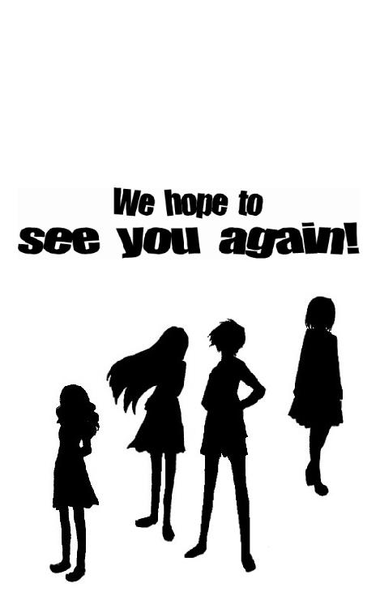

| ガールズレビュー〈ステイ〉 (4seasons song) | |
| 友桐 夏 | |
| (2018) | |
――言葉を選ぶのっておもしろいわね。だって、それによってほかの人が喜んだり怒ったりするんだもの。同じ文字数の言葉でも、ぜんぜんちがう反応を引きだせるの。似たような言葉でも、配列を変えるだけでまったく別の意味になったりしてね。
――そうだね。とくにあなたの言葉には不思議な魅力があるから、反応する人は多いだろうって思えるな。
――でもこれまでは長さを気にしてなかったわ。スマートな発言ではなかった。無駄が多かったということに気づくことができたの。アイリスのおかげよ。どうもありがとう。
――どういたしまして。
１
天をカエデが覆っていた。
豪華なレース編みに似た複雑さで枝葉がかさなり、長く続く細い道にまだらな影を落としていた。人気も動物や鳥の気配もなく、周囲は粛然としていて、山道というより参道らしい空気が漂っている。
このゆるやかな勾配をのぼりはじめて、もう何分が過ぎただろう。
車輪のついたトランクを押す手にはじっとり汗がにじんでいたものの、湿気を多く含んだ空気が喉に優しく、疲労感はそれほどない。ミズキは時刻を確認するため携帯端末を取りだすかどうか迷いながら、何気なく頭上を仰いだ。
左右からせりだした枝葉の向こうに、澄んだ青い空がちらちら見える。蜘蛛の巣に引っかかった朝露のように、天のそこここに眩しい陽射しがたまっている。
まるで光り輝く妖精の粉が撒かれたみたい。
ミズキはぽつりと考えた。
確か『ピーターパン』ではティンカーベルの振り撒いた粉を浴びて、ウエンディーたちが永遠の国、ネバーランドへ旅立つのだったわ。じゃあ、あたしがこの先たどりつくのは、いったいどんな国なのかしら。
昨夜になって送信されてきた簡略な地図の内容を鵜呑みにするなら、目的地はもうすぐだ。けれどそこにどんなものがあるのか、まだミズキは知らない。別荘なのかロッジなのか民家なのか。もしかしたらただの空き地が広がっていて、立て看板に「引っかかったね。ご苦労さま。アイリスより」なんて張り紙がしてあるだけかもしれない。少なくとも海賊やワニのいるおとぎの国でないことだけは確かだった。
夏休みが終われば、また知識の習得に励むだけの窮屈な毎日がはじまる。お仕着せの制服におとなしく袖を通し出走を待つ駿馬の待機場みたいな張りつめた空気の漂う高校へ通う生活に否応なく戻されてしまう。この道の先に待ち受けているのがなんであれ、それは短期間で消滅する、はかない夢の国に過ぎないのだった。
ミズキは期待と不安を等分に感じつつ、顔を正面に向けて足をとめた。
膝でトランクを支えながら片手で軽く目元をこする。すると閉じ合わせたまぶたの裏に白い発光体がいくつも見えた。剥きだしの後頭部を覆うように質感のある木漏れ日が降りそそいでいる。大きな手でそっと撫でられているみたい。心地よく思ったのはつかのまで、すぐに黒髪がじりじり灼かれだした。思わず悲鳴を上げながら、振りかかった火の粉を払うように、その場で両手をばたばたさせる。
もう。みっともないな。
だれもいない。だれにも見られていないとわかっているのに、肩をすくめて上目づかいにあたりを見まわしてしまう。必要もないのにキャミソールの肩紐を直しながら、ゆっくりと呼吸して乱れた息づかいと動揺をおさめた。
こんなの、まったくあたしらしくないな。
あたしはもっと冷静でおとなっぽい女の子だったはずだ。こんな普通の女子高生みたいな騒がしい行動はとらなかったはず。馴染みのない場所にいるからといって浮き足立つような不安定な人間じゃなかったはずだわ。なんとなく腹立たしい気分で息をとめ、無理に顔を強張らせた。すぐに面倒になり、ぷはっと口から息を吐く。
いや、でもものは考えようか。
これからしばらくのあいだは、あたしらしくないほうがいいわけだものね。むしろ意識して今みたいに自分らしくない行動をとったほうがいいかもしれない。キャッと叫んで飛び跳ねてみたり、頬を赤く染めて恥じらってみせたり。それもあまりにあからさまだと、かえって演じていると疑われそうだけど。だったらいっそ、寡黙なお嬢さまを装って黙って微笑んでいようかしら。馬鹿みたいだけど、ボロをだすよりずっといいはず。
やれやれ。面倒なことだわ。
ミズキは嘆息して深く肩を落とす。
やっぱりその場の勢いで参加表明なんてするんじゃなかった。
だいたい最初はなんだか嫌な予感がしていたのに、いつのまにかうまく流れにのせられてしまった。あれもそうとうあたしらしくない失態だったな。
げっそりした気分で斜面の先に目を向けた。
まだ木々の茂みと影しか見えない。
目覚ましのアラームが作動したように、不意にミズキの間近で一匹の蝉が鳴きはじめた。煽られたように、すぐに別の方向からも同じ種類の鳴き声が加わる。
山道に騒々しい蝉しぐれが満ちた。
２
ミズキがアイリスと出会ったのは、近隣府県に七校をかまえる中高生向け進学塾の『教室』だった。といってもそれは現実に存在しない仮想空間であり、互いの名前はハンドルネームだ。塾の公式サイト『教室』に入るにはＩＤとパスワードが必要であり、ＩＤを持つのは同じ塾の生徒と教職員に限られている。一人ひとりのパスワードは毎週自動的に更新され、メールでそれぞれに通知される仕組みだ。だから塾をやめた生徒や教職員はすぐにアクセスできなくなる。
ミズキは四年半前、中学入学と同時に入塾試験を受けた。その直後からたびたび『教室』を訪れ、掲示板やチャットルームを利用していた。一方アイリスが『教室』に足跡を残すようになったのは、今年に入ってからだった。
アイリスの発言はいつも短かった。
それでいてレスポンスは群を抜いて多かった。
同じような質問であってもアイリスのものには何十という返答がまたたくまにつく。チャットルームにあらわれようものなら、分刻みに人口密度が増加した。これが現実世界ならどんな美少年・美少女かと想像するところだが、ネット世界で容姿は無力だ。アイリスの魅力は入力されて表示される短いセンテンスの言葉からにじみ出るたぐいのものだった。
無駄のない言葉。
それでいて要点が相手に確実に伝わらなければいけない。
ミズキがアイリスを真似てそれを試みると、だらだら長文を打ちこむよりよほど長い時間がかかった。それでもゴミと呼ばれるような書きこみをするより、ずっと気分も反応もいい。ひと月ほども続けていると、アイリスに並ぶとまではいかないものの、ミズキもまた『教室』で人気の高い生徒になっていた。
実生活では他人と一線を画して過ごしていることが多いミズキだったから、同年代の塾生が自分の発言に先を競ってこたえてくれるという状況は新鮮でなかなか楽しかった。『教室』への書きこみはほとんど日課になっていた。
教えてくださいという趣旨の書きこみを発見したのは、そんなときだ。天文に関する専門的な事柄だった。書きこみされてから一日以上経っていたのに、レスはひとつもついていない。ミズキは月にも星にもほとんど興味を持っていなかったが、その質問のこたえはたまたま知っていた。けれども春休み前のことであり、期末試験を数日後に控えていたから、いつものように時間をかけて文面を整える余裕がなかった。それで新聞のコラムで読んだと前置きした上で覚えている限りの文章を打ちこみ、「時間がなかったので長文になりました」と結んだ。
ブラウザーを閉じて勉強をはじめたものの、すぐに後悔の念に襲われた。
やっぱり短文でかっこよく説明すべきだったわ。
ひとつもレスがついていない状態であれば、自分の書きこみはパスワードを打ちこむことで削除できる。再び『教室』を訪れて掲示板を見ると、ほんの数分のあいだに思いがけずそれが書きこまれていた。
《パスカルだね》
発言者はアイリスだった。
ミズキはすぐにアイリスにメールを送った。
パスカルといえば圧力の単位だ。一パスカルは一平方メートルに一ニュートンの力が作用するとき働く圧力のこと。それがどうして天文にかかわるのか理解できなかった。
きっと書きこみミスだと判断して、アイリスにそれを知らせた。するとまもなくアイリスから返信が届いた。
パスカルはフランスの哲学・物理学者。
彼がだれかへ宛てた手紙にそう記しているとなにかで読んだ覚えがある。「時間がなかったので長文になりました」とね。短い言葉で用件を伝えるには、それなりに時間が必要だから。
ミズキの発言には注目していた。最近自分のサイトをたちあげた。気の合う数人にしかアドレスを教えていない。ミズキにもきてもらえると嬉しい。メンバーは私アイリスのほかに、シャドウ、ララ、ミスティー。全員が高校生で女性。
お待ちしています。
ぶしつけともいえる内容だったけれどミズキは喜んでその招待に応じた。それを機に『教室』からは足が遠のいてしまったけれど、これはまったく惜しくなかった。
アイリスのサイトのメインはチャットルームであり、毎晩のように五人のメンバーがつどった。話題は塾内の噂話から政治経済まで多岐にわたる。ホストらしく主導権を握っていたのは常にアイリスだったものの、発言内容では全員が彼女にひけをとらず白熱した議論が朝まで続くこともたびたびあった。ミズキはすぐにほかの三人とも馴染み、個人的にメール交換するようにもなった。
ミスティーはアイリスをざっくばらんにしたような少女だった。アイリスと同じように博識だったけれど発言には枝葉も無駄も多く、話題をどこまでも脱線させた。根っからのお喋り好きなのかそれとも実はかなりの寂しがり屋なのか、メンバー中いちばんのメール魔としても名を馳せていた。
ララは五人のなかでもっとも女の子っぽく、ファッションや流行について語りだすととまらなかった。常にナチュラル・ハイ状態で天然ボケな意見を連発していたものの、ごくまれにだれも想像していなかったような突飛なアイデアを披露して面目躍如することもあった。「その発想力は天才の域」アイリスが過去にそう評したときにはすぐさまほかの全員が同意を示した。読書量が恐ろしく多く、彼女に薦められた小説にはハズレがなかった。
シャドウは能ある鷹は爪を隠すというタイプだった。発言こそ少なかったものの数学的な理詰めの思考力で存在感を見せつけた。議論が平行線をたどり画面が更新されなくなったとき、やっと発言するのがいつも彼女だった。もっと早く教えてくれればよかったのにとだれかが抗議すると、状況が完全に把握できてから総攻撃をかける主義だと、熟練した武将のようなことを言った。
五人はおしなべて私生活についてはふれなかった。
もしかしたらあたしが加わるまでにそういう取り決めがなされていたのかもしれない。ミズキは最初のうちそんなふうに思っていたけれど、いつからか五人全員が吹聴したくなるような恵まれた家庭環境にないのではないかと考えるようになっていた。
親やきょうだいに関する話題は、暗黙の了解としてタブーだった。
五人全員が高校生で、性別は女性。
それら基本的な情報すら『教室』でもいっさい公開されていなかったから、それぞれの自己申告によるものだ。ミズキやララは男性がまじっているのではないかと冗談半分に言うことがあったものの、アイリスには確信があるようだった。
これだけ話しこめるのはみんな女性だからだよ。一般的に男性は女性ほど共感能力が高くないと言われている。反面、女性より勝ち負けにこだわる傾向がある。議論ははずむだろうけれど、たとえばララの乙女チックな空想やシャドウの救いのない人間性悪論に律儀に朝までつき合いはしないよ。
そう言われるとそうかなと思ってしまうのが、あいかわらずのアイリス効果だった。
その彼女が、八月末のオフ会を提案したのだ。夏休みの開始を一週間後に控えた七月半ばのことだった。深夜に近い時刻、チャットルームにはやはり五人全員が揃っていた。
〈アイリス〉顔をつき合わして話してみようよ。
その発言を目にしても、ミズキはしばらくなんとも思わなかった。
顔をつき合わして話す、か。ええと、それはどういう意味だったかな。腹を割って話すという慣用句と似たような意味だったかしら？
白く発光する画面をぼんやり眺めてボケていたミズキを置き去りにして、アイリスはすみやかに企画を具体化させた。
〈アイリス〉どうせなら泊まりがけがいいと思う。
〈アイリス〉日程は夏期休暇中の五日間程度。場所はこちらで用意する。あてがある。宿泊費も食費も必要ないけど交通費は各自で負担。塾の集中ゼミだと考えればいい。実際そこは避暑地だから。
〈アイリス〉気心のしれた仲間たちだけで、本当の意味での休暇というものを一度堪能してみたいと考えている。どうだろうか。
〈アイリス〉四人の意見を聞きたい。
それに対し、もっとも早く参加を表明したのはララだった。
〈ララ〉おもしろそう！ 行きたいわ、あたし。集まろう、集まろうっ。泊まりがけで五日間もお喋りできるなんて夢みたいだわ。
愛想のないフォントからも彼女らしい屈託のなさが読み取れた。
その無邪気さと無防備さに、ミズキは驚くと同時に危機感を覚えた。ネット犯罪は増加している。子ども――とは言えない年齢になってしまったけれど、女子中高生を狙った連れ去り事件も多発している。こんな簡単に知らない人と会う約束を交わしてしまっていいのかしら？ しかも初対面なのに日帰りでもないのだ。もしもメンバーのだれかが男性だったり塾の職員だったりしたら、どうするんだろ。
オレンジ色のデスクライトに照らされた半畳ほどの個室のなかで、ミズキは落ちつかなく両手を開いたり閉じたりしていた。ディスプレイに新たな文字が表示されたのを見て、動きをとめた。
〈シャドウ〉そうね。そろそろ会ってみてもいい頃かもね。
〈シャドウ〉もともとあたしたちはみんな『教室』の生徒だから、ある程度身元は保証されてるし。それぞれＩＤが表示されていて、管理者に訊ねれば個人情報はすぐに調べられる。悪さをしてもすぐに特定されて捕まる。それくらいのこと考えつかない馬鹿なんて、ここにはいないだろうから。
〈アイリス〉その言い方はひどいな。
〈アイリス〉呼び集めて悪さしようなんて、思ってないよ。
アイリスの発言が更新された。
それから数十秒が過ぎた。まだ意見を表明していないふたりが発言するのを、ほかの三人が黙って待っているのだ。
ミズキはシャドウの発言を意外に感じていた。どうしたんだろ。常に慎重な彼女らしくないな。その反対に、まるで中身が入れ替わったようにいつもは思ったことをすぐに打ちこんで失言率の高いミスティーが返事を保留しているのも不思議だった。
ミズキは唇をなめて潤してから、ホームポジションに指を置いた。
〈ミズキ〉たとえばあたしを含む四人がアイリスに誘拐もしくは監禁されたとするわね。
〈アイリス〉ずいぶん信用がなかったんだな。
〈ミズキ〉ごめんなさい。ただのたとえ話だから気を悪くしないでね。
〈ミズキ〉あたしたちは同じ塾に通っているという共通点があるし、ここで交流があったこともすぐにわかる。警察は早い段階で犯人にたどりつくと思うわ。
〈ララ〉じゃあ問題ないよね。
〈ミズキ〉ううん。でも、もしもいなくなったのがひとりだけならどうかしら？
〈ミズキ〉同じ系列の塾に通う生徒四人がいっせいに消えたなら、それが犯人を示す有力な手がかりになるわよね。でも消えたのがたったひとりなら？ それなら行きずりの変質者の可能性も指摘されるだろうし、捜査範囲が広まって、なかなか犯人を特定できないと思うの。
〈ララ〉ひとりなら、あとの三人は無事だったんでしょ？ だったら、その三人が声を上げると思うなぁ。会ったあとでこのサイトにこなくなっただれかがいたなら、変だってきっと思うよ。
〈ミズキ〉その三人がだれも声を上げなかったら？
〈ララ〉それは、ないっ！
〈ララ〉ないっ、ないっ。絶っ対に、ないっ。
〈シャドウ〉自分以外の四人が共謀している可能性もあるというわけね。なるほどね。それは絶対にないとは言いきれないわよ。ララ小娘もミズキの半分くらいは慎重になったほうがいいわね。
〈ララ〉うるさいっ。小娘って言うなっ。それ、疑心暗鬼っていうんだよ。
〈アイリス〉可能性はともかく、四人が共謀してひとりを騙すなんて非合理的な計画を実行するとは思えないな。複数人での犯罪はバレやすいし、どうしても役割や分け前の損得が出てくる。犯罪はひとりでやるのが効率いいよね。もちろん、する気はないよ。
〈ララ〉アイリスになら、きっとできるよっ！
少女たちの笑い声がまぼろしに聴こえた。
同じ夜のなか、それぞれが所属する場所に置かれたパソコンの前でララの不謹慎な書きこみに苦笑しているだろう、自分とララ以外の三人の少女。まだシルエットだけのその姿を想像しながら、ミズキは新たな文章を入力してエンターキーを押した。
〈ミズキ〉四人が共謀しているというより、ひとりがひとりを狙っているとしたらどうかなって考えるのよ。被害者のほかには加害者がひとりいるだけだったら。声を上げるような第三者が、最初から存在していなかったとしたら？
〈ララ〉ぽえぽえ。意味がわからないよん。
〈シャドウ〉よく考えろ、ララ。
〈ミスティー〉被害者を除く四人が実は同一人物だったとしたら、とミズキは言ってるのよ。うん。それなら会おうと誘われて出ていくのは、飛んで火に入る夏の虫ね。
〈シャドウ〉複数だから安全だとは言えないわけね。確かにそうね。実際、複数という前提が崩れない保証はないわ。マシンが複数あってブラインドタッチができて、頭のなかを何分割かできればいい。
〈アイリス〉ミズキは頭がいいね。
〈ミズキ〉ごめんなさい。
〈ララ〉あはは。今の、すっごい嫌味だったよね。
〈アイリス〉嫌味じゃないよ。
〈ミスティー〉でもさ、ＩＤの問題があるわよ。あたしたちはそれをメールアドレスがわりにして『教室』経由でメール交換してるんだからさ。ＩＤがなければ『教室』に入れない。アイリスのサイトにアクセスすることはできても、メール交換はできないわよ。
〈ミズキ〉ＩＤを余分にもらうのは不可能かしら。
〈ミスティー〉不可能よ。
〈シャドウ〉そうね。書類上だけ在籍している幽霊塾生なんてのも、あの塾では考えられない。入塾試験も面接もあるし、欠席が続けば強制的にやめさせられてしまう。経営者の方針らしいけど、あの高度なセキュリティーはいろんな意味で厄介だわ。
〈ララ〉パスワードも次々変わるし。
〈アイリス〉卒業した生徒や塾をやめた生徒のＩＤもすぐに削除されるしね。『教室』で交流できるのは現役の塾生とスタッフに限られている。それは公然の事実ね。だからこそ大学生や浪人生の元塾生がつどうサイトというのも存在している。
〈シャドウ〉『講堂』とか。
〈ララ〉『予備校』とか？
〈ミズキ〉そうか。
ミズキは顎をそらして天井を仰いだ。
ずっと同じ姿勢でいたせいで肩や背中が強張っている。首や腕をまわしてみると、わずかな痛みをともないながら周辺の関節が音をたてた。ほかの四人も肩こりに悩んでいるだろうか。考えてミズキは息をついた。
なに言ってるんだろ、あたし。
自分以外の四人が同一人物だなんて、ありえないってば。それだけの手間をかけて信用させてあたしをおびきだして、相手にいったいどんなメリットがあるっていうのよ。自意識過剰もいいとこだわ。
アイリスたちと一緒にミズキの不安にこたえたことでミスティーは納得したらしく、遅ればせながらの参加表明をしていた。
〈ミスティー〉五日間ね。結構長いわね。周囲にはなんて説明しようかな。
〈シャドウ〉あたしは面倒だから本当に塾の夏季集中講座だってことにするわよ。某湖畔のホテルに有名講師を招いて朝から晩まで勉強三昧。そんな内容のプリントを捏造するのなんて簡単だもの。日頃のおこないがいいから疑われる心配もないし。
〈ララ〉あたしもそのプリントほしい。
〈シャドウ〉メールに添付して送ってあげるわ。自分でプリントアウトして。
〈ララ〉やったっ。
〈シャドウ〉ところでさ、どうせ会うならもっと楽しみを増やさない？ 楽しみであって、保険にもなるし。
〈ミスティー〉具体的に説明して。
〈シャドウ〉集まっても「シャドウです」「ミスティーです」なんて自己紹介はしないでおきましょうよ。だれがだれなのかわからない状態で過ごしたいわ。生活するなかで「この人はアイリスっぽいな」とか「この能天気さはララだな」となんとなく思う程度にとどめておきたいの。そのこたえ合わせは、絶対にしない。
〈ミスティー〉どうして？
〈シャドウ〉会ったあともここでお喋りしたいからよ。
〈シャドウ〉あたしたちは本名も通っている塾がどこにあるかもまだ教え合ってはいないでしょう。この距離感はこのまま保っておきたいわ。余計な情報を知って気まずくなってしまったら、会ったことを後悔するかもしれないから。
〈ララ〉それはそうかも。
〈シャドウ〉だから、あたしたちはそれぞれまた新たな仮面をつけて会ってみましょう。本名でもハンドルネームでもない、新たな名前を用意するの。ただし会話内容に嘘をまぜてはいけないことにしよう。
〈シャドウ〉だれかが通っている塾は＊＊支部だと告白したら、それは本当のことよ。でも通っているのがだれなのかは、五分の一の確率になるわけ。自分がそれだと断定されないと思えば、口を滑らしてしまってもそれほど気に病まなくて済むわ。
〈ミスティー〉ここでの交流と同じように、匿名で気楽に話せるというわけね。
〈シャドウ〉そうよ。ゲーム感覚でおもしろそうでしょ？
〈ララ〉うんっ。おもしろそうっ！
〈ララ〉あたし、好きな名前がいっぱいあるんだよー。可愛くてお洒落で、漢字の並びが豪華なの。
〈シャドウ〉暴走族の落書きみたいな名前なんでしょう。
〈ミスティー〉想像できるわね。
〈ララ〉うるさい、うるさいっ。あたしが好きなんだから、いいんだようっ。
〈アイリス〉そうするとだれがララなのかはすぐにわかってしまうよ。では、ひとりひとつずつ名前をだして、それをシャッフルして五人に振りわけるというのではどうかな。
〈アイリス〉失礼。ミズキの意見をまだ聞いていなかった。
〈アイリス〉ミズキ？
ほかの三人は沈黙していた。
だれの書きこみもなくモニターは同じ画面を表示してかたまっている。
どうしようか。行きたい、会ってみたいと思う反面、理由のわからない不安と猜疑心がまだ心の隅に居座っている。尊敬しているといっても過言でないほど慕っているアイリスの招きを断れば、きっと後悔する。それがわかっていながら、なぜか気が進まなかった。
ミズキはいったんキーから指を離し、机に肘をついて鼻先で両手を組んだ。背中を丸めて前のめりになる。古めかしいデスクライトの唸りが少し近づく。ディスプレイの右下に表示されている時刻は、もう深夜だ。
ほかの寮生たちはみんな無意識の暗闇か夢の世界を漂っているんだろうな。消灯時間を過ぎてから自習室を使っている生徒がいるなんて、考えたことすらないだろう。これがあたしの日課だと彼女たちに知られたら、いったいどんな目で見られるだろうか。
ミズキは皮肉っぽく唇を歪めた。
いや、普段から協調性のない生真面目な人間として通っているあたしなら、深夜にここにいることだって似つかわしいと素直に納得されてしまうかもしれない。少なくとも窓から抜けだして夜遊びしているというより、よほど受け入れられやすいはずだ。あたしが露出度の高い服を着て同年代の手勢を引き連れて夜の裏道で悪魔のように微笑みながら他人を足蹴にしているとか――そんな光景、だれもちらりとも考えたことはないだろうな。
行ってみよう。
不意にすんなりと覚悟が決まった。
アイリスたちと夏休みの五日間を過ごす。『教室』に集まっている子たちが聞いたらきっと羨ましがる。優越感を持ってそんな時間を過ごす。危険があるかもしれないなんて考えもせず自分だけは大丈夫という過信のもと簡単に誘惑に負ける。たまにはそんな危機意識の低い快楽主義の女の子を演じてみるのも、おもしろいかもしれない。
すばやく身体を起こして背筋をのばすと、再びホームポジションに指を並べた。
〈ミズキ〉あたしにも、捏造プリントを送ってくれる？
３
中腹で道はふた手にわかれていた。
右手には未舗装の勾配が続き、ますます鬱蒼と生い茂る木々が不気味な影を落としている。道は蛇行していて十数メートル先はもう木立に隠れて見えなかった。
一方、左手には背の高い雑草が生い茂っている。
ここだわ。ミズキはトランクの持ち手を強く握りしめた。
まちがいない。ここが目的地だわ。
旺盛な草に覆い尽くされた平地の中央に、ヨーロッパの教会を思わせるライトベージュの洋館がどっしりとたたずんでいる。シンメトリーの端整なフォルム。天井が高いのか、二階建てにしてはずいぶん大きく感じられる。屋根にはられた煉瓦色のタイルが真上からの陽射しを浴びて時期はずれの紅葉みたいに輝いている。ひたいに手をかざして見上げてみると、青い空との対比が鮮やかだった。
ペンション？ 別荘？
個人の邸宅にしては立派な造りだ。
二階には等間隔に同じ大きさの窓が四つ並んでいた。
同サイズの部屋が並んでいるとすれば、やっぱり宿泊施設なのかもしれない。すべての窓に茶色い雨戸が下ろされている。建物中央の扉が地面よりずいぶん高い位置にあると感じるのは、その手前にあるはずの階段かスロープがすっかり隠れているからだろう。人が住むのをやめてからどれくらい経っているんだろう。ミズキの頭のなかに「廃屋」という言葉がぽつんと浮かんだ。その場に足をとめたまま、ぐるりと周囲を見まわしてみる。
アイリスからのメッセージが書かれた立て看板はなかったけれど、ミズキ以外の人間がいる気配もなかった。蝉の鳴き声と夏の陽射しと草いきれ。ああ、あたしがいちばんのりなんだわ。ミズキはジーンズのポケットから取りだしたハンカチで、ひたいの汗を丁寧に拭いた。
まるで遠足の日に真っ先に集合場所にやってきた気の早い子どもみたいだ。参加をしぶった人間としてはちょっと気まずい感じもするけれど、これがカムフラージュになって、あたしがミズキだとバレないで済むかもしれない。最初に到着していたからには、企画者のアイリスじゃないかと、本人以外の三人に疑われそうだ。考えてミズキはくすっと笑った。
そうなったら、とても光栄なんだけどな。
時刻は正午を二時間ばかり過ぎていた。ミズキの暮らす学生寮からこの場所まで、距離的にはそう遠くなかった。けれど交通の便が恐ろしく悪く、乗り継ぎに手間取ったせいもあり、時間的にも精神的もかなり遠くまで足をのばしたような感覚がある。
ＪＲを降りてからは私鉄に乗り換え、耳にした覚えがまったくない地名の駅に降り立った。空と田園地帯が信じられない配分で広がっていたっけ――。そこから一時間に一本しかない町営のバスに乗りこみ、なだらかな稜線がのびる山際へと向かった。
バスを降りてからは田んぼと畑に囲まれた幅のせまいあぜ道を半時間ほど、えんえんと進んだ。ようやく山のふもとにたどりつくと、今度はのぼり坂を十数分だ。アイリスから送信されてきた地図には五分と記されていたのだが、手荷物のためどうしても歩みは遅くなったし、途中で陽光に遊ばれていたせいもあって、倍以上の時間がかかってしまった。
四人は今頃まだバスを待っているのかもしれないな。
ミズキは地平線を背景に個性的な四人の少女が横並びに立っている風景を思い浮かべた。
てんでばらばらの服装をした少女たちが、言葉を交わすこともなく互いにそ知らぬ顔をして古めかしい外観のバスを待っているのだ。彼女たちの近くには錆の浮いたバスストップが微妙に傾いで立っている。もしかして、隣の子たちって。内心ドキドキしながらも、四人が四人とも取り澄ました表情で道の反対側へ白っぽい顔を向けている。
それとも、あの草原に倒れた巨大なホウキの柄のような一本道をのろのろと歩いているところだろうか。ぽつんぽつんと一定の間隔をあけて、先端を目指す四匹のてんとう虫みたいに黙々と前進しているのかな。
できることならそんな光景を見てみたかったけれど、あいにく蛇行する道を進むうち、山あいに入りこんでいた。田園風景はどこかへ隠れ、洋館のうしろにはただ真っ青な空が果てしなく広がるばかりだ。
いい天気だった。
扉までは、およそ十メートルといったところか。
雑草の海は広く深い。けれどよく見ると砂利敷きの小道がたよりなく一本のびていた。容赦なく雑草の侵略を受け、半ば失われかけた小道だ。生気に満ちた緑のなかにヘンゼルとグレーテルの道しるべめいた白い小石が点々とのぞく。ミズキはそれを踏みしめて小道を進み、階段をのぼった。小さなエントランスの右側の壁に呼び鈴がある。押してしばらく待ったものの、案の定インターホンはつながらなかった。
ミズキは緊張をといて肩を下げた。
そうよね。これでだれかがなかにいたら、陽射しに焼かれて灰になる特異体質なのかと疑うところだ。雨戸を閉めきって隠れているなんて、洋画の殺人鬼じゃあるまいし。
それでも鍵はかかっていないかもしれないと期待してノブをつかんでみたが、やはり扉はびくともしなかった。ミズキは荷物をその場に残し、建物を一周してみることにした。
草を避けて壁際を進む。裏にまわりこんでみると、四つずつ上下に並ぶ八つの窓が確認できた。通用口らしいものは見あたらない。建物から三メートルとあけず急斜面があり、杉の木が密集して頭を天に向けていた。
崖崩れでもおきたら、洋館は木々をなぎ倒しながらここを滑り落ちるってわけか。
想像して一瞬ぞっとしたものの、これだけの杉が根をはっているのだから普通の土地よりよほどかたい地盤であるはずだと思い直した。
こういうの、ブリティッシュ風とかいったかしら。
一階のセンターに扉。その左右に水平に窓。付け柱で格調高く飾り立てられたエントランス。お屋敷という言葉がよく似合う。輸入住宅では人気の高いタイプだと雑誌で読んだ覚えがある。反対側の側面を通過して脳裏に俯瞰図を描きながら建物の正面に戻ると、一段高くなった扉の前に、手品のように長身の少女がひとりあらわれていた。
「やあ」
目ざとくミズキに気づき、軽く手を上げて気安い調子の声で言う。
そのかたわらにミズキの大きなトランクがある。彼女自身の手荷物は肩に引っかけた灰色のデイパックひとつだ。ボーダーのシャツに黒いスリムジーンズ。さらりとした髪はショートで肩に届いていない。
――男の子？
軽く片方の膝を曲げて立つ姿が、少女というより成長期の少年のように感じられた。
まさか。まさかね。ぎくしゃくした足取りで近づいていくと、薄っぺらい身体にそれなりの凹凸があるのがわかった。どうやら同性だわ。ホッとしたところで、今度はカッと顔が熱くなった。あたしったら、なんて失礼な。
ボーダーシャツの彼女は整った歯並びを見せて爽やかに笑う。
「こんにちは。はじめましてと言うべきかしらね。だれであれ、つき合いは半年以上になるはずだけど。ほかの三人はまだきてないの？」
「そうみたい」
ミズキは平静を装い、素っ気なくこたえた。
とはいえ好奇心は抑えられない。だれだ、だれだろ。しぜんなかたちで水を向ければ、いくらかのヒントは得られるはずだ。言葉を選びつつ自立するトランクに視線を移し、持ち手の横に厚手の白い封筒が数枚ずらりと並べられているのに気づいた。
「それは？」
「たぶん、『名前』が入っているんでしょうよ」
ボーダーシャツの彼女はちらりと意味ありげな眼差しを封筒に向ける。
「不正を働いていないと示すためには全員揃ってから開くのがベストなんでしょうけど――でも、それまで呼び名がないのは不便よね。どうせ何番目に選んでも確率は変わらないんだし、早いもの勝ちということで先に決めてしまいましょうよ」
「それはいいと思うけど。でも、その封筒はどこにあったの？ このあたりは一通り見たはずだけど、ぜんぜん気づかなかったわ」
「ここじゃなくて、郵便受けに入ってたの。あのへんの草むらに倒れていたわ。あたしは、たまたま足がそれに引っかかってね。世帯主の名前が書かれてるんじゃないかと思って調べてみたら、これが入ってたってわけ」
指さされてそちらを見ると、舗道から玄関先まで一直線に草が踏み倒され、新たな道が開通していた。
封筒はちょうど五枚あった。
ミズキはこの数日前、熟考の末に決めた「名前」をアイリスへ宛てて送信していた。
メールを受け取った彼女がそれをどんな方法で五人に振りわけるつもりなのか、実は興味津々だった。だから封筒に手をのばしながら納得していた。そうか。この方法なら、アイリス自身にもどれを引くかわからないんだわ。そのために前日までにここへきて、郵便受けに放りこんで行ったんだ。だれにも気づかれなければ、さりげなく自分が見つけるつもりだったのかもしれない。実際には雑草のなかをショートカットして玄関に向かった彼女に発見されたわけだけれど。ミズキは考えながらちらっと上目づかいになった。
もちろん、彼女がアイリスかもしれない。
「ああ、そうだ。訊かれる前にこたえておくけど、郵便受けにはアルファベットが刻まれていたわ。世帯主の名前なのか、この建物の名称なのかはわからないけど。ローマ字読みで、『ムラサキ、カン』だってさ」
―― ＭＵＲＡＳＡＫＩ ＫＡＮ
彼女は心持ち顎を上げて首を傾げた。
「なんなのかしらね？ 人の名前だとしたら、ムラサキが苗字で、名前がカンよね。洋館の名前だとすればカンはヤカタという字になるけど、だとしたらなにが紫なのかしら」
「屋根も壁も紫ではないわね」
「ここがそんなあやしげな建物だったら、あたしは即刻引き返してるけど。その封筒、あなたが先にきてたんだから、先に選んでかまわないわよ」
「わかったわ」
ミズキはこたえて手近な一枚を取った。
ボーダーシャツの彼女は残り四枚の封筒の上で数秒手をさまよわせてから、真剣な顔で選び取る。封筒は端から端までしっかり糊づけされていた。同じ封筒をすぐに用意するのは不可能だろうし、これならあとからきた三人に不正を疑われる心配はなさそうだ。考えながら、封筒の横腹を縦にちぎった。
トランプほどの大きさのカードが一枚、つるりと出てくる。手にしてみると一点の汚れもなく白い。なんだこれ。手首を返して裏向けると、印刷された文字がふたつ並んでいた。
―― 深月
「ミヅキ？」
手元をのぞきこんだボーダーシャツの彼女が呟く。
「ははん。そういう手もあったのね」
笑いまじりに言ったものの、すぐに口元を引きしめ首を横に振った。
「おっと、いけない。こんなこと言うとあたしがミズキじゃないとバレてしまうわね。そういう効果を狙ってわざと発言したミズキであるという可能性も、なきにしもあらずとはいえ」
「ミズキがだした名前ではないかもしれないわ。この漢字をあてはめるなら、『ツ』に点々と『ス』に点々でちがいがあるもの。ミズキ以外のだれかがいたずら心をおこしたのかも」
「まあね」
彼女はこだわりなく認めた。
けれども実際のところ、それは確かにミズキがアイリスに伝えた名前だった。自分に振りわけられることを望んでいたわけではなく、その名前になっただれかがなんと言うか聞いてみたかったのだ。
こんな名前は嫌だと言うか、それとも光栄だと言ってくれるか。自分が見事それを引きあててしまったことで、思惑は台無しになってしまった。五分の一の確率くらいならきっと避けられるだろうと軽く考えていたんだけどな。うまくいかないものだな。
深月は自戒して神妙な面持ちになった。
「でもどちらにしても、いい名前だわ。あなたによく似合っているわよ。よろしく、深月」
「よろしく」
こたえて深月は彼女の手元を見た。
「で、あなたは」
「あたしは、これよ」
彼女は指先でひらりとカードを回転させる。
―― 伶沙
「レイ、サ？」
「そう読むしかないわよね。まあ、これなら許容範囲内だわ。乙女チックな名前でなくてよかった。実はずいぶん心配していたの」
「似合っていると思うわ。名前もあなたもきれいだもの」
「ありがとう」
伶沙は照れるでもなくにっこり笑う。
育ちのよさそうな人だ。頭もよさそう。
ミスティーか、それともシャドウだろうか。ミズキは反射的に黙考していた。
アイリスの話し方ではないけれど、現実とネット世界でそれが共通していると考えるのはまちがいだろう。本名も顔もわからないのだから、だれでもどんな仮面でも使用できた。意識して別人を演じていた子がいなかったとは限らない。彼女はこうだと思いこんでいると実際とのギャップに戸惑うことになりそうだ。とはいえ、まさかララではないだろう。
深月は口元をカードで隠して忍び笑った。
「さて、次はどうやってこのなかに入るかだけど」
伶沙は残りの封筒を手の上で揃えてから、片手でこつこつ扉を打った。
深月はとくに考えもせず思ったことを口にする。
「鍵を持ってる人がくるまで待つしかないんじゃないの」
「そうすると、その人物がアイリスじゃないかって疑われそうよね。この封筒だって、それを避けるために郵便受けに入れられていたんだろうし。うん？ とするともしかしてまだあのなかにあったのかな」
言い終わる前に伶沙は雑草地帯に踏み入っていた。
行動力のある人だ。それに、どこが道だとかそうでないとか、ジーンズに草の汁や土埃がつくかもしれないなんてことは、まったく気にならない性格らしい。大雑把というか、おおらかというか。他人の目をまったく気にしない鈍感な者とはかかわり合いになりたくない、と日頃から思っていた深月だったが伶沙に対しては文句なしの好感をいだいた。
ウエストを折り返してスカートを短く穿いていながらだらしなく足を開いて椅子にかけていたり、信憑性の乏しい下品な噂話を恥ずかしげもなく吹聴していたり。そんな無邪気な生徒を校内で見かけるたび、憎しみに近い感情を覚えた。これと自分は同じ学校の生徒。これと自分は同じ女。これと自分は、同じ生物。そう考えると吐き気さえして、ますます他人と距離をおきたくなった。けれど伶沙の行動にはまったく不快感を覚えなかった。その理由は考えるまでもなく明らかだった。
簡単なことだわ。彼女の服装や言動に潔癖さがにじみ出ているからだ。頭の回転が速いから軽率そうに見えるだけで、実際のところ、そうではない。汚れれば洗う。乱れれば直す。自分の判断に彼女は確信を持って動いている。それは経験に裏打ちされていて迷いがないから、見ているほうもすっきりと気持ちいいんだ。
深月はひっそり苦笑した。
彼女の近くにいれば、この五日間は平穏無事にのりきれるかもしれないな。伶沙の発散する光のような明るさと自信は昼間の星を消してしまう太陽みたいに、あたしの本性をすっかり隠してくれるだろう。
伶沙は背の高い雑草を払いのけて新たな道を開拓し、エントランスから五メートルほど離れた地点で足をとめた。塗装とも錆ともつかない複雑な色をした一本足の郵便受けを地面に突き立て、身をかがめてひょいとなかをのぞきこむ。
「ある？」
「ないわねえ。あれば音がしただろうしね」
「足元に落ちてない？」
「ないなあ」
こたえて伶沙はその場にしゃがみこんだ。
姿が半分見えなくなる。こぶりな頭のかたちにそって流れた髪が、健康的な光沢で輝いている。南国の果実みたいな伶沙の頭が草の上を浮きつ沈みつ漂っている。
「もう、やんなるわねえ。この暑いなかあれだけ歩いてきたんだから、さっさと屋内で涼みたいってのに。ねえ、深月もそのへん適当に探してみてよ。植木鉢の下とか軒の上とか。泥棒が目をつけそうなところを重点的に調べるといいかもしれない」
「わかったわ」
深月は苦笑まじりにこたえ、言われたとおり玄関付近を歩きまわった。
あいにく植木鉢はひとつもなく、軒には指先さえ届かない。扉の下の隙間や蝶番の上下をのぞきこんだり周辺の草を足で掻きわけたりしてから、ふと思いついて玄関横の大きな窓に歩み寄る。雨戸の下部に両手をかけて押し上げてみると、からから、と音をたててそれはすんなりと動いた。
「あっ」
「どうしたの」
「あったわ。鍵を見つけた」
雨戸に踏まれていた窓枠の端に、それはあった。アンティークの玩具のような銅色の鍵だ。目立つようにという意味か、頭に黄色いリボンが結ばれている。
深月は鍵を取り、汗ばんだ手のひらの上にそっと置いた。
ひんやりした感触とささやかな重みが心地いい。そういえばロッカーや自転車以外の鍵をあたしが手にするのは、これがはじめてなんだわ。そう気づくと、じんわり胸が熱くなった。
学生寮の玄関は寮母という役職に就く中年女性が管理していて、それぞれの個室の鍵はカバン型の数字錠が使われている。以前はちゃんとした鍵が使われていたらしいのだが、紛失する生徒が相次いだからという理由で深月の入寮前に取り替えられていたのだ。だから深月がイメージするいちばん馴染み深い鍵とは、四つの数字の並びだった。
でも、普通は鍵といえばこれよね。
そう考えると、このかたちや重みを新鮮なものと感じている自分がひどくさびしい人間であるように思えた。あたしの心には、虫くいの穴がいくつもあいている。こんなふうに普通の家庭で育ったなら当然知っているはずの情報がいくつも欠けているんだわ。自嘲めいた笑みを浮かべつつ、金属に刻まれたギザギザ部分を親指の腹でそっと撫でる。
これが鍵。これが自分の手で扉を開けようとするときの気持ち。
なかに入ればホッと息をつくことができる。聡明な同年代の少女たちと、きっと楽しい時間を過ごせる。そう無条件に信じさせてくれる。鍵と結びつく心の動きとは本来こんなに温かいものだったんだわ。眠るためだけに使用しているせまい個室の扉を開けるときの感覚とは、ぜんぜんちがう。鍵をぎゅっと握りしめ、うつむけていた顔を上げると、いつのまにか目の前に伶沙が立っていた。
「でかしたね。あたしが荷物を運んであげるわよ」
「いい、いい。自分で運ぶわ」
深月は焦って置きっぱなしのトランクに視線を向けた。
「あんな大袈裟なカバンでくるつもりじゃなかったのよ。でもどうしても普通のカバンじゃ用意したものがぜんぶおさまらなくて。恥ずかしいわ。計画性のない子どもみたいよね」
「そんなことないわよ。女性の多くはそうじゃないの」
「自分のものは必要最小限しか入れてないのよ。ただ、みんなが退屈しないよう、娯楽品を持ってこうと思ったの。そうしたらだれがなにを好むのかわからないものだから、カードゲームやらボードゲームやら次々放りこむことになっちゃって。嗜好品も必要かと思ってクッキーやらチョコレートやら買ってきたわ。それで気がついたら、あんな大荷物になっちゃってたの」
「だれかがそうなると思ったわ」
伶沙は喉を鳴らして楽しげに笑う。
「だからあたしは力仕事と雑用でも請け負って、みんなから借りたりもらったりしようと企んでたの。あたしは本当に必要最小限のものしか持ってきてないのよ。与えられるばかりでは心苦しいから、やっぱり荷物はあたしが運ぶわ」
歯ぎれよく言うと踵を返して玄関に向かう。とめるまもなく深月のトランクを持ち上げ、陽射しに照らされたエントランスの真んなかで振り返った。
「さあ、扉を開けて」
「あ、うん」
深月は頷いて伶沙に駆け寄った。
脳裏で記憶のワンシーンがいくつもフラッシュバックする。
朝食は卵焼きと茹でただけのジャガイモとアジの開きと、玉ねぎと豆モヤシのお味噌汁だった。それらは早朝まとめて作られ、トレイにのせた状態で食堂のカウンターに並べられていた。ラップには水滴がびっしりついていて、焼き魚と卵焼きはレンジに入れるまでにそれを浴びてびしゃびしゃに濡れてしまった。
炊飯器からご飯をよそって、だれもいない食堂の窓辺でひとりで食べた。どこからかラジオ体操の音楽が聞こえていた。
午前中は自室のベッドに横たわり、だらだらと過ごしたのだった。正午前にやっと起き上がり、前日までに支度を終えていたトランクをそっと持ち上げた。個人情報を暗示するものや自分の好みにぴったり合ったデザインの服や雑貨は完全に排除し、必要なものはもちろん、不必要なものもあえてたくさん詰めこんでおいた。
釘で扉に直接打ちつけられた金具に引っかけた数字錠を、手のなかでかちんと閉めた。
だれもいない廊下にキャスターの滑る音が大きく響き渡っていた。ほとんどの生徒が帰省して静まり返っていた学生寮をあとにするとき、胸が高鳴ってどうしようもなく頬がゆるんだ。まだたった数時間前のことなのに、それらすべてが遠い日の出来事のように思える。
かたんかたんと音をたてながら灰色のフィルタが何重にも落ちて、深月の意識とそれらの記憶を遠ざけていく。映像も音も匂いも、秒刻みに薄らいでいく。
それとは対照的に現実は鮮明だった。
深月を手招いて呼びかける伶沙の頭上に、リアルな熱を投げかける真夏の午後の太陽があった。
４
三人目が訪れたのはそのおよそ三十分後のことだった。
室内には熱気がこもっていたため、荷物を置いた深月と伶沙はふた手にわかれて家中の雨戸と窓を開けてまわった。庭先の状況から覚悟していたほど内部は荒れておらず、どの部屋もがらんとした印象ではあったものの、チェストや鏡台やベッドは残されていた。どれも適度に古いタイプではあったものの埃っぽさはまったくない。
ごく最近、人の手が入っているな。
テレビと固定電話は見あたらなかったが、ドライヤーやコーヒーメーカーといった小型の家電は最新型が置かれていた。冷蔵庫と洗濯機は若干色あせていたものの、それぞれ問題なく使用できる状態だった。
二階の四室は予想していたとおりすべて同じ造りであり、同じ調度が入れられていた。ベッドの端には三つ折りにされた軽そうな夏かけ布団と四角くたたまれた白いシーツ。そして大きな白い枕が整然と積み上げられていた。
一階にはシャワーボックスのついた浴室と、広々としたダイニングルーム。白い天板のカウンターでキッチンスペースと区ぎられており、天井が高いこともあってちょっとしたダンスホールのような印象だ。換気のかたわら、すべての部屋をあらためた深月がダイニングに戻ると、カウンターの奥で伶沙がきびきび働いていた。
「電気もガスも水道も通ってるわよ」
振り向かず言いながら、シンクに伏せられていたグラスを取って水道の蛇口をひねる。水を満たしたグラスに鼻を近づけ、首を傾げながらグラスの縁に口をつけた。よほどひどい味だったのか、すぐに顔をしかめて、ぺっと吐きだす。
「ん――っ、金気くさっ。こりゃそうとう長いあいだパイプにたまってたんでしょうね。しばらくだしっぱなしにしておかなきゃ」
「ご苦労さま」
深月が笑ってねぎらうのにかぶせ、不意に庭先で金属音が響いた。
舌をだしたままの伶沙が窓の外に目を向ける。
「だれかきたみたいね」
呟くと、蛇口を全開にしてから近くの窓に歩み寄った。深月も小走りで伶沙に続く。窓枠に両手をつくと、上半身をぐんと外にだし正面の景色を眺めた。
頭上には青空。
眼下に広がるのは雑草の海だ。
「あー、うっとうしい。明日あたりここの草むしりをしたいわ。この見晴らしじゃバカンスの気分になれないもの。蒸し暑くても日が暮れる前にぜんぶの窓を閉めないと、大量の蚊が入ってきそう」
「あたし虫除けスプレーも持ってきたわ」
「へえ？」
伶沙はおもむろに首をまわして深月を見つめた。
不思議なものを見るような目だ。茶褐色の虹彩に深月の顔が薄く映りこんでいる。なにかおかしなことを言ったかしら。利発な少年のような伶沙に無言で注視されるのは、あまり気分のいいものではなかった。たまりかねて深月が口を開こうとしたとき、ふっと伶沙が笑みを浮かべた。
「あんた、おもしろいわね。それだけ見栄えのする容姿なら、いちいち言葉にしなくたって男も女も進んで世話をやいてくれただろうに。あのあくの強いメンバーのなかに、あんたみたいなのもいたのね。他人のために気を配るような殊勝な性格の子がね」
「気配り上手は苦労人が多いんだって」
見栄えのする云々というお世辞は聞き流し、深月はしらっと伶沙にこたえる。
「ふふん、そう。あたしも苦労ならそれなりにしてきてるけど」
伶沙はからかうような語調でこたえ、肩をすくめた。
「でもあたしは性格がひねくれてるからか、他人のために無条件でなにかしてやろうなんて気はあまりないけど。――ああ、いたわ。あのオレンジ色のちっこいのが三人目なのね。なにしてるのかしら」
「草むしり？」
「まさか」
三人目は草むらにうずくまっていた。
地表を覆う緑のなかにちらちらと明るい色がのぞいている。窓枠に膝をかけて身をのりだした伶沙が、すうっと息を吸いこんだ。
「――こらっ！」
「きゃあ！」
短い悲鳴とともに栗色の髪の少女が立ち上がる。
天然なのか人工なのか、ちょっと珍しいほど見事な巻き毛だ。おお、すごい。びっくり箱みたいだわ。はじけたバネが余韻で揺れているかのように髪の房がはずんでいる。
「あう、あの、ちがうわっ。あたしじゃないのよ」
彼女は早口でまくしたてながら、ぶんぶんと首を左右に振った。
「なにもしてないわ。あたしはただ、メールボックスになにか書かれてるかなって思って近寄っただけなの。ほんのちょっとさわっただけなのに、勝手に倒れちゃったのようっ。あたしが壊したわけじゃなくてっ、きっと、これは、最初からボロだったのよ」
「そうよ。それ最初っからボロで倒れてたのよ」
伶沙は頷いてあっさり認める。
「最初っから倒れてたのを、あたしが起こして地面に突き立てておいたの。今までよくもってたものよね。根性のある郵便受けね。それより、あなたの荷物はどこにあるのよ」
胸まわりに白いパールが散った華やかなサマーワンピース姿の彼女は、当惑した表情で立ち尽くしている。伶沙は返事を聞かないうちに靴を履いたままの足を窓枠にかけた。ぎょっとした深月にちらりと笑いかけてから、ひらりと窓から飛び下りる。
風を受けてシャツの裾がまくれあがり、滑らかな白い背中があらわになった。縦一直線に走ったくぼみが妙になまめかしい。第一印象で育ちがよさそうと感じたのはとんでもないまちがいだったみたいだ。肌を露出した当人に代わり、深月が顔を火照らせた。
「ほらほら、荷物よ。どこよ。どれよ。トランク？ バッグ？ のぼり坂で疲れたでしょう。あたしが運んであげるわよ。遠慮しないで。さっさとなかに入って自分の名前を選んでしまって。そのあと冷たい水をだしてあげるわ」
すっかり伶沙のペースだった。
残りの封筒はダイニングテーブルの中央に三枚並べて置かれている。
脚にコケシのような凹凸のあるヨーロピアンカントリー調のテーブルで、同じスタイルのアームチェアが六脚、整然と並べられている。そのひとつに腰を落ちつけた三人目の少女は三枚の封筒を前にさんざ迷った末、一枚を選んで封を切った。
伶沙は彼女の荷物を運び終え、再びキッチンに入っている。蛇口を閉じてグラスを取ると、また水をくんでひと口含む。今度はまともな味だったらしく、新しいグラスをふたつ取って手早くそれらに水をそそいだ。
いい手際だ。すっかりお客様気分で伶沙の働きぶりを見ていた深月はそこでようやく我に返り、慌てて椅子から立ち上がった。
伶沙が振り向く。
「あら、座っていてよ。手伝ってくれなくて結構よ」
「でも。あ、そうだ」
深月は胸の前で手を打った。
部屋の隅に置かれていた自分のトランクを開け、中身をあさる。給仕を手伝わないかわりに、ものを提供することにした。
「クッキーとチョコレート、どっちがいいかな。クッキーはバター風味の素朴なやつで、チョコレートはなかにマカダミアナッツが入ってるの。パインアメもあるけど」
「あたし、チョコレートがいい」
こたえた声は伶沙のものではなかった。
深月はトランクの横に膝をついたまま首をまわす。
水の入ったグラスをテーブルに運んできた伶沙もあきれ顔で三人目の少女を見下ろしている。彼女の手元にグラスを置き、苦笑まじりの声で訊ねた。
「チョコレートがいい、じゃないわよ。あんたの名前はなんだったのよ」
「あたし、こんなのだったわ」
三人目の少女は不満げに口を尖らせた。
―― 宵子
「あっ、あはははははは！」
伶沙は身を折って豪快に笑いだした。
「似合ってる、似合ってる。あんた、それ以上ぴったりの名前はないわよ。倒れた郵便受けを一生懸命立ててたあたり、まさしくそんな感じ。うん、いい名前だわ。よい子ね。よい子、よい子」
「うるさいよっ。そんなに連呼しないでほしいわ。傷つくわっ」
宵子は頬をふくらませた。
その姿がまた伶沙を刺激したようで、笑い声が再びはじける。
「ひどいわ」
宵子はテーブルに両肘をついて背中を丸めた。握りしめた両手で口元を隠し、じっとり伶沙を睨んでいる。まあまあ、となだめながら深月は宵子に歩み寄り、金の包み紙のひと口チョコレートをみっつ渡した。
とたんに宵子は笑顔になった。
「ありがと、深月」
「どういたしまして」
気分が高揚しているのか、丸みの強い頬の全体が可憐な薄紅色に染まっている。その中央にくっきりとした笑窪が浮かぶ。高校生とは思えないあどけない顔立ちの少女だ。なんだか天真爛漫な子どもと喋っているみたい。深月もつられてにっこりしていた。
「宵子なんて、いったいだれがだした名前なのかしらね。いつも人のことを『小娘、小娘』って馬鹿にする、とってもひねくれた性格のだれかさんじゃないかって気がするけど。ねえ、深月って書いたのは、やっぱりミズキなのかしら」
「あらあら、宵子ちゃんたら」
伶沙は残りの封筒を手に取り、角を揃えながら、にやにや笑う。
見た目こそ少年めいた伶沙だけれど、あんがい几帳面な性格らしい。残り二枚の封筒をテーブルに戻すと、ジーンズのポケットからハンカチをだし、グラスからたれた水滴を神経質に拭きはじめた。
「言葉に気をつけないとねえ。そんなこと言うと、あんたがミズキじゃないとバレてしまうわよ。そういう効果を狙ってわざと発言したミズキであるという可能性も、なきにしもあらずとはいえ」
「そうよっ。そういう効果を狙ったのよ」
「ということはミズキなのか」
「あっ。そういうわけじゃないんだけど」
三たび笑いの発作におそわれた伶沙は、お腹をかかえてとうとうその場にしゃがみこんでしまった。なにがそんなにおかしいの、と宵子は真っ赤な顔で伶沙に抗議している。深月はそれとなく宵子を見つめながら頭のなかで呟いた。
ララだわ。
疑いようもなく、彼女はララだわ。そのものだわ。
この五日間の生活のなかで、それぞれの家庭環境についても話が及ぶかもしれないと覚悟していた。なにも話さないでいようと決めていても、状況に酔って顔が赤くなるようなことをぽろりと口にしてしまう可能性だってないわけじゃない。だから深月は、自分がミズキであることを悟られないよう日々細心の注意を払うと決めていた。
それならまちがって悩みを打ち明けてしまっても、自分ではないという態度でいればこれまでと同じようにアイリスたちと交流できる。シャドウが言ったとおり、確かにこの匿名ルールは「保険」だった。
ほかの四人も同じ考えだろうと思っていたのに。
自分もそれなりに苦労したと意味深長に告げた伶沙はともかく、宵子にこだわりはなかったようだ。彼女は明らかにララと同一人格だった。
伶沙の笑いはしばらくおさまらなかった。
四人目の少女の到着は、その数時間後。もうすぐ日暮れという時刻だった。
女性がだれかになにか問いかけているような声がかすかに聞こえ、お喋りに夢中になっていた三人がぴたっと口を閉じた。目配せしつつ耳を澄ましていると、今度はノックの音が明瞭に響いた。
それで伶沙が椅子を立った。
「あたしが行くわ。ふたりはここで待っていて」
力仕事と雑用。深月は椅子に座り直して小さく笑った。なるほど、フットワークが軽いや。言動一致しているな。
大きくふくらんだ黒い手提げカバンを持った伶沙に案内されてダイニングにあらわれたのは、胸元にも裾にもふんだんにレースとリボンがあしらわれた真っ黒いワンピースを着た少女だった。しかもストレートの黒髪が腰に届くほど長く、細い肩や二の腕をすっかり覆い隠している。
「あ、ゴスロリだ......」
チョコレートを口に含みながら宵子がこそっと呟いた。
黒い彼女は醒めた顔で室内を見まわし、ふっと浅い息をつく。文句なしの美少女ではあったけれど、目が合ってもにこりともしない。この愛想のなさはだれっぽいだろう。深月はまじまじ彼女を見つめた。
アイリス？ シャドウ？
意外とミスティーかもしれない。普段はこんなふうに物静かで人と接するのを控えているからこそ、その反動としてネット上ではチャットルームの常連にしてメール魔なのかも。
彼女の荷物を部屋の隅に置いた伶沙が、片腕をぐるぐるまわしながらキッチンに入った。
「まだ明るいけど時間的にはもう夕方なのよね。くるのがずいぶん遅かったのね。五人目もそろそろ到着する頃かしら。さっそくだけど、テーブルの横にあるマガジンラックに封筒が二枚入ってるから、どちらかを選んでくれない？ 残り物で悪いわね」
「かまわないわ」
ゴスロリの彼女は呟いてゆったり首を傾げた。
「遅かったのかしら？ 早くつくのはかえって迷惑かと思ったんだけど。このなかに、名前の書かれた紙が入っているのね？」
「ご明察」
伶沙はカウンター越しに彼女にこたえる。
「あたしは伶沙というカードを引いたわ。そこでグラスを持っているのが深月。深い月と書くのよ。ネット上のミズキと同一人物なのかどうかはわからないわ。テーブルに転がっているおいしいチョコレートを提供してくれたのは彼女よ。その隣に座っている可愛らしい巻き毛のお嬢さんが、宵子」
「可愛いのは巻き毛なの？ あたしなの？」
「どっちも、と言っておくか」
「『美しき水車小屋の娘』みたいね」
深月が呟くと、以前チャットでひとしきり盛り上がった話題だったためか、三人が同時ににっこりとした。
まもなく四つ目のグラスがテーブルに置かれた。
ゴスロリの彼女は深月の正面の椅子に腰を下ろした。間近からじっくり観察すると、大きな瞳が印象的な整った顔立ちの少女だった。丹念にアイメイクがほどこされているのかと思ったけれど、ちがった。上下のまつげが少し異様に感じるほど長く、その影が目元をうっすら染めているのだった。
喪服の未亡人か、黒いヴェールをかぶった本物の占い師みたい。
深月は彼女から漂うその神秘的な暗さに、あっというまに魅了された。
伶沙が太陽なら、彼女は月もない漆黒の夜だわ。強烈な光と静かな闇。これだけ個性的な少女がふたりもそばにいてくれるなら、あたしも気楽にしていられそうだ。深月の熱心な視線の先で、闇のような彼女は伏せ目がちにじっと封筒を見ていた。やがて温室育ちならぬ暗室育ちのような白い手が二枚の封筒のうち一枚をマガジンラックに戻し、選択した一枚の角に指をかけた。
びりびりと端から裂いてカードを取りだす。
彼女は一瞥してからテーブルにそれを滑らせた。
―― 亜梨栖
亜梨栖は疲れたような顔になった。
「いいわ。公平なくじ引きなんだから仕方ない。アリス、ね。だれがどの名前をだしたかなんて詮索するつもりはないけど、でも、この素敵な漢字の並びは、たぶん」
彼女は息をついて数秒の間をとり、恨みがましいような声で続けた。
「......――ララ」
「はいっ？」
宵子が飛び上がって返事をしていた。
深月は口に含んでいた水をふきだしそうになった。
「えっ？」
「え？」
テーブルをはさんで顔を見合わせた亜梨栖と宵子が、同じ方向へ首を傾げる。
伶沙は窓辺で身体を震わせていた。深月はなんとか無事に水を飲みこむと、テーブルに肘をつき、さりげなく両手で口元を隠した。
わけがわからないといったようすの亜梨栖にじっと見つめられ、宵子は不意につまみ上げられた子ネズミのようにきょとんとしている。
こらえかねて深月が笑いだすと、すぐに伶沙の声もまじった。
５
食料は豊富にあった。
キッチンに置かれた型遅れの冷蔵庫には、まだみずみずしい野菜や冷凍食品がたっぷりと詰めこまれていた。それは洋館に入ってすぐに伶沙と深月で確認していた。
生活必需品が欠けていれば急いで山を下り、バスに乗りこみ、どこかへ買いにいかなければならなかったからだ。幸い、その必要はないと即断できるだけの食材が用意されていた。床下収納にも缶詰や乾物がどっさりおさまっていた。
アイリス、かなりのお金を使ったな。
深月は伶沙とともにそれらの賞味期限を確かめながら、感動と不審を等分に覚えた。
そこまでしてみんなと過ごしてみたかったんだわ。それは彼女もまたこれまで他人と一定の距離をおいて生活してきたからだろうか。ここにきて不意に人恋しくなり、「五人で過ごす賑やかな五日間」をプロデュースしたということかしら。
食品棚の隅に押しこめられていた胚芽ビスケットの小箱を思いだして深月がふらりと立ち上がると、ちょうど二階の窓を閉めて戻ってきた伶沙と視線があった。
「お腹がすいたの？」
言いあてられて口ごもる。
「どうしてわかるのよ」
「あたしもちょうど同じことを考えてたからね」
伶沙は得意げに言い、にんまり笑う。
「よし、座っていてよ。あたしが作るわ。あれだけ材料が揃っていればなんだってできそう。まずは景気よく中華にしようか。ねえ、だれも夏バテなんてしてないわよね？ 好き嫌いがあるなら早めに言って」
「手伝うわ。あたしだって茹でるとか切るくらいならできるから」
「当番制にすればどう？」
「あたしニンジン食べられないよん」
口々に言いながら伶沙のあとを追ってぞろぞろとキッチンに入ったものの、すぐに追いだされることになった。
「うろちょろされるとかえって邪魔なんだってば」
伶沙は片手を腰にあて、指揮棒のようにフライ返しをびゅんびゅん振った。
「心配ご無用、手だしも無用よ。あたしにすべて任せちゃってよ。これでも家事には慣れてるの。その点で役に立てる自信があったから、洗面用具と替えのシャツと下着くらいしか持ってこなかったんだから。あんたたち、お米をといだことすらないんじゃないの？」
「ないわ」
「お米ってとぐの？」
「そうよ。ちゃんと専用の砥石があってね、一粒ひとつぶ......なんて、宵子と遊んでる暇はないんだってば。リビングで五人目の到着を待っていてあげて。五人揃ったところで夕食にしましょう。深月もそれまで我慢してね」
「わかったわ」
パインアメでもなめていよう。おとなしく頷いて深月は椅子に戻った。亜梨栖と宵子も無言で続く。白い天板のカウンター越しに、慌ただしく働きだした伶沙が見えた。
「バイタリティーのかたまりね」
同じほうに目を向けていた亜梨栖が呟く。
「ああいう人がひとりいるとたすかるのよね。でも、あのメンバーのなかにそういうタイプがいるとは思わなかったわ......」
深月もまったく同意見だった。
あのあくの強いメンバーのなかにあんたみたいなのもいたのね、なんてあたしに言っていたけど、自分のほうがよっぽど意外性が高いじゃないか。
それからまもなく窓の外に夕闇が落ちた。
家事には慣れているという言葉どおり、伶沙の手際は見事だった。レタス入りの炒飯に透き通ったオレンジ色のスープと酢豚。スモークサーモンと海老のサラダ。一時間程度で数品の料理が完成し、テーブルにずらりと並べられた。
けれども人数は四人のままだ。
時刻はとっくに十九時をまわっている。
五人全員のアドレスを指定し「至急連絡を」というメッセージを送ってみてはどうか。きっと携帯端末に転送されるだろうから、今どこにいて到着はいつ頃になるか、メールなり電話なりで五人目の子に訊ねればいい。そう提案した深月に、ぱちぱちとまばたきをした宵子がびっくり顔のまま首を振った。
「圏外なんだよん。知らなかったの？」
「ほんとだ。知らなかった」
ぱかっと口を開けた深月を見て、きゃらきゃらと宵子が笑う。
窓辺に腰をあずけて立っていた伶沙が耳元の髪をいじりながらため息をついた。
「気が変わったのかもね。直前になってやっぱり顔を合わせるのが嫌になった、とそういうことじゃないかしら。名前を変えているとはいえ面と向かってしまえばどうしてもいくらかの情報は漏れてしまうもの。いいじゃない、自由参加なんだから。そっとしておいてあげましょうよ」
深月はなんとなく素直に頷きたくない気分で、首を傾げた。
確かに強制ではなかったんだから、参加するしないはそれぞれの自由だ。でも、だったらどうして参加表明をしたのよ。あたしだって今日という日が近づくにつれ後悔したけど、行くと告げてしまった以上そうしないわけにはいかないと考えて、ここにきたのに。
「ねえねえ、もしかしたら、どこかで事故に遭ったのかもっ」
「......としても、あたしたちにはどうしようもないわよ」
いかにも正解を見つけたという顔で不吉なことを口走った宵子に、伶沙が咎めるような眼差しを向ける。
「それともわざわざ山を下りて今どういう状態にあるのかってメールを送信してこなきゃいけない？ 本当に事故に遭っていたら返信はできないわよね。くるのが嫌になっていたとしても、やっぱり気まずくて返事はしないんじゃないかって気がする」
「メールはきているのかもよ」
深月はふと思いついて伶沙に声をかけた。
「急用ができて行けなくなった、みたいなものが。ただ圏外だからだれの端末にも届いていないだけなのかも。この近くで道に迷ってる可能性もなくはないと思うけど」
「あっ、そうなのかもっ」
隣で宵子が椅子をがたがた鳴らせる。
伶沙はうーんと唸って首をひねっていたものの、やがて反動をつけて壁から背中を離した。確かにそれはありえるわ。頷いて深月にこたえ、クラシックな振り子時計を仰ぎ見る。
「仕方ないわね。じゃあ、あたしがひとっ走り見てくるわ。もう最終のバスは行ったはずよね。バス停からは一本道だったから、その途中で迷ってるって可能性は低そう。それより、ここが目的地と気づかず直進した可能性のほうが高いから、ちょっとのぼってみることにする。このくらいの山のてっぺんならうまく電波が届くかもしれないし」
「料理が冷めちゃうよ」
「冷めたら温め直せばいいのよ。たくさん作ったから先に食べててくれてもかまわないけど。道の先がどうなってるのかわからないけど、十五分経ったら引き返してくるわ。三十分で戻ってくる」
「あたしは反対よ」
声を上げたのは亜梨栖だった。早くもきびきびした足取りで扉へ向かいかけていた伶沙が振り向く。亜梨栖に訝しげな視線を投げた。
「どうして？ あたしだって別に行きたくて行くわけじゃないけどさ。でも五人目のことが心配だって言われたら、じっとしてもいられないわ。亜梨栖はちがうのか」
「ここを通り過ぎてしまったとしても、道の先にそれらしい建物がないとわかれば勝手に引き返してくるわよ。メールがきていようがきていまいが、こないものはこないわ。事故に遭っていたとわかれば安心するの？ あたしは逆だと思うんだけど。なにも知らない状態がいちばん平和ということもあるわ。あなたが外へ出るほうが、あたしにはよほど心配よ」
「クマでも出るかな。だれか、携帯ラジオを持ってない？」
「そうじゃなくて」
「いや、あたしは暗所恐怖症じゃないのよ」
「そういうことでもないわよ」
「じゃあ、なんなのよ」
伶沙は心底不思議だという顔で亜梨栖を見ている。
亜梨栖は憂鬱そうに息をつき、眼差しを手元に落とした。不健康な薄紫色の爪でかさかさチョコレートの包み紙を剥がしながら、平板な口調でこたえる。
「あたしがここについたとき、だれかがそこの草むらに隠れていたのよ」
宵子がびくっと肩を揺らし、伶沙は疑わしげに目を細くする。
「だれか、って」
「わからないわ。あたしに気づいて、とっさに身をかがめたみたい。草が一部分だけ揺れていて、とても不自然だったわ。それまではきっとそこの窓から室内のようすをうかがっていたんでしょうね。――男性だと思うわ。息づかいにおかしな音がまじっていたの。老人のような、喉を傷めているような。タバコの吸いすぎが原因かもしれないわね」
深月の正面で宵子の顔色がすうっと変わった。
魔除けのおまじないでも唱えているのか、両手を胸の前で合わせ、声にださず何事か呟いている。やがてぎくしゃくした動きで腰をひねり窓の外へと視線と向けた。つられて深月も同じ方向へ目を向けたものの、明るい室内のようすを映しだすガラスの向こうに見えるのは遠くで揺れる真っ黒い木々の連なりのみだ。
「もういないわよ」
亜梨栖はあっさりと告げ、チョコレートを口に放りこんだ。
それまで調子よくぽんぽん言い返していた伶沙もさすがに押し黙っている。しばらくしてから椅子にかけたままの亜梨栖を見下ろし、責めるような口調で訊ねた。
「どうしてそのときすぐに言わなかったのよ」
「あなた、追いかけていきそうに思えたんだもの」
亜梨栖は怯むことなく伶沙を見上げる。
「あたしが誰何した声が聞こえなかったかしら？ それに反応して、身をかがめたまま建物の裏手へ逃げていったわ」
「裏は崖よ。すぐに知らせてくれれば捕まえられたかもしれないのに」
「返り討ちにあって投げ落とされたかもね」
ぴしゃんと鋭く亜梨栖が返す。
「あなた、自分が女性であるという事実を忘れているんじゃないの？ それとも危険が迫ったとき確実にたすけてくれるヒーローが自分にもいると信じているのかしら。無闇に追いかけていったり、ここで外に出ることは勇敢なんじゃない。無謀というのよ。玄関も窓も鍵は閉めてあるはずね。だったらもう、明日の朝までだれもここを出ないことよ。それが常識的な判断というものだわ」
深月はじっと亜梨栖の顔を見た。
アイリス？ リーダーシップをとるのに慣れていそうなあたり、そうじゃないかと思うけど。でも伶沙が外に出ようとした今になって重要な証言をしたあたり、秘密主義のシャドウみたいだ。どちらかにまちがわれることを期待して演技しているミスティーでないともいえない。深月は背もたれに身体をあずけて、息をついた。
つまらない。結局、ララではないということしかわからないんだわ。それはあたしに推理力や観察力が欠けているからなのかしら。ほかの三人は、もうだれがだれだか察しがついているのかな。考えながら隣を見ると、宵子はここまで怯えるかというほど青ざめ、胸の前で手を組みあわせていた。
亜梨栖は不機嫌そうな半眼で食前のお菓子を口にしている。
伶沙は訝しげに亜梨栖を見ていた。
こんなことくらいでなんで真剣に怒ってるのよ、とでも言いたげなようすだ。気を悪くした気配はなく、「五人で何事もなく気楽に過ごす五日間」を熱望していた深月はひそかに胸を撫で下ろした。
室内にはいつのまにか料理の香りが充満していた。
６
滞在初日の夜、宵子は不意に目を覚ました。
床下になにかイレギュラーなものが入りこんでいる。そんな閃きを感じたからだ。
三年ほど前にも一度、同じような状況で目覚めたことがあった。そのときは布団を並べて仲よしのふたりが眠っていたから、すぐに彼女たちを揺り起こした。
広い和室の真んなかで三人身体を寄せ合い、しばらく息を殺して床下に注意を向けた。やがてひとりが「なにも聞こえませんよ」とあからさまに宵子に疑いの目を向けて囁いたけれど、もうひとりの仲よしが「念のため」とおとなに知らせに行ってくれた。その夜は別の部屋で休むことになったから、床下探索の結果を宵子たちが知ったのは翌朝になってからだ。
犬が捕まった、という話でどこもかしこも騒がしかった。
可愛い犬なら見てみたい。うちで飼いたい、と宵子はパンにジャムを塗りながら母親にねだったけれど、テーブルの向かいで母親は困惑気味に首を振った。
――可愛い犬ではなかったの。捕まったのは、悪い犬よ。
――だれかを噛んだの？
宵子が顔をしかめて訊ねると、彼女は誤解したらしく「今は動けないようにしてあるから平気よ」と宵子ににっこり笑いかけた。
ちがう、人を噛んだ犬がこわかったから顔をしかめたんじゃないの。噛まれた人が感じた痛みと、噛んだ犬の今までとこれからについてとっさに考えたから、こんな顔になっちゃったの。宵子は説明するのももどかしく、パンとスプーンを皿に置き、食卓に身体をのりだした。
――あたし、怪我した人のところにお見舞いに行く。それからね、犬も捕まえられるとき怪我をしたなら治してあげて。身体にいいものをたくさん食べさせて、静かなところでゆっくり休ませてあげて。人を噛むのは、こわがってるから。きっとなにか、つらい目に遭って、またひどい目に遭うんじゃないかって思いこんでいるからよ。でもここではこわがらなくていいんだってわかったら、きっともう二度とだれかを噛んだりしないから。そしたらきっと悪い犬じゃなく可愛い犬になるから、うちで飼ってもいいでしょう？
そうね、と母親はまた微笑んで頷いてくれた。
それからしばらく宵子は仲よしのふたりに称賛され、いい気分だった。
ほかのだれも気づかなかった床下の犬の存在に、宵子だけが気づいたのだ。あの夜は寝ぼけた宵子に起こされたと不機嫌そうだった棗の見直したという顔を前に、誇らしい気分で胸を張った。
やがて犬は別のところに移されたらしいという話が伝わってきて、宵子はがっかりしたけれど、仲よしのふたりは犬が苦手だったのか揃ってホッとしたようすだった。宵子はひそかに取り寄せていたハーネスとリードを千代紙で飾った箱に入れ、棚の奥におさめた。
いつかまた床下に犬が迷いこんだら、今度はだれにも知らせず、あたしひとりで迎えにいくんだ。そう心に決め、毎晩布団に横になるたび、床下の暗闇に意識を凝らした。
ああ、やっぱりあのときと同じ、なにかがあたしの真下にいる――......
ドキドキしながら上体を起こすと、思いがけず身体が沈む感覚があった。宵子は小さく悲鳴を上げ、その拍子に和室に敷かれた布団ではなく洋室のベッドで休んでいたことを思いだした。えっと、ここは確か、山奥のムラサキなんとか......
まだ寝ぼけた頭で考えながら体勢と呼吸を整え、周囲に目をやる。
犬は、と遅れて階下に注意を戻したものの、そのときにはもう、確かになにかいると感じたこと自体、夢か勘ちがいだったのではないかと自分を疑いはじめていた。
闇より黒い影の気配はすでに消え失せ、館内には静寂が満ちるばかりだった。
――こわいよう。
――こわい夢を見たよう。
――だれかが、あたしの足をつかんでいたの。
――だれかが、あたしを床に投げ落としたわ。
――こわい。こわいよ、こわい。
――真っ黒いおんなの人だったわ。
――黒い人があたしを見てたの。
――こわい。
――あたし、あの黒い人がこわい。
――黒い人が。
――あたしを、殺そうとしてる。
１
翌朝は早くに目が覚めた。
前日はわずかとはいえ山のぼりまでしたのだから正午近くまで寝過ごしてしまうのではと心配していたのだが、杞憂だった。枕が替わったからかそれとも特殊な状況のせいか、まぶたを開けるとすぐに視界も思考もクリアな状態になった。
深月は二階の角部屋を使用していた。二方向にあいた窓から、まだ白っぽい早朝の光が射しこんでいる。クレセント錠はきっちり下ろしていたものの、二階ということで雨戸は開けたままにしていたのだ。ベッドを下りると、光の射しこむ窓辺で着替えはじめた。
スウェットをベッドに放り投げる。そのままの格好でふと手をとめ窓の外に目をやると、杉と雑草の緑の不均等な配分が見えた。視線を上げると、今度は透き通った白っぽい水色の空が広がっている。
歯磨き粉みたいに爽やかな色合いだった。
二日目の朝か。
深月はロックを解除して窓を開いた。
旅先での朝って、どうしてこう現実感が薄いのかしら。まるで一分前に消滅した世界にあたしだけ取り残されてしまったみたい。同じ屋根の下にあの個性的な三人が眠っている。理解していてもその実感はまったくなかった。
昨夜、とうとう五人目はあらわれなかった。
予定よりひとり少ない人数で夕食をとったあと、深月は宵子や亜梨栖と協力し、調理器具の片づけや食器洗いをした。それも伶沙がやると主張したのだが、それではこちらの気が済まないからと強引に押しきったのだ。伶沙は不承不承引き下がってくれたものの、そのうち床下収納を開き、またぞろ作業をはじめていた。とことん働くのが好きな性分らしかった。
とはいえ、今日を含めてあと四日ずっと彼女が調理を担当してくれるのなら、それ以外の雑用は残りの人員で分担するのが妥当だろう。自分にもできる仕事はと考えた深月は、すぐに地上を見下ろし息をついた。
草むしりだ。
あたしにもできるのは草むしりだわ。
やぶ蚊にかまれそうだし昼間は熱中症が心配だから気は進まないけれど、料理の才能はないととっくに自覚している。せっかく早起きしたのだから、涼しい今のうちにある程度進めておいたほうがいいかもしれない。窓からの見晴らしがよくなれば、きっとみんな喜んでくれる。急いでシャツを頭にくぐらせ、裾を引っ張りながら何気なく窓の外に視線を走らす。
空。杉の木。抹茶味のパウンドケーキの表面みたいな、こんもりした雑草の海。
と、その海の端をだれかがサッと横ぎった。
一瞬の出来事だった。
わずかばかりの白い軌跡。
丸い帽子のつばが印象的に広がっていた。だから顔や服装までは見えなかった。すぐに窓から身をのりだし地上を確認してみたものの、もう気配さえ感じられない。
だれだったのかしら。
深月はしばらく窓辺に立ち尽くしていた。
太陽はまだどこかの山陰にある。光の粒子だけが先行するように漂いはじめたこんな朝早くに、彼女はどこへ行っていたんだろう。
――ん？ 彼女？
「もしかして」
深月は慌ててトランクの前にしゃがみこんだ。
スカート。いや、ジーンズだ。草むしりに適した格好にしなきゃ。手にふれたものを引っ張りだして足を入れる。ベルトはあとでいいと判断し、急いで部屋を飛びだした。
二階には客室が四つ並んでいたが、ひとつは未使用のまま残されている。五人目がくれば一室たりなくなってしまう。だれかが一階の空き部屋を使わなければいけないのなら自分が、と伶沙が辞退したからだ。その一階の個室は、管理人とか執事とか呼ばれる人が使っていたのではないかと思われる、比較的てぜまな一室だった。
――いいのよ。どうせだれかが使わなきゃいけないんだし。何度も言うけど、あたしはお菓子もゲームも持ってきてないんだから不自由も労働も喜んで受け入れるわ。そのかわり、あたしのことも仲間はずれにしないでほしい。じゃあね。おやすみなさい。
階段を下りると、伶沙の部屋の前で呼吸を整え、こつこつと扉を叩いた。
「伶沙。ねえ、起きてる？」
囁き声で呼びかける。
反応はすぐにあったものの、その声はざらついていて発音も不鮮明だった。
「......ぁに。今、起きたよ......」
布のこすれる音に続き、足音が近づいてくる。
伶沙の部屋は玄関ホールからまっすぐに歩いた突きあたりの左側にある。隣にはシャワールームや浴室や収納用の部屋。ホールの右側がダイニングルームだ。深月は扉の前から一歩しりぞき、廊下奥の玄関に眼差しを向けた。
あの扉の向こうに白い帽子をかぶった五人目の少女が立っているのかもしれない。けれどちがう可能性もずいぶん高い。だいたいこんな朝早くにくるなんて非常識だし、亜梨栖が見たという謎の男の存在も忘れちゃいけない。扉の向こうにその不審な男が立っているということだって、絶対にないとは言いきれないのだ。
「あたしの部屋の窓から見えたの。だれかが外にきているわ。女性用の白い帽子が見えたの。どうすればいい？ 鍵を――」
「開けてみるわ」
かちゃんと音をたてて目の前の扉が開いた。
縦横に髪を逆立てた伶沙が不機嫌そうに立っている。
寝起きのせいか表情がかたく、深月は思わず後退りしてしまった。伶沙は短パンにタンクトップという、ナイトウェアとしては究極に近い涼しげな格好をしている。
「でもその前にダイニングの窓から見てみましょう。雨戸を開けなくちゃならないけど、不用意に扉を開けるよりはマシね」
「やっぱり昨日の男だと思う？」
深月は伶沙の剥きだしの太腿を見て、同性ながらどぎまぎしていた。
伶沙は手ぐしで乱暴に髪を撫でつけながら、ちらりと背後に眼差しを投げる。室内は夜のように暗い。一階だからか、きっちり雨戸が下ろされている。壁際に置かれたベッドの上にぼんやり見える白い輪郭は、伶沙がはねのけた枕だろうか。
「かもしれないし、そうじゃないかもしれない。なにもわからないわ。女性用の帽子って言った？ ――変質者かもね。いや、そういうのは変態というんだっけ。亜梨栖と宵子はどうしたの」
「まだ眠ってるわ。ごめんなさい、なんとなくあなたを起こすべきかと思って」
「ふうん？」
伶沙はうしろ手に扉を閉めると、迷う素振りも怯える素振りもなく背筋をのばして歩きだした。うしろ姿だけなら競技大会に出場する陸上選手のようだ。実際、腕も足も腰も見事に引きしまっている。長く続けているスポーツがあるのかもしれない。ダイニングへ折れて伶沙の姿が見えなくなると、深月は我に返って急いであとを追いかけた。
外界は平和に静かだった。
はっきりとした陽射しはまだなかったけれど、視界はすっきりひらけている。
空の高みから降りそそぐ小鳥の声が美しくこだまし、雑草の頭がのどかに揺れる。湿気を含んだ草の匂いが濃厚にあたりにたちこめていた。
「どのあたり」
「あ、あたしの部屋の真下だったから......」
深月は伶沙のかたわらに立ち、窓の外に頭をだした。
「ちょうどこの真正面のはずだけど」
「だれもいないようね」
「うん。でも」
確かに見たのに。
白い帽子の丸いつば。見まちがえるはずがない。
窓枠に手をついた伶沙はそのままの態勢でじっと深月の顔を見ていた。
疑われているんだわ。そう感じ深月は身体をかたくしたものの、ねえ、と声をひそめて呼びかけた伶沙が続いて口にしたのは意外な言葉だった。
「......亜梨栖は、本当に不審な男の姿なんて見たのかしら」
「本当にって」
深月は戸惑って同じ言葉をくり返す。
だってさ、と続けて伶沙はさらに声量を抑えた。
「ふもとのバス停からここまでは、長く続く一本道だったわ。バス停の付近にだって田んぼや畑ばかりで民家はひとつもなかったわよね。変質者っていうのは、わざわざこんな辺鄙なところまで遠征してくるものなのかしら」
「変質者だから人気のないほうへくるんじゃないの？ こんな不便でさびしいところにいるあたしたちなんて、格好のカモだわ」
「そこがまずおかしいのよ」
伶沙は声音と目つきを鋭くした。
「どうしてあたしたちがここにいるってことを、その変質者が知っているの」
あっ、と深月は小さく声を上げた。
伶沙は頷いて言葉を続ける。
「この庭を見る限り、ここはずっと空き家だったようよね。こんなところに変質者が目をつけるかしら？ 人の多いところをウロついたほうがよっぽど無防備なカモが見つかると思うわ。だれかがここへきたとすれば、それはあたしたちがいるってことを知っていたということになるんじゃない？」
「五人目ではないかしら」
「あんた、本気で言ってる？ 五人目なら逃げ隠れする必要ないわ。インターホンを鳴らすか扉をノックして、だれかが開けてくれるのを待つだけでいいのよ」
「そうよね」
こたえながら深月は不安な気持ちになった。
変質者にしても五人目にしても不自然だなんて。じゃあ、あたしが見たあの白い帽子はなんだったのよ。あの下にはだれのどんな顔が隠されていたんだろう。胸の前で両手をかさね、記憶のなかの一シーンに注意を向ける。
伶沙はくすっと小さく笑い、ひょいと肩をすくめてみせた。
「ま、きっとそうこわがるようなことじゃないわよ。あたしたち四人のなかのだれかが外に出ていただけかもしれない。亜梨栖の目撃談を信じなければ、その可能性がいちばん高いわ。扉はちゃんと施錠されていたわよ。ここの玄関はオートロックじゃないからね、だれかが外に出たままなら開いてなきゃおかしいけど、そうじゃなかった。あんたがその白い帽子を見てから一階に下りてくるまでに、どれくらい時間がかかった？」
「三分か、四分か」
「それだけあれば充分よ。朝の散歩にでも出てたんじゃない？ 昨夜あたしにあれだけ言ってくれた亜梨栖だとは思えないわ。宵子かもね。どちらにしろ、きっともう自分の部屋に戻ってるわよ。――さてと、さっさと着替えて朝食の準備でもするか」
言いながら伶沙は組んだ両手を前に突きだし、大きく腕をのばしてストレッチする。
深月は無言で窓の外へ視線を投げた。
そうかしら。昨夜あれほど怯えていた宵子が、こんな時間にひとりで外出なんてするかな。しかもここは街中じゃない。山中なのだ。早起きしてちょっとコンビニに、なんてこともありえない。
朝の散歩？
納得がいかない。
深月の頭のなかでは白い帽子がくるくると挑発的にまわっていた。その丸い輪郭の向こうに隠れているのは、いったいだれの顔なのか。記憶の映像にじっと目を凝らして考えてみても、ヒントになりそうなものはなにも見つけられなかった。
窓の外にはようやく眩しい曙光が射しはじめていた。
２
ムラサキカンはくすんだ外壁をさらしながらも、堂々と鎮座している。
ヒビや汚れが建物を貶めておらず、反対に風格を感じさせる。日本家屋ならこうはいかないんじゃないかしら。深月は雑草の海に沈みこみながら心のなかで言葉を選んだ。
人間にたとえればこの洋館は老兵で、同じ年月を経た日本家屋は孤独な隠居老人かもしれない。隠居老人は家族の訪れを待ち続けながら、やがては色あせ歪み、つぶれていくんだ。けれどこの老兵はもう自分のもとを訪れてくれる者がないことを知っている。それを受け入れた上で毅然と前を向いている。建物はまだ揺らぎも軋みも感じさせず、しっかりと安定してたたずんでいる。
どうしてこんな山奥に、こんな建物が建てられたのかしら。
深月は作業の手をとめ、美しくも勇壮な洋館をじっと見つめた。
オーナーがよっぽどの人嫌いだったか、静かな環境を求めていたってことかしら。首に巻いたタオルでひたいの汗をぬぐってから、再び強情な雑草の根元をつかんだ。
招待主のアイリスなら、それらの事情も承知しているのかな。自分を除いた三人のなかに、すでに彼女もいるのだろうか。そんな感じはしないけど。宵子はもちろん伶沙や亜梨栖からも、あの圧倒的なカリスマ性は感じられない。それともあれはネット世界でのみ発散される、特別な光だったのだろうか。
「あうっ。疲れたわ！」
唐突に宵子が癇癪をおこした。
「今何時なの？ まだ昼食じゃないの？」
深月は苦笑して顔を上げる。
ほんのわずかな差異ではあったけれど、作業開始当初と比べれば、いくぶん草の密度が減っている。おかげで周囲がいくらか見渡せた。破れすだれのような緑色のざんばらの向こうに、乱暴に鎌を投げ捨てる宵子の姿が見え隠れする。
ちょっと休憩。深月もふうっと息をついた。
近くの茂みから伶沙の笑い声がする。
深月は声のほうへ顔を向け、つられて口元に笑みを浮かべた。
不参加でいいと断ったのにな。自分だけ働いていることには抵抗がなくても、自分だけ休んでいることにはおおいに不満を覚えるたちらしい。朝食の後片づけと昼食の準備を手早く終え、やはり伶沙も除草作業に加わっていた。
「軟弱な子ねえ。今やっと九時半を過ぎたばかりよ。昼食はまだまだだけど、十時に間食をとるというのではどう」
「あたし、甘いものが食べたいわ」
「わがまま娘め」
「それにシャワーも浴びなきゃ。みんながあたしに軍手をくれないから、素手で土や草にさわっちゃったわ。ミミズや虫も出てくるし、ここの土って大腸菌がうようよいそう」
「いないわよ。あんた、よっぽど筋金入りのお嬢さまなのね」
頭に水色のタオルをのせた伶沙が草のなかから立ち上がり、あきれた、という顔を宵子に向けた。
「大腸菌は大腸にいるから大腸菌というのよ。どう見ても、ここにはいない」
「そうなの？」
「そうよ。ま、大腸菌とよく似た悪性の菌ならうようよいるかもしれないけど」
伶沙は平然と告げ、にんまり笑う。からかわれたと察したらしい宵子がますますむくれて非難の言葉をくり返した。やれやれ、と伶沙が首を横に振る。
「軍手も鎌もふたつずつしかなかったんだから、仕方ないでしょ。手の切れそうな細長い草もたくさんあるから、タオル越しにつかむようにって言っておいたじゃないの」
「だっていちいちめんどくさかったんだもの」
宵子はぷうっとふくれっ面になった。
けれども目はいたずらっぽく輝いている。それを見下ろしていた伶沙も、すぐにしょうがないなという顔になった。眼差しは優しく、まるで子どもの相手をしているようだ。
このふたりは気が合うんだわ。
少し意外な感じがしたものの、母親と子どもの関係と同じと思えば納得できた。
面倒見のよい伶沙と甘えっ子の宵子。自分だけ特別にかまってもらっていると受け取っているらしく、宵子は批判されたり注意されたりするたび、ますます伶沙に懐いていくふしがあった。そういえば、と深月は思いついて伶沙をまじまじと見る。
ネット世界で頻繁に暴走するララをなだめたり雑談に応じて一緒に盛り上がるのは、いつもアイリスかミスティーだった。あたしは興味のない分野については我関せずのモットーを貫き、シャドウはむしろララに対して厳しかった。小娘、とララを呼び、遠慮なしに彼女の意見を蹴散らした。
人物特定のヒントが得られた気がする。ひとりほくそ笑んでいた深月の背後で、がさっと草の茂みが揺れた。振り向いてみると、地面に落ちた影のような漆黒の亜梨栖がよろりと立ち上がっている。
「十時にはあたしがお茶の用意をするわ」
「アリスのお茶会なのねっ」
宵子がはしゃいだ声を上げる。
黒い亜梨栖はムッとしたらしく顔をしかめた。
「そんなメルヘンなものじゃないわ。もともとあたしの趣味だったのよ。こんな暑い時期にどうかとは思ったけど、どうしてもみんなに振る舞いたいと思ったから、茶葉もカップもお気に入りのものをセット一式持ってきたわ」
「へえ。どこのブランド？」
伶沙が興味深げな眼差しを亜梨栖に向ける。
「あたし、フォションのアップルティーが好きなのよね」
「持ってきたわ。定番ね」
こたえた亜梨栖の右手には、宵子が使っていたものと同じサイズの鎌がある。左手にはちゃんとタオルが巻かれている。一方、伶沙と深月は両手に軍手をはめていた。
刈るのと引っこ抜くのとでは、どれくらい差があるんだろ。あとで草山の高さを比べてみなくちゃ。
伶沙は顎を上げ、頭上を流れる風の匂いを嗅ぐように鼻の位置を高くした。
「じゃあここはひとつ遠慮なく、ロイヤルコペンハーゲンのヴィンテージダージリンをお願いするか。あたし、あの磁器製の入れ物を見ただけで夢心地になっちゃうのよねえ」
「持ってこなかったわ。贅沢ね」
十時までの三十分はそうして談笑しているうちに過ぎた。
お茶菓子は用意してこなかったと亜梨栖に聞いた伶沙が、扉に向かいながら腕まくりのポーズをとった。深月は山道からエントランスまで続く貧弱な小道を使ったが、ほかの三人はてんでばらばらに雑草をかきわけている。
「ここに道があるのよ」
指さして教えてみると、ほぼ同時にやってきた三人が訝しげに首をまわした。
宵子がきょとんとして深月に訊ねる。
「どこに？」
「ここに」
眉間に皺を寄せて目を凝らしていた伶沙と亜梨栖は、まもなく「ああ」というかたちに口を開いた。そのまま顔の向きを変え、それぞれなぎ倒して開拓したいびつな何本かの道を見下ろす。すでにいくらか立ち直っている草もあったけれど、踏みつけられて茎の折れたものも目立つ。注意力のなさを指摘されたように感じたらしく肩を下げた伶沙と亜梨栖のあいだに立って、宵子はひとり目をぱちぱちさせながらしきりに首をひねっていた。
「目の錯覚じゃないの？」
「よく見てよ」
深月はララにいちいち意見するシャドウを真似て、宵子に告げる。
館内に場を移すと、すっと全身の汗が引く感覚があった。
冷房はなくても、やっぱり外よりだいぶ涼しい。体内の熱気をすべて吐きだすつもりで深呼吸する。深月の背後では伶沙がきっちり施錠していた。
防犯意識は上々。深月は伶沙を待つことにし、廊下の途中で足をとめた。頓着なく亜梨栖と宵子は素通りしていく。洗面所に水道はふたつしかないから、ちょうどいいといえばちょうどいい。ふたりの背中を見送って、深月はふと物思いに沈んだ。
お茶会か。メルヘンな物語のお茶会で少女アリスとともにテーブルを囲んでいたのは、確か時計ウサギと帽子屋だった。じゃあ、今朝の白い帽子の持ち主も、これからはじまる亜梨栖のお茶会になにくわぬ顔で参加しているのかしら。
――ふたりとも、伶沙が起こしにいくまでよく眠れた？
――枕が替わっても平気だった？
朝食を終えたあと、深月はそんなふうに亜梨栖と宵子に問いかけてみた。その返事はどちらも同じだった。寝苦しくて外に出たとか、早く目が覚めてしまったので散歩に出かけた、などという返事は、どちらからもなかった。
――もちろんよ。よく眠れたわ。枕なんて普段から気にしてないもの。
――あ、あたしはねっ、真夜中に一度だけ目が覚めたよ。真下の部屋になにか変なものが入りこんでるって感じがしたの。深月も気づいたのね？
――ううん。それは知らないけど。
――変なものって......。宵子、あなたの部屋の真下は確か伶沙の部屋よね？
――あ、そっか。そうだった。
亜梨栖に冷静に指摘され、宵子はごまかし笑いを浮かべた。
深月はそれだけでふたりへの質問を終えた。
本当にあれがふたりのどちらでもなかったのなら、やはり不審者がいるということになる。今後のことを考えるなら亜梨栖と宵子にきっちり問いただしておくべきだ。そう思いつつも、深月は黙っていることを選んだ。
隣の部屋の扉が開く音を聞いていないか。
どちらかが嘘をついているんじゃないか。
そんなふうに一度でも疑いの言葉をぶつければ、きっとわだかまりが生じる。自分にかけられた疑惑を晴らそうとふたりが言葉を尽くせば、それがそのままもうひとりに対する告発となる。本当はやっぱりふたりのどちらでもなかったかもしれないのに、ふたりが疑い合うことになるかもしれない。そのあげく魔女狩りのような展開にならないとも限らないのだ。
白帽子の正体なんて、どうでもいいや。
深月は意識的に投げやりな気分になり、何気ない顔でふたりから離れた。
その後、キッチンで食器を片づけていると、伶沙がそっと肩をぶつけるようにして深月に話しかけてきた。
――よく黙っていたわね。
――なんのこと？
――だれかの朝の外出のことよ。亜梨栖と宵子を問い詰めるつもりなんじゃないかって、少し心配してたの。これは深月もよくわかってることかもしれないけどさ、必要と好奇心を天秤にかけて、好奇心が勝っていると思われた質問はしないことよ。
――わかってるわ。あたしだって。
深月はカッと頬が熱くなるのを感じた。
（家族はどこに住んでるの？）
（どうしていつも学生寮に残ってるの？）
（親はどうしたの。きょうだいは？）
どうして、とたったひと言何気なく訊ねることが相手の心をめちゃくちゃにかき乱すかもしれないんだ。そんなこと、あたしはとっくに知っている。
――うん。そんな感じがした。彼女たちもね。もともとあたしたちはそういう人間の集まりだったものね。アイリスはうまく人を選んだわよね。
伶沙はにっこり笑って、離れていった。
深月はそのときふと軽い違和感を覚えた。
けれど続いて宵子や亜梨栖に話しかけられたため、すぐにそちらへ注意を移してしまった。浅く刺さった棘のような感覚は音もなく記憶の底に沈んでいった。
とん、と伶沙に肩を叩かれ我に返る。
「ありがと。あたしを待っててくれたのね」
「あ、うん」
深月は反射的にこたえて伶沙に微笑みかける。
すらりとのびやかな伶沙の背後に、板チョコのような扉がある。くるりと首をまわして廊下の先を見ると、洗面所で手と顔を洗ってさっぱりしたようすのふたりが「お先にー」と声を合わせながらこちらへ歩いてくるところだった。
ふたりとすれちがってから、深月と伶沙はのんびり足を踏みだした。
３
亜梨栖のお茶会は本格的なものだった。
深月はアイスティーをリクエストした。ニルギリ、ディンブラ、アールグレイのどれにするかとかさねて問われ、唯一聞き覚えのあったアールグレイを頼んだ。
アップルティーが好きだと言っていた伶沙はさんざん迷って亜梨栖を苛立たせた末、キーマンのストレートティーを頼んだ。
紅茶の銘柄をよく知らない深月はキーマンというブランドの茶葉なのかと思ったけれど、訊ねてみるとブランド名ではなく茶葉そのものの名前だった。
亜梨栖が右手の人差し指を顔の隣でぴんとのばす。
「産地紅茶というのよ。気候や風土のちがいによって、それぞれの産地で特有の味と香りをもった茶葉がとれるの。キーマンは中国の安徽省で生産されているわ。世界三大銘茶のひとつよ。あとのふたつはダージリンとウバ。キーマンはヨーロッパでは中国茶のブルゴーニュ酒と評されているんですって。ダージリンなら紅茶のシャンパンといわれているんだけど。あたしは、これにするつもり」
どうしてお茶が酒と評されるのか大きな疑問だったけれど、深月はあえて言葉を差しはさまなかった。キッチンにいる伶沙も黙ってにやにやしている。まだ注文をとってもらっていない宵子はテーブルに並んだ四角い缶のふたを次々に開け、茶葉の匂いを嗅いでいた。よって亜梨栖の講義は粛々と続いた。
「深月が選んだアールグレイはフレーバーティーよ。乾燥させた茶葉に香料や果実や花やスパイスなんかで香りをつけた紅茶のこと。ベルガモットの表皮からとれるオイルで香りをつけた茶葉のことを、アールグレイというのよ......――」
そのあいだにお菓子ができた。
ぴかぴかの銀器に並べられ運ばれてきたのは、まだ湯気の立つ四角いパイだ。手抜きで悪いわねと伶沙がちょっと舌をだす。
「カッテージチーズと卵とバニラで作ったクリームを、小さく切った冷凍パイシートにのせて焼いただけなの。もっと早くにお茶会を催すとわかっていれば、トライフルでも作ったんだけど」
慌てて紅茶の用意をはじめた亜梨栖が、聞き捨てならないというように顔を上げる。
「トライフルは夜よ。ハイティーのお菓子だもの。これはちょっと早いけどイレブンジィズでしょう。軽い休憩だから、片手でつまめるようなお菓子が適しているわ。そのパイで文句ないわ」
「それならよかった」
伶沙と亜梨栖のふたりだけで会話が成立していた。
今、部分的に暗号がまぜられてなかった？
深月はさっぱり理解できなかったいくつかの単語を思い返して首をひねったものの、せっかくいい雰囲気でいるふたりを前に問いかけるのもためらわれて口を噤んだままでいた。
一方、宵子は遠慮なく大声を上げた。
「なに言ってるのか、わかんないよっ。それに、なんでふたりだけが特別な関係みたいに仲よくしてるのっ？ 伶沙と亜梨栖は他人なんだよっ！」
ハッとした顔で伶沙と亜梨栖が黙りこむ。
宵子は手足をばたつかせて大袈裟に涙声をだした。
「あたしの紅茶はどうなってるのっ。せっかくアリスのお茶会なのに、ふたりだけでわかる話ばっかりしてるなんてひどいわ。仲間はずれだわっ。あたしと深月のことなんて、もうどうだっていいのっ？」
「ごめん、ごめん」
苦笑まじりに伶沙が謝る。
パイの皿がことんとテーブルに置かれ、開いた右手を差しだすしぐさで伶沙が「どうぞ」と宵子に勧めた。そのとたんくるっと機嫌を直した宵子が、さっそくそれに手をのばす。さくっと音をたててひと口かじってから、亜梨栖を呼んでホットティーを注文した。
現金なものだ。わかりやすく、裏表がない。だからこそマナー違反な言動をとってもなんとなく周囲に許されてしまう。茶葉はよくわからないからなんでもいい、とつけ加えて、宵子は満足そうににこにこしている。
「ホットでいいの？ 茶葉にこだわりがないなら、深月と同じアイスティーにしてもいいのよ。暑いでしょう」
「ううん。あたし、夏でも普通に温かい飲み物を頼むの。だって冷え性なんだもの。みんなより二度くらい涼しい世界を生きているのよ。あんまり汗もかかないの」
「冷え性はタンパク質不足よ」
伶沙が言い、亜梨栖がひとつ頷いた。
「じゃあ、宵子にはミルクティーを淹れてあげるわ」
なごやかにお茶会の準備が整っていく。
紅茶の知識もなく宵子ほど積極的でも奔放でもない深月は、すっかり落ちついた年齢の淑女のように行儀よく椅子にかけていた。
「五人目、くるかなぁ」
紅茶の缶と焼きたてパイが並ぶテーブル越しに宵子が伶沙に声をかける。
「ね。きてないのはだれだと思う？」
「宵子はどう思うのよ」
伶沙はテーブルをはさんで宵子の正面に立ち、椅子を引きながら何気ない調子で質問を宵子に返した。
深月は伶沙の手製のパイをひとつつまんで口に入れた。
ネット上の五人の話題をだすと自分がだれであるか特定されやすそうな気がする。伶沙もそれを考え、すでに特定されたと思える宵子に質問を返したのだろう。まだ温かいクリームが口のなかで広がり、ほんのりしたチーズの香りが鼻から抜けた。
宵子は真面目くさった顔をして胸の前で腕を組む。
「アイリスはきてると思うなぁ。だって彼女がみんなに会いたいって言いだしたんだもんね。ちゃんと食べるものも用意しておいてくれたし、自分がこないはずないと思うの」
「なるほどね。それから？」
「えっと。シャドウとララちゃんも、きてると思うの」
「ほう」
椅子に腰を落ちつけた伶沙が笑う。
「どうして？」
「だって、このふたりはアイリスの提案にすぐにのったでしょう。いちばんに賛成したのは、ララちゃんだよ。その次がシャドウ。それから少しあいだがあいて、やっとミスティー。最後にミズキ」
「ミズキか」
懐かしい人を思いだすような口ぶりで伶沙が呟く。
まもなく赤い花模様のティーカップが伶沙の前に置かれた。ちゃんとケトルで沸かされたばかりのお湯が使われていて、盛大に湯気がたっている。カビくさいともいえそうな、嗅ぎ慣れない香りがたゆたっていた。
世界三大銘茶？
あたしの鼻がおかしいのかしら。
「うんっ。きていないのはミズキだよっ！」
おもむろに宵子がまた大声を上げた。
紅茶に意識を向けていた深月は、思わず肩を揺らしてしまう。宵子がさっと顔を向け、ふわんとした笑みを浮かべて片手を振った。
「ちがうの。今のはネットのミズキのことだったんだよ。こっちの深月のことじゃないの」
「わ、わかってるわ。声にびっくりしただけよ」
深月は引きつった笑みを彼女に返した。
内心ばくばくに動揺していた深月の前に、続いて円柱形の透明なグラスが置かれた。
アールグレイ。ベルガモットの表皮からとれるオイルで香りをつけた茶葉。
ベルガモットって、なんだったかしら。柑橘類ということは知っていたけれど、味やかたちは想像できなかった。伶沙の紅茶よりもよほどおいしそうな、爽やかな香りが上品に漂っている。
宵子がぱちんと両手を合わせた。
「あたし、わかっちゃったわ。ネットのミズキは、やっぱり最初っから参加する気がなかったんだよ。それでね、代わりにハンドルネームだけでも参加させておこうと考えて、その名前をアイリスに伝えたの。きっと、そう。あたし、絶対にそうだと思うな」
「ま、辻褄が合わないことはないわね」
伶沙はカップに口をつけながら小さく頷く。やっぱりっと宵子が嬉しそうに身体を揺らした。横目にふたりを眺めながら、深月はばつの悪い気分になった。
やだな。このままあたしがきてないことになるのは嬉しくないわ。参加表明をしていながらすっぽかした人間だなんて、あまりにも不名誉な濡れ衣だ。
けれども名のりを上げるのも抵抗があった。どうしようか。それとなく反対意見をだしてみようか。あたしはミズキはきてると思うんだけど。へえ、どうしてそう思うの？ それは――......
シミュレーションはすぐに行き詰まってしまった。
宵子の前に紅茶を置いた亜梨栖がちょっと首を傾げて口を開く。
「あたしは、ミズキはきていると思うわ」
「ぽえ？」
「どうしてそう思うの？」
深月は腰をひねって亜梨栖を見上げ、思わず率直に問いかけていた。
もしかして彼女にはもう、あたしがミズキだとばれているのだろうか。目をぱちくりさせる宵子のうしろに影のように立つ亜梨栖をじっと見つめる。整った顔立ちでありながら無表情が板についた亜梨栖はまるで神秘的な雰囲気をたたえた等身大の人形のようだ。亜梨栖は言葉に迷う素振りもなく、さらりとこたえた。
「彼女の孤独はとても深そうだったもの」
深月はぎくりとして息を呑んだ。
伶沙もまたびくりと肩を揺らせる。宵子は不安げに亜梨栖を振り仰いでいる。
「みんなだって気づいてたはずよね。アイリスのサイトに集まっていた全員が、なにかしら口にできない事情や悩みをかかえているようすだったわ。示し合わせたわけでもないのにあたしたちのあいだでは決して出なかった話題があったわよね。チャットが盛り上がって興奮しただれかの発言が『それ』に近寄りそうになっても、必ずだれかがそれとなく方向を変えたわ」
伶沙も宵子も唇を引き結んで黙っていた。
頑なな雰囲気がじわじわと広がっていく。けれども亜梨栖は平然と言葉を続ける。
「そのなかで、ミズキの発言はいちばん冷静だったの。その話題にふれかけたことも、『それ』をイメージさせる単語ひとつだしたことがない。完璧すぎたのよ。あたしにはそれが気の毒に感じられたわ。彼女は完全に『それ』を失っているんじゃないかと思えたから。だからこそきっとミズキはきていると思うの。確かに会うことに積極的ではなかったようだけど、でもこれをすっぽかしてあのサイトに顔をだしにくくなることこそミズキは恐れたはずよ。彼女はまるで『それ』のように、あの空間を愛していたもの」
深月はごくりと唾を呑みこんだ。その音がやたら大きく耳に響き、しまったと思ったものの、亜梨栖を見上げたままの伶沙と宵子が聞きとめたようすはない。
アイスティーのなかで氷がぴしりと音をたてる。
「――まあ、そう言ってるあたしこそがミズキかもしれないんだけどね」
意味ありげな微笑を残し、亜梨栖はキッチンへと場所を移した。
透明なティーポットにケトルの残り湯をそそぐ。次いで水道水をたしたケトルがコンロに置かれる。手際よく進められる作業のようすを、深月とほかのふたりは無言で見つめた。
ティーポットのお湯をシンクに捨て、温まったポットに茶葉を入れる。そこで一区ぎりついたらしく亜梨栖は息をつき、カウンター越しにダイニングの三人に再び冷ややかな眼差しを投げた。
「名前を変える。会話内容に嘘をまぜてはいけない。自分がネット上のだれなのか特定されないのなら口を滑らせても気に病まなくて済む。――ねえ、これってなんのためのルールだったか、本当にわかってる？」
「保険でしょ」
「なんのための保険？」
渋々の口調でこたえた伶沙に、亜梨栖はすぐに質問をかぶせる。
伶沙はふいっと横を向き、こたえる意思がないことを彼女に示した。その瞬間、常に落ち着き払って泰然としていた亜梨栖の神秘的な目の奥に火花のような怒りがよぎったようだった。
「会ったあとで情報を明かしすぎたと気まずくならないようにするため。そうなんでしょう？ ということは、話すことを前提としているわけよね。気づかなかったとは言わせないわよ。それほど鈍感な人は、あの五人のなかにいなかったはず。それを承知でここまできていながら、またいつものように慎重に禁忌を避けて最終日まで過ごすつもり？」
「そりゃ話すことになるかもしれないとは思ってたわよ。でも少なくともあたしは、だれにもそれを強制するつもりはないわ。口を滑らせるのと進んで語るのでは大ちがいよ」
伶沙は刺々しく言い、亜梨栖を睨む。
その乱暴な口調に深月は身体をかたくしたものの、亜梨栖が動じることはなかった。
「話したくない人が無理に話すことはないわ。ただ、話したい人もいるんじゃないか、と言いたかっただけよ。だれかに話してしまいたいこと。自分の胸にとどめておくだけでは不安なこと。自分も話すかわりにほかの人の話も聞いて、自分だけがそうじゃないと安心したい。そんなふうに思ったことが一度もないはずないと思うわ。『それ』について話すには、このメンバー――ひとりたりないけど――と、この機会はもってこいなのよ」
亜梨栖は軽蔑するような眼差しを伶沙に据えて話し続ける。
「それなのにあなたにそんなふうに喧嘩腰になられたんじゃ、開きかけた貝も怯えて口を閉ざすでしょうね。わかっていると思うけど、どうせあたしたちが本名でかかわることはこの先もきっとないのよ。ハンドルネームか五日間限りの今の名前で接するだけ。だからこそ、この五日間くらいは言いたいことを言って聞きたい人には聞かせてあげて、素の自分をさらして気楽に過ごしましょうとシャドウは言いたかったんじゃないの」
「と言ってるあんたがシャドウかもね」
「もちろん、そうかも」
無表情に亜梨栖は認める。
ふん、と伶沙は鼻を鳴らした。片方の膝でテーブルのふちを押し、行儀悪く椅子ごと身体を傾ける。そのまま思案するようにしばらく黙りこんでいたものの、不意に意地悪そうな笑みを浮かべ、再びカウンターの向こうの亜梨栖に視線を戻した。
「じゃ、話したがってるらしい亜梨栖にさっそく訊かせてもらうけどさ、あんたなんでそんな死神みたいな格好してんの」
沸騰したお湯をポットにそそいでいた亜梨栖の手が、小さく揺れた。
伶沙は腕組みして亜梨栖を見つめ、おもしろがるような口調で続ける。
「アーティストかなんかの真似なの？ それともわざわざ変装してきたのかしらね。ファッションにこだわってたのはララくらいなものだけどさ。自分がだれなのか見破られないようわざわざそこまでしたんなら、その不信感と努力はすごいわね。恐れ入るわ」
「普段からあたしはこうよ」
「とてもそうは思えないわよ。あのメンバーにそういう服装を好みそうな人はいなかったもの。そういうアーティストにはまりそうなタイプもいなかったと思うわ」
「あたしには、あなたみたいな人があのメンバーにいたってことのほうが驚きだわ。料理が得意だなんて、家庭的な人がいたものね。いい隠れ蓑になって羨ましいわ」
静かな語調で亜梨栖が返し、伶沙の顔がみるみる赤くなった。乱暴な音をたてて椅子の足を下ろすと、反動で前のめりになったまま一気に叫ぶ。
「なりたくて得意になったわけじゃないっ」
「あたしだって好んでこんな格好しているわけじゃないわよ！」
煽られて火がついたように亜梨栖の声まで鋭くなった。
伶沙がぴたりと黙りこむ。
深月はハラハラしてふたりを見ていた。どうしよう。とめたほうがいいのかしら。でも、どっちを？ 考えながらふと隣に目を向けると、どこかで発掘された埴輪みたいに宵子が目と口をまん丸にしてかたまっている。
荒っぽく伶沙がテーブルに頬杖をついた。眉間に皺を寄せ、やぶ蛇だったという顔をしている。性格に合わない服装を選んできたことで亜梨栖の鎧の厚さを指摘するつもりが、それこそこれまで語られていなかった彼女のなにか――『それ』――にかかわることだったらしい。小さく舌打ちして小声で自分の不手際を呪う。
亜梨栖は青ざめた顔に薄ぼんやりした笑みを浮かべた。
「これは、ただの嫌がらせよ。あたしの恋敵が、黒をまとう女だったの。まだ赤ん坊だったあたしを父に押しつけていなくなったその女が、こういう真っ黒い服を好んでいたらしいわ。あたしの父は十数年も前に失踪したその黒い女にまだ未練があるようで、彼女の足跡を追い続けているの」
「恋敵と言ったわね」
伶沙は上目づかいに亜梨栖を見つめ、ぼそりと疑問を口にする。
「あんた、自分の父親が好きなのか」
その目には不思議な色が浮いている。好奇心でも軽蔑でも戸惑いでもない。しいて言えば、期待だろうか。深月には亜梨栖の親子関係云々より伶沙の落ち着き払った態度こそが不可解だった。よく、そんな質問を素の表情でできるな。
亜梨栖は悠然と微笑み、ふらりと首を左右に振った。
「そうよ。でも、なにも問題はないわ」
「どういうこと」
「そのままの意味よ。本当の親子では、なかったってこと。あたし、彼とまったく顔立ちが似ていないの。すごく過保護に育てられたけど、それでもいつも漠然と違和感があったわ。だから彼に内緒でＤＮＡ鑑定を依頼したの」
「そんなの、一般人にできることなの？」
「検索したらすぐに何社も見つかったわよ。今どき鑑定の必要がある親子なんて珍しくもないってことね。費用も日数も、覚悟していたほどではなかった」
訝しげに眉をひそめた伶沙に亜梨栖は頷く。
目を伏せてお茶の用意を進める亜梨栖の態度は当初と変わらないようであったものの、声はわずかに緊張を帯び、ティーポットを傾ける右手の動きもぎこちない。
「父はなにもかも承知で、あたしを引き取って育ててくれたのかもしれない。でももしかしたら、まだあたしのことを本当の娘と信じているのかもしれない。けれどそれは、ありえないわ。あたしと彼は他人だった。あたしはそれを、だれにも話すことができなかった」
その瞬間、深月の頭のなかでばらばらだったビーズに一本の糸が通り、ぴんとまっすぐ引っ張られた。亜梨栖と父親と母親の関係を示す単純で明確な図が描き上がる。
黒い洋服を好んでいたという母親。子どもを押しつけて逃げたその女を想い続ける男。
彼のもとで、娘として育てられた亜梨栖。
本当は他人の父親と娘。
「彼はあたしに黒を着てほしくないと思っているわ。髪も短くしたほうがいいとしょっちゅう言うの。それはあの女がいつも黒を着ていて、長い髪だったから。彼はあたしにあの女の面影をかさねたくないのね。それでいて彼の頭を占めているのは、いつだってあの黒い女のことなのよ。こそこそだれかと連絡をとってずっと居場所を探し続けているわ」
「それであんたは、血のつながらない父親への嫌がらせに黒を着て、髪をのばしているわけだ。彼が動揺するとわかっていて」
「そうよ」
嫌味をすんなり肯定され、気まずげに伶沙が亜梨栖から顔をそむけた。
伶沙はまた不安定に椅子を傾け、天井を仰ぐ。真上の一点に視線を据え、何事か考えこんでいるようだ。その横顔には奇妙な貫禄があった。シビアな世界に生きるキャリアウーマンがひと仕事終えてぼんやり一服しているみたい。深月は非現実的な妄想をいだきながら、アイスティーのグラスを口に運んだ。
嫌がらせか。でもそんなの、嫌がらせになるのかしら。そうすることで亜梨栖の得になることはなにもないと思える。彼が動揺すればするほど亜梨栖の心も乱れるだろうに。それともそうして動揺する彼の姿を見続けることで想いを吹っきろうとしているのだろうか。
体勢を傾けたまま伶沙が亜梨栖に声をかけた。
「それがあんたの『だれかに聞いてほしかったこと』なの」
「その一端ではあるわね」
亜梨栖は手元に目を向けたまま静かにこたえる。
室内は真夏の午前中とは思えない湿っぽい空気に満ちていた。窓から射しこむ光さえ微妙にくすんで感じられる。
だれかに聞いてほしかったこと、か。
深月は息をついて首を振った。
あたしには無理ね。
あたしは、まだ話せないな。
姿勢を正した伶沙がティーカップに指を引っかけ、ぼそぼそと言葉を発した。
「――あたしの料理の腕が上がったのは、母が病弱だったからよ」
それでこの話題はおしまいというように、伶沙は目を伏せてゆっくりと紅茶を飲みはじめた。粗野な言動が目立つ伶沙だけれどティーカップを傾ける姿は不思議と優雅だ。
亜梨栖の禁忌ワードは父親。伶沙の禁忌ワードは母親。そこそこ同じだけ情報を開示することで、亜梨栖ひとり浮いてしまわないよう気づかったということかしら？ 深月の視線に気づいているのかいないのか、伶沙は無言でカップを傾けている。
ひと口ごとにまた仮面も鎧もつけていく。それでいてだんだんとくつろいだ表情になっていくのが、深月にはこの上ない皮肉に思えた。
４
午後からもやはり草むしりに励んだ。
十時の休憩はだらだら続き、なしくずし的に昼食に突入してしまったのだ。こんなことに何日も費やしたくない。一日で終わらせてしまいたい、ということで区分を決めて真剣に取り組むことになった。
道ぞいから洋館に向けて包囲をせばめるかたちで草を刈る。深月から建物までの距離は約六メートルといったところか。伶沙と亜梨栖も似たようなものだったが、宵子の作業場だけは二メートルほど後方だった。彼女自身は五分ほど前にお手洗いに行くと言い置いて建物に入ったきり、まだ戻ってくる気配がない。
深月は大根を引き抜くイメージでひたすら草を抜いていた。
いい天気だな。昨夜や今日の午前中はなんだかおかしな雰囲気になっていたけど、こんな陽気に包まれているとなにもかもたいしたことじゃないように思えてくる。
おいしい食事を作ってくれる伶沙がいて、おいしい紅茶を淹れてくれる亜梨栖がいて、核家族の子どもみたいに笑いと話題を提供してくれる宵子がいる。参加表明しておきながら姿を見せない五人目という気がかりさえなければ、すっかりバカンス気分にひたることだってできただろうに。
考えながら背中をのばして山道をのぞいてみたものの、だれかがのぼってくるようすはなかった。ついでに首をまわして関節をぽきぱき鳴らしていると、腕で草を割って隣のレーンから伶沙がひょいと顔をだした。
「どうしたの。疲れたなら休んでいいわよ」
「ありがとう。まだ大丈夫よ」
深月は微笑んで伶沙にこたえた。
「ねえ、伶沙って小学校の先生に向いてるんじゃない？ 面倒見がよくて気さくだから子どもにも親にも慕われそう」
「無理、無理。あたし、子どもって苦手なのよ。見ているだけで気をもむわ。あの職業ってたいへんそうよね。よほどの子ども好きじゃないとつとまらないんじゃないかしら」
伶沙は笑いまじりに却下する。
彼女の隣のレーンを宵子が、さらに奥を亜梨栖が担当している。一レーンの幅はおおよそ二メートル。これで洋館の前に幅八メートルの空き地ができる。この労働をもって宿泊費、食費、その他もろもろを相殺してもらおうと四人で（勝手に）決めていた。
七、八メートル彼方で、亜梨栖ががさりと立ち上がる。
「そんなことないわよ」
根っこに近い位置をつかむためしゃがみこんでいた深月には、背の高い草が邪魔になり亜梨栖の胸から上しか見えなかった。
伶沙は膝立ちで振り向いている。
緑の海原の向こうから、亜梨栖が眼差しをふたりに向けた。
「むしろ子ども好きは先生になるべきじゃないとあたしは思うわ。しっかり適切に世間のルールを教えこんでめいっぱい愛情をそそいで育てた自分の子どもだけならともかく、他人の子どもも含めて無条件に子どもが好きだなんていうやつは、絶対に教職に就くべきじゃないわよ」
「なんでまた」
当惑と興味の入りまじった調子で伶沙が訊ねる。
亜梨栖はまた作業を再開したらしく草の海に沈んでしまった。不機嫌そのものといったイライラした声が、透明な矢のようにひっきりなしに飛んでくる。
「子どもの本性は憎たらしくて残酷でわがままで馬鹿だからよ。そんな未熟なものを好きだなんて言えるのは、子どもってものに自分勝手な幻想をいだいて現実逃避している馬鹿なおとなにちがいないわ。そのへんのアニメの登場人物と混同しているか、それともよっぽど単純な頭の持ち主なのか。クラスメートはみんな仲がよかった、自分はとっても楽しい人生の春のような子ども時代を送っていた――」
はん、と亜梨栖はあからさまに軽蔑した声を漏らせた。
「そんなふうに思いこんでいるのね。それはたんにそいつに見る目がなくて、影でおこなわれていたドロドロびちゃびちゃしたことに気づかなかっただけなのに。だから再びの春を夢見て学校の先生になろうなんて考えたのよ。そんな浅はかで気楽で覚悟も使命感もない馬鹿が本当の意味での『先生』になれるはずないわ。よい先生なんて、今ではきっと絶滅危惧種よ」
「極論ぽいなあ。どうして気楽だと本当の意味でのそれになれないの」
「どうして？ こっちこそどうしてなのか、訊きたいものだわ」
笑いまじりの伶沙の声と、鋭いばかりの亜梨栖の声が、交互に響く。
「先生というのは、高度な技術や度量の広さや教養の高さによって周囲の他人をよい方向へと導く者に与えられる称号でしょう。子どもや子ども時代に自分の理想を押しつけているだけのお気楽なやつにつとまる職業じゃないわ。たとえ教員試験に合格して教壇に立ったとしても、すぐに現実の子どもってものに失望して、機械的に職務をこなすだけの無責任な教師になり下がるのがオチよ。自分のクラスでどんな陰湿なことがおこなわれていたって気づかないし、たとえ気づいたとしても目をそむけて気づかなかったふりを続けるか、尻尾を丸めて退散するしかできないの。そのくせ生徒や保護者に先生と呼びかけられるたび優越感をくすぐられて偉そうに胸を張るし、自分の一人称をわざわざ先生に替えて語りだしたり、卒業式には生徒に『仰げば尊し』とか歌わせて悦に入ったりするんだわ。これ以外にどんなシミュレーションが可能なのよ」
「その理想どおり、純粋で優しくてお利巧な子どもだっているんじゃないの。そしたらその気楽に考えて先生になった人だって、張りきってテレビドラマかなんかの熱血教師っぽく意欲的に仕事するかも」
「そんな子どもはいないわよ。馬鹿ばかしい。どこの夢見がちな女子高生の意見なの？ そんなお気楽な考えでいるなら、あなたも先生になっちゃいけない人種ね」
「言ってくれるわね」
伶沙は小声でぼやきつつ足元の草を引きちぎる。
それじゃあ根が残るから、またすぐ生えのびてしまうってば。深月がぼそっと注意すると、おとなしく地面を掘り返しはじめた。干乾びた朝鮮人参みたいな立派な根っこをつかみ上げ、ぽいっと背後に投げ捨てる。その拍子になにか気づいたらしく、伶沙は不意に感動したような顔つきになった。再び亜梨栖に声をかける。
「ねえねえ。さっきからなにか引っかかる感じがしていたの。似たような話をどこかで聞いた覚えがあったわ。今、思いだした」
「なにを」
「あたしの母親の初恋話」
「どうでもいい」
亜梨栖は即答で伶沙を突き放した。
伶沙の背中がぴくっと揺れる。明らかに気を悪くしていた。
「聞きなさいってば。あたしの母の初恋って、先生だったらしいのよ。十六か十七歳の頃の話だって。それまでの先生が急病で入院して、代わりにきたのがその男性だったの。で、彼が最初に教壇に立ったとき、自己紹介よりも先に本当に忌々しそうに舌打ちしたんだって。しかめっ面で無言で教室を見まわして、やっと発した言葉が『おれは子どもが大っ嫌いなんだ』」
「素晴らしいわ」
亜梨栖の声が輝いた。
「唖然とする生徒一同だったそうよ。でも、そうね。これはあんたの言ったとおりなのかも。その先生を慕う生徒はとても多かったらしいの。彼は子どもが嫌いで子どもにこれっぽっちも夢をいだいていなかったから、そのぶん公平だったんだって。贔屓の生徒ってものをつくらなかったし、笑顔の裏で舌をだしている生徒に騙されなかった。毛色のちがった子を仲間はずれにして楽しんでいたグループに『子どもというのはおまえらみたいなやつのことだ』って軽蔑しきった顔で言ったんだって。ただそれだけで、その仲間はずれはなくなった」
「惚れぼれするわね」
「一方で常識的な生徒には誠実に対等に接したそうよ。実年齢は関係なく、精神年齢が幼い生徒だけを『子ども』とくくっていたみたい。あたしの母親は彼を好きになったことで、自分はまだ子どもだから、なんて甘えた考えを捨てられたらしいわ」
「いい話ね」
亜梨栖の声は満足した穏やかな調子だった。
「それこそ正しい教師の姿よ」
黙って会話を聞いていた深月も、亜梨栖と同じ感想を持った。
いい話。いい先生だわ。なるほど、子ども好きかどうかはよい先生かどうかの目安にはならないんだ。けれどそんな思考に反して、急速に胸がふさがっていくのだった。
伶沙の母親の話。それが自分を刺激したのだと、深月はおぼろに感じ取っていた。同じように孤独なんだと勝手に思いこんで仲間意識をいだいていた彼女たちのひとりから「それ」に関する話を聞いて、心が拒絶反応を起こしたのだ。
母親の初恋話を聞く娘。伶沙にはそんな体験があるんだ。あたしにはもう決して訪れることのない時間を伶沙は経験している。そう考えると、羨望と嫉妬が入りまじって胸をやいた。凶暴な意識がどこからか立ち上がってくる。なにもかも蹴散らしてしまいたいような衝動にかられる。
深月はシャツの胸元を握りしめ、頭を振った。
だめだ。落ちつけ、あたし。なにも打ち明ける気がないならなおさら、だれがなにを話したとしても平気な顔をしていなきゃ。あたしはアイリスであるかもしれない、ミスティーであるかもしれない、シャドウであるかもしれない、ララであるかもしれない、ミズキであるかもしれない、深月でいなきゃいけないんだから。
ひたいにびっしりと汗が浮いた。
ぐっ、と喉が奇妙な音をたてた。
草むしりを再開していた伶沙がのろりと振り向く。背中を丸めてしゃがみこんでいた彼女は肩越しにじっと深月を見つめた。
獲物の気配を感じ取った狼みたい。
開いているほうの手で口元を隠しながら深月は思った。
知的で冷静な光を帯びたふたつの瞳が深月をとらえて静止している。
しゃくん、しゃくん、と亜梨栖が鎌をふるっている。
深月は頭の一点に集中して今にも爆発しそうになっていた真っ赤な意識が、不意に解き放たれたかのように四方に拡散するのを感じた。
伶沙が目を細めてやわらかく微笑む。
「大丈夫？」
「......大丈夫」
深月はタオルの端で顔を押さえ、もごもごとこたえた。実際、胸のつかえは嘘のようになくなっている。
「疲れたなら、休んでいいわよ」
聞き覚えのある言葉をくり返し、伶沙は再び深月に背中を向けた。
深月はそのままぱったり仰向けに倒れこんでしまいたいような気分になった。
しばらく手をとめてぼんやりとする。そよ風に揺らぐ黄緑色に埋もれて緩慢に時間が過ぎていく。顎をそらして空を仰ぐと、めいっぱいの青が広がっていた。
霞のような白い雲がゆるやかにかたちを変えて流れていく。
ざくん、と亜梨栖が草を刈った。
音が高く空に溶ける。
そっと隣に目を向けると伶沙のたいらな背中があった。汗で濡れたプリントシャツが肌にぴったりはりついている。深月は無言で彼女を見つめた。
なんだか、いつも彼女がみんなの中心にいるような気がする。彼女がいるところでのみ、物事が動く気がする。カリスマ性とは少しちがう。そんな尖った華々しいものではなく、もっと穏やかで、もっと広くまでいきわたる澄んだ光のような透明ななにか。不思議なチカラの持ち主だわ。
伶沙の背中から視線を離すと、深月も再び草を引き抜きはじめた。
まもなく伶沙が手をとめて上体を起こし、つられて深月も顔を上げる。正面に目を向けると、建物から出てきたばかりらしい、にこにこ顔の宵子がいた。
「あのお嬢さん、今まで休んでたのか」
脱力した声で伶沙が呟く。
亜梨栖も宵子に気づいたらしく、草を刈る音がぴたりとやんだ。
すっかり汗が引いたようすで機嫌よくあらわれた宵子は、草むらからのみっつの視線に気づく気配もなく鼻歌まじりに歩いている。エントランスを下りると、顔をうつむけてきょろきょろ足元を確認する。午前中に深月が教えた小道を探しているようだ。深月は地面に膝をつき、上半身をまっすぐのばした。
「白い石が落ちているところが道よ」
「どうせぜんぶ刈っちゃうんだから、どこでも好きなところを歩いてきなさいよ」
「ねえ、あなたの口が動いているように見えるのは、あたしの気のせいなの？」
伶沙と亜梨栖の声も続く。
宵子はなぜか得意げに胸を張り、へらっと笑った。
「お茶会の残りのパイをもらったの。亜梨栖の紅茶も、もう一杯もらっちゃったよ。お湯がなかったからカップにお水を入れて葉っぱを入れてレンジでチンして、それを茶漉しでこして別のカップに入れ直したの」
亜梨栖がざくりと草を刈った。
伶沙は完全に沈黙している。
ふたりのようすをうかがいつつ、深月はしみじみ感嘆した。
ほんとに無邪気な子だわ。純粋で優しくてお利巧な子どもなんていないと亜梨栖は断言していたけれど、もしかしたら宵子がとても稀少なそれにあたるのかもしれない。いったいどんな環境で育てられれば、こんなぽやぽやした性格になるのかしら。
確かララも「それ」について発言したことはなかったはずだけど――でも、彼女が深刻な悩みをかかえているとは思えないな。
宵子はマイペースに地面に目を凝らしている。
「白い石、白い石。あっ、あったっ」
嬉しそうに声を響かせ、その場でぴょんっと飛び跳ねる。
地面に手をのばした彼女の動きが、けれどもすぐにぴたりととまった。
見開いた目が足元の一点に釘づけになっている。かたちのいい小さな唇から、金属音に似た悲鳴が漏れた。遠目にもはっきりとわかるほど顔から血の気が引いている。
深月と伶沙が立ち上がったのは同時だった。
「なんなの？」
だれにともなく亜梨栖が訊ねる。
その声が引き金になったように宵子が身体の向きを変えた。
館内に戻ろうとしたようだが、足がもつれたらしく派手に転ぶ。うわ、と伶沙が小声で呟き、痛そうに顔をしかめた。宵子は四つん這いのままよたよたと階段をのぼる。そのあいだも絶え間なく彼女の喉から言葉とも悲鳴ともしれない声がこぼれていた。
深月も伶沙も亜梨栖も、呆気にとられて立ち尽くすばかりだった。
なに？ なんなんだろ。
いったいなにを見つけたのかしら。拾おうとしたものが、石ではなかったようだけど。虫の屍骸か、それとも蛇とか？
宵子は膝立ちの状態で扉にすがりつくと、振り返ることもなく隙間から身体を滑りこませた。かたい音をたてて扉が閉まる。数秒の静寂ののち、伶沙が草を払って歩きだし、深月と亜梨栖もあとに続いた。
なにが落ちていたのかしら。深月は十数歩ほど進むあいだに何通りかのこたえを予想していたのだが、それらはすべてはずれていた。
落ちていたのは、細く小さな白いもの。タバコの吸殻ひとつだった。
「午前中にはなかったわよね。深月に道があると教えられて、あたしと亜梨栖でこのへんを見た覚えがあるもの。ということは、そのあと、あたしたちがお茶を飲んだり昼食をとったりしているときに」
「昨夜と同じやつかしら」
亜梨栖が呟き、深月は山道の先へと顔を向けた。
バス停からここまでは田んぼと畑ばかりだった。民家なんてなかった。でも、もしかしたらこの道の先にこそ集落か民家があるのかもしれない。伶沙に指摘されたとおり変質者がここまで遠征してくるなんて不自然だ。この先に住むだれかが無人のはずの洋館に人気があることを不審に思い、ようすをうかがいつつ一服していたのではないだろうか。
深月が考えを口にすると、亜梨栖がつまらなそうに首を振った。
「民家なんてないと思うわ。この道は車線もないし曲がりくねっているし、しかもこの先は未舗装でしょう。ここでさえ住みつくには不便なのに、さらに上に住宅があるとは思えないわ」
「まあねえ」
伶沙はどうだっていいといった口調だ。首に引っかけたタオルで両手の汗をぬぐってから、ジーンズのポケットに手を入れ、水色のハンカチを取りだす。ハンカチではさむようにして吸殻を取った。
今後あたしたちの身になにかあった場合、これが警察に提出されるってわけね。指紋や唾液が検出されれば、吸った人間が特定されるかもしれない。
「とりあえずさ、あたしたちはここの草を刈ってしまわない？ そうすれば不審者にも気づきやすいだろうし。手わけして日暮れまでに終わらせてしまおう」
「そうね」
提案した伶沙に、すぐに亜梨栖が頷いた。
また軍手や鎌を手に各自持ち場へ戻ってゆく。深月は小道を引き返しながら、あらためてここに集まっているのは普通に育った少女たちではないと実感していた。
不審者の影があってもだれが落としたものなのかわからない吸殻を見つけても、だれも帰宅しようとはしない。あれほど怯えていた宵子でさえ、館へ入ったきり出てこないのだ。自宅に帰れば安心だとはだれも考えていない。だから普通なら出るはずの提案が、ここでは出ない。予定を予定どおり進めることしか考えていない。
作業を再開してすぐに、独白めいた亜梨栖の声が聞こえた。
「ただごとじゃないようすだったわよね。昨夜あたしがのぞき魔のことを話したときも、彼女は真っ青になっていたし」
気づいていたんだ。深月は意外に思うと同時に、納得もした。
おかしいと思っていながら黙っていたのは、やっぱりあたしだけじゃなかったんだわ。悩みを打ち明け合うことを望んでいるらしい亜梨栖でさえ宵子の不自然さに気づいていながら黙っていたと知り、深月はチャット仲間である彼女たちへの信頼をさらに深めた。
本人が言わないのならあえて訊かない。
少なくともあたしにとってはそれこそ理想的な人づき合いのかたちだ。悩みがあるなら打ち明けて、なんて親切顔で囁かれたなら、簡単に人に話せるような悩みなら本当の悩みじゃないのよと言い返したくなる。
さあ、早く自分のぶんの草むしりを済ませて宵子のぶんに取りかからなくちゃ。まだまだ緑はあふれているけれど、この作業にもだいぶ慣れてきたから、三人でもなんとか今日中に終えられるはず。宵子の怯えた姿を目のあたりにした直後であっても、信頼できる他人の気配を感じながら黙々と作業する状況は心地よかった。
まるで自習時間の教室みたい。
教師に不意に名指しされる心配も、無神経なクラスメートにまた無遠慮に話しかけられるのではないかと身構える必要もない。だから自習時間には安心して勉強にも考え事にも没頭できた。隣の席の子に急に肩を叩かれたり声をかけられたときには不意に現実に引き戻され、心臓がとまりそうになるほど驚いたっけ。
「あの子、だれかに追われているのかもね」
不意に伶沙の声が響き、深月は思わずびくりと肩を揺らした。
５
滞在二日目の深夜、深月は疲労感を覚えつつカーテンを開けて空を仰いだ。
こんな山奥なら、さぞかしたくさんの星が見えるだろう。
そう考えて部屋の明かりを落とし夜空に目を向けたのだが、想像していた壮麗な世界はそこになかった。空は厚い雲に覆われ、月明かりさえ確認できない。それでも諦め悪く窓辺にとどまり、じっと闇の彼方に目を向けていた。
高校に入るまでは、こんなふうに夜空を眺めることが多かった。たまたま足を踏み入れたら勧誘されたようななりゆきで非公式なサークルに参加していたからだ。
疑似家族のような仲間たちと、毎晩のように天体観測。
月にも星にもほとんど興味を持っていない――とはいえ、閉じた空間で過ごす濃密な時間は獣のふところに抱かれているみたいに心地よかった。深夜に自宅や学生寮を出てつどう未成年者たちの隠れ家らしく、あの場所にはいつも秘密主義の沈黙が広がっていた。それはなにかがはじける寸前のような凶暴さを秘めた静けさではあったものの、その未使用の熱量こそ心強く、なにより魅力的に思えたものだ。
学校のほかに所属する場があるというのは、いい息抜きになる。
これはもしかしたら、くつろげる家庭や愛あふれる家族といったものに恵まれた人にはわからない感覚かもしれない。当時のあたしはすでに孤独で、ここが居場所と言いきれる場所を持ってなかった。だからこそ、あの夜間のみの集まりに――そして今ではアイリスのチャットルームという二次元の場所に救いを――居場所を見いだしたのだろう。そして同じく不安定ななにかを感じさせる仲間たちに親近感をいだき、無意識に自分を慰めていた......
亜梨栖は、そんなあたしの境遇や思いを正しく読み取っていた。
その話題にふれかけたことも、『それ』をイメージさせる単語ひとつだしたことがない。完璧すぎた。彼女は完全に『それ』を失っているんじゃないかと思えた。
あの発言を聞いたときは、本気で「お見事」と手を打ちそうになった。
もしもあれがチャットでのやり取りだったなら、あたしは潔くそれを認め、彼女の洞察に敬意を表していただろう。みんなと同じように振る舞っていたつもりなのに、完璧すぎるなどという理由で多少なりともこちらの事情を暴かれるとは。
亜梨栖がアイリスなのかもしれない。
あのやり取りを境にその疑いが濃くなった。
伶沙との感情まかせの口論などはアイリスらしくないものの、言動は意識して変えることができる。それならだれがなにに対しどのように考えたかこそを重要視するべきだ。これは彼女たちとのチャットにおいて、ミズキとしてあたしが貫いている姿勢でもある。
ミズキは基本的に平和主義者だ。
ほかの四人から「優しい」と評される人格。
激しい言い合いは極力避け、だれの言葉にも同意できる点を見いだす。自分の意見を表明することはごく少なく、他人の意見に相乗りすることがもっとも多い。
でもこのスタンスは実際のところ、優しさだったわけじゃない。
あたしはただ、いつも結果に無関心でいただけ。
自分の居場所さえしっかり確保できるなら、結果や勝敗などは正直どうだっていいと思っていた。だから適当なところでさりげなく議論を下り、だれがなにに対しどう考えているのかだけを興味深い娯楽として楽しんでいた。けれども、いつからだろうか、そんなときアイリスが決まって同じ言葉を打ちこむようになったのは。ただひと言、軽く突き放すような、冷ややかな軽蔑をこめて。
――日和ったね、ミズキ。
ミズキについて語る亜梨栖の姿は、あたしにアイリスを連想させた。
ただ同時にシャドウの名前も頭に浮かんだ。
昨夜、亜梨栖は不審者の存在を認めていながら、それをすぐには言わなかった。
それはシャドウのパーソナリティーだ。あの熟練した武将のような寡黙なシャドウの。
アイリスをリーダーめいた存在と感じるのはチャットでの彼女の意見が常に結論となるような隙のない優れたものであるからだけど、でもシャドウが常に後手にまわることを自分に課しているとすれば単純に議論の勝敗だけでアイリスに軍配を上げるわけにはいかなくなる。まれにアイリスさえ黙りこんでしまったとき、不意に結論を投げこむのがシャドウだった。このことからも優劣ではアイリスとシャドウを判別できないとわかる。
アイリス、シャドウ、ミスティー、ララ、ミズキ。
あたしはミズキだ。
そして宵子は自分がララであることを隠していない――というか、隠せていない。
残る三人のどれかが伶沙で、どれかが亜梨栖。
そして余ったひとりが不在の五人目。
暗雲たちこめる夜空から視線を下ろし、深月はちょっと息をつく。
そして首を横に振り、入り組んだ思考のピースを頭から払い落とした。
やめよう。だれがだれかわからない状態で会うことが前提だった以上、これを掘り下げるのはいいことじゃない。だれがだれか、もしもはっきりしてしまったら、きっとこの先アイリスのチャットルームでのやり取りをこれまでのように無責任に楽しめなくなる。
居場所を失ってからでは遅い。
そろそろ眠らなければ。
眠気が質量を得たかのようにまぶたと肩が重くなる。
深月はひとつあくびを漏らすと、うしろ手にすばやくカーテンを閉めた。
――ねえ、聞いた？ この町内でね、児童の失踪事件があったの。あの子と同じ年頃の子どもが五人も同時にいなくなったんだって。大勢の警察や住民で捜してもなんの手がかりもなくて町中大騒ぎになったんだけど、その四日後、奇跡的に五人全員が発見されたらしいわ。古い地下水道に入りこんでいたんだって。
――なんでまた、そんなところに。
――それがわからないらしいの。見つかったときにはみんな衰弱しきっていて、その前後の記憶があやふやなのよ。でもね、別の子どもがたまたま見てたらしいの。その五人の先頭に立って、あの子が歩いているところを。まるでハーメルンの笛吹き男みたいによ。なにも話さず、ただ黙って歩いていたんだって。
――そのうしろを、五人の子どもが？
――そうよ。まるでとりつかれたみたいに、あの子のあとをついて歩いてたそうなの。しかもね、その五人はそれ以前にあの子のことをいじめたりからかったりしていた子どもばかりだったのよ。ねえ、そんな子たちが、どうしてあの子と一緒に歩いていたのかしら。
――なんだか不気味な話だな。
――あの子、「普通の子ども」ではないわ。
１
朝から小雨がぱらついていた。
それでも二日続いた猛暑に身体がまいりかけていたところだったから、全員がホッとしたようすだった。朝食は前日より一時間も遅かった。
伶沙が一度に四つ焼いた目玉焼きをフライ返しで切りわけて四枚のお皿にのせる。深月は冷蔵庫とテーブルを往復し、ジャムやバターやチーズを並べる。亜梨栖がそれぞれの好みにあった紅茶を丁寧に淹れる。すべての準備が整う頃、ようやく身支度を終えた宵子が洗面所から出てくる。四人同時に椅子にかけ、ほかほかの朝食を前に手を合わせる。そんなふうに、さすがに三日目ともなるとそれぞれの役割めいたものができていて、会話にも行動にも秩序めいたものが生まれていた。
「本名も住所も正確な年齢も知らないあたしたちなのにね」
そんなふうに言い合うほど、日常生活を送る上では、ぶつかったり不自由を感じたりすることがなかった。まるで心地よく閉じたひとつの世界が形成されたようだった。もっとも、その平穏はだれかが自分やほかのだれかの過去にちらりとでもふれた瞬間あっさり失われてしまうことがわかりきった、はかないものであったけれど。
四人が四人とも、いずれだれかが――おそらく亜梨栖が――話しはじめることを覚悟しながら、そのときの訪れが少しでも先であればいいのにと心から願っているようだった。それは話すにはもってこいの機会だと言った亜梨栖でさえ例外ではなかった。
昨日はなんとか日暮れまでに庭の草むしりを終えることができた。順番にシャワーを浴びたあと、伶沙の指揮で夕食の支度をはじめた。部屋に引っこんでいた宵子を呼んで早めにそれを食べてからは、ダイニングテーブルを囲みひたすらカードゲームに興じた。
だれかが「疲れた」とひと言漏らせば休憩になる。お茶を淹れる時間が必要になる。そこでとうとうはじまってしまうかもしれない。ひとりが告白すれば連鎖的にほかのだれか――自分かもしれない――も話しだすのではないか。それを恐れるようにゲームは際限なく白熱して進み、気づいたときには深夜近くになっていた。
負けのこんでいた宵子が大あくびを漏らし、ようやく解散となった。それぞれの部屋へと向かう亜梨栖や伶沙の背中には、疲労感と安堵と自己嫌悪の気配があった。どうして話してしまえなかったのか。話を聞く時間や、話しやすい空気を作ってあげられなかったのか。みんながみんな、そう自問しているようだった。
そして今朝。目覚めた深月は窓の外を見た瞬間、確かなひとつの予感を覚えた。
今日なんだわ。
草むしりは終えた。カードゲームもさんざんやった。もう逃げられない。この雨の音を聞きながら、確実にだれかが口火を切るだろう。それを覚悟してから一日先のばしにしたことで、気持ちはかなり落ちついていた。それは深月だけでなく、ほかの三人も同様の面持ちだった。居直ったようなくつろいだ空気のなか、朝食を楽しむことができた。
食後、四人はすぐにキッチンで後片づけをはじめた。
「山の天気は変わりやすいっていうわよね。この雨もすぐにやむのかしら。曇っていたほうが涼しくていいのに」
「うーん。どうかしら。これ、夜中からずっと降ってるのよ。地雨っぽいわ。こういうのって、結構長くだらだら降り続くのよねえ」
亜梨栖が食器や調理具を洗い、それを宵子が清潔な白い布で拭く。宵子から手渡されたそれらを深月が食器棚やシンク下に元通りおさめる。伶沙は冷蔵庫や床下収納をのぞき、残りの食材を確かめていた。
キュッと蛇口をしめて亜梨栖が振り向く。
「伶沙って何月生まれなの」
「七月。どうして？」
「雨が嫌いみたいだから。あたし、梅雨時の六月生まれなのよね。雨の日ってわりと好きなの。静かだし、空気がぎゅっと詰まってる感じがして。晴れた日には陽気と一緒に外へ流れだしてしまうような漠然とした気持ちが、意識しなくても頭のなかにとどまっていてくれる気がする。だからこそ正確な自分の気持ちがわかるんだと思うの。雨の日は考え事に向いているわ」
「あたしは直感で行動しちゃうからな。雨の日は傘をさす手間のかかる日としか思えないのよね。宵子と深月は何月生まれなの」
魚や果物の缶詰を床に並べていた伶沙が問いかけながら顔を上げた。
円柱のグラスに木綿の布巾を突っこみながら、宵子がにこっと伶沙に笑う。
「あたし、三月だよ。もうすぐ春の暖かい月だよ」
「らしい時季ね。深月は？」
「あたしは亜梨栖と同じ、六月よ。そうね、雨の日も嫌いじゃないし、花なら紫陽花がいちばん好きだわ。土の成分によって花の色が変わるなんて、リトマス試験紙みたいでおもしろいもの」
言いながら、深月はガラス製の小鉢を食器棚の上段におさめた。
朝食時にはこれに野菜サラダが盛られていた。棚に並ぶ食器の数はそれほど多くなかったものの、ひと通りのサイズが揃っている。軍手や草刈り鎌と同じく、すべて同じものがふたつずつだ。ということは、もともとここに住んでいたのは、夫婦だったのかもしれない。その人たちとアイリスは、どんな関係なのだろう。
あたしも好き、と亜梨栖が笑って深月に告げた。
彼女が話した雨の日の効果なのか、深月はとりとめなく黙考を続ける。
深く考えるべきじゃないと昨夜は思ったけれど、やっぱり気になる。まだここにあらわれていない五人目はだれなんだろう。参加表明をしておきながら姿を見せないなんて、人騒がせだわ。どうしてもはずせない用でも入ったのだろうか。それが当日のことではないなら、アイリスにでもメールで知らせていそうなものだけど。いや、もしかしたらちゃんとそうしているのかもしれない。アイリスはだれが不在なのか知っていながら、五分の一の前提を守るため、口を噤んでいるのかも。
それにしても、四人だけでこうもまとまっているなんて、なんだか不思議だ。いつも五人揃ってはじめてチャットらしいチャットになった。ひとりでも欠けていると話が盛り上がらなかった。それなのに、なんの違和感もなく四人で過ごしているのだ。なくてもいい存在――そんな人がいたとは思えないのに。
宵子が明るい声でなにか言い、伶沙と亜梨栖が笑いだす。まったく話を聞いていなかった深月も、さりげなく三人に背を向けながら曖昧な笑みを浮かべた。
なんだか妙に不安だわ。
ここにいないのはだれなんだろう。あたし以外の三人は、その人がいないことで生じているなにかを感じ取っているんだろうか。あたしには、この四人だけですでにすべてのピースが揃っているように思える。ここに新たにひとり加わったなら、なにかが崩れてしまう気がするんだけどな。
深月は窓の外に目を向けて細く長く息を吐いた。
雨音はまだ一定の強さを保って響いている。笑いおさめて亜梨栖たちはまたそれぞれの作業に戻っている。水の流れる音。食器を拭く音。缶詰が床下収納に戻される音。昨日まで縫いとめられたように存在していた蝉の鳴き声がまったく聞こえてこないだけで、ちょっと心細いほどの静けさに満たされているように感じられた。
奇妙な圧迫感を覚え、深月は口を開きかける。
なにを言おうか。なんでもいいんだけど。
一瞬、迷った。その隙を突いたようなタイミングだった。一本調子の金属的な高音が、耳障りな音量でキッチンに響き渡った。
「なっ、なに？」
亜梨栖が水道の蛇口をしめながら混乱気味の声で言う。
四人は顔を見合わせた。
あっ！ ――という表情が同時に全員の顔に浮かぶ。
これは、来客を告げる音だ。
だれかが外でボタンを押し続けている。
降り続く雨の光景を背負っただれかが、人差し指を壁の一部に押しつけたまま、薄暗いエントランスで静止している。早く扉を開けろとばかりに、呼び鈴を押し続けているんだ。
五人目かもしれない。
そうわかっていながら、鳴り続ける音の不気味さに凍りつき、しばらくだれも動けなかった。意を決したように立ち上がった伶沙の腕に、ぶつかる勢いで宵子がしがみついた。
「だめ、あれに近づいてはだめ。悪いものがくる。悪いものが、ここに」
「宵子？」
伶沙が怪訝な声で呼ぶ。
深月と亜梨栖は肩をくっつけて立ち尽くしていた。
異様な緊張感で室内が張りつめている。
伶沙の足が床に置かれていた缶詰を蹴り、それが音をたてて床下収納のなかに落ちた。
その直後、宵子は見えない手にすばやく心棒を抜き取られたかのように、がくんと膝を折って伶沙の腕に倒れこんだ。
同時に、呼び鈴の音がぴたりととまった。
２
白い陶器に澄んだオレンジ色の液体が満たされていくのを、深月は近くで眺めていた。
伶沙は宵子をかかえて二階に上がり、室内の女性は深月と亜梨栖のふたりだけだ。亜梨栖が淹れたての紅茶を客用のカップにそそぐ。ダイニングテーブルの一角には、黒いナイロンパーカーを着た少年がひとりぽつんとかけていた。
年齢はあたしたちと同じくらいだろうか。
切れ長の目元が印象的な、落ちついた雰囲気の子だ。そこそこ身長も体格もあるのにどことなく華奢な感じも残る身体つきをしている。まだ中学生かもしれないと思ったものの、精神年齢はやけに高そうだった。はっきり仏頂面をしている亜梨栖や無言のままの深月と同じ室内にいても、臆した気配がまったくない。あちこちきょろきょろすることもなく、品よくリラックスした態度でおとなしく椅子にかけている。
深月は亜梨栖のうしろから、ちらちらと彼の姿を盗み見ていた。
伶沙と同じくらい細身だけれど喉元や肩や手首のあたりが男性らしく骨ばっている。サッカー部かテニス部の主将でもつとめていそうなタイプだ。後輩の女の子たちからきゃあきゃあ騒がれ、バレンタインデーには山ほどチョコレートをもらっていそう。
紅茶を淹れ終えて亜梨栖がカップを持ち上げたとき、伶沙がダイニングに戻った。こちらも不機嫌さを隠していない。彼女が躊躇なくテーブルに向かうのを見て、深月もそちらに移動した。彼とふたりでテーブルにつきたくなかったので、用もないのにキッチンに入っていたのだ。
少年の前に亜梨栖がそっとカップを置く。
濁りのないストレートティーの表面がわずかに波打つ。
礼儀正しく亜梨栖の顔を見てお礼を言った彼の正面に、伶沙がかけた。荒々しくテーブルに肘をつき、間近から彼をぎろりと睨む。
「あんた、蕗彦っていったっけ」
「そうです。いただきます」
蕗彦は頓着なくこたえて、カップを取った。
「なんでこんな山んなかを歩いていたわけ」
伶沙はおとなげなく苛立ちをあらわにしている。
さあ、言ってみろ。ボロをだしてみろ、と言わんばかりの勢いだ。深月は苦笑したが、蕗彦は気にもとめていないようすだった。
「ここの裏側に、祖父母の家があるんです。向こうからするとこっちが裏側なんですけど。夏休みだから避暑にきました。ついたのが昨日の夜遅くでしたから、今朝は雨が降っていたけど、いろいろ見てまわりたくて。お墓の裏に道がのびていたから、どこに続いているのか気になったんです」
五人目ではなかったのだ。
扉を開ける前に確認済みではあったけれど、こうもあっけらかんと説明されると驚かされたぶんだけ腹がたつ。伶沙と亜梨栖も同じ心境らしく、語調も態度もあからさまにつんけんしていた。
伶沙の隣の椅子に亜梨栖がかける。
深月は少し悩んでから、亜梨栖の隣の椅子を引いた。
三人横並びというのも面接のようでおかしいけれど、蕗彦の隣に座るというのも気が引ける。そっと腰を下ろしてから白魚みたいな雨粒の滑る窓ガラスに視線を向けた。
「この上、お墓だったのね」
「そうですよ。知らなかったんですか」
深月の呟きを聞きとめて蕗彦が律儀にこたえてくれる。
知らなかったわよ、と心でこたえて深月は彼のほうへ顔を戻す。
亜梨栖が疑わしげに蕗彦を見つめた。
「お墓の裏に、道なんてあるの？」
「ありますよ。その道を下ると小さな集落があります。一般にはそっちが山の正面とされているから、正確にいえばお墓の裏の道を下ると、ここにつくんですけど」
「どっちだっていいわよ」
伶沙はとことん無作法だった。
「そんなことより、どうしてインターホンを押したのか聞かせてほしいわ。あんたはだれが住んでるのかわからない家があったら、いちいち住人を呼びだして顔を確認しなきゃ気が済まない人間なわけ？ それとも今の説明はぜんぶ嘘で、あんた本当はただの若年性変質者なんじゃないの」
「なんですか、それ。若年性？」
蕗彦はくすくす笑いだした。
それを見て伶沙はますます露骨に顔をしかめる。
彼女に任せておくと話が進まないと判断したのか、亜梨栖がちょっと身体を前にだした。
「あなた、一昨日の夜や昨日の昼間もここにきたんじゃない？」
「きてませんよ。だれかきたんですか」
「じゃあ、なんの用があって今朝ここの呼び鈴を押したの」
亜梨栖は蕗彦の質問を聞き流し、ごく単調に質問をかさねる。
戸惑いを浮かべてまじまじ見つめる蕗彦の視線もなんのその、亜梨栖は彫像の少女のように澄ました顔だ。蕗彦はカップをソーサーに戻すと、あらためて椅子にかけ直し、居住まいを正した。そのあからさまな態度変化を目のあたりにし、おもしろくなさそうに伶沙が頬杖をつく。
「最初は空き家だと思ったんです。でも近づいてみたら、草を刈ったあとがあったから。明かりもついていたし、だれが住んでいるのか確かめたくて」
「ほほう」
気のない声で伶沙が相槌を打つ。
「それで？」
「十六年くらい前にここに住んでいた、都って人に会えるかなと思ったんです。この山のどこかに彼女が暮らしていた洋館があると聞いていたから。ここ、ムラサキ館ですよね。紫の草の館って書く」
それを聞いて、女性三人が一様に色を失った。
紫草館。都。十六年前？ そんな情報、ここでこの子から与えられてよかったの？
彼がここで勝手に喋りだすなんて、オフ会の場としてここを提供してくれたアイリスは予想していなかったはずだ。それなのに、あたしたち、黙って耳を傾けていていいの？
深月は隣のふたりに視線を送った。
亜梨栖がちらっと伶沙を見てから、再び少年に視線を向ける。
「......郵便受けにそういう名前が彫られてたってことは聞いているけど、それ以上のことは知らないわ。十六年前って、ずいぶん古い話ね。あなた、まだ生まれてなかったんじゃないの」
「誘拐事件があったのはご存じですか」
蕗彦は亜梨栖の問いかけを遮って話を続けた。
「二十代の男が十七、八歳の女の子をさらってきて、三年も隠れ住んでいた。その女の子が、都なんですけど。なんか、すごい美人だったそうです。まっすぐな黒髪が背中を覆うほど長くて。宇宙を飲みこんだみたいな、迫力のある目をしていたって。ここ、その犯人が彼女を閉じこめていた家です」
伶沙と亜梨栖は黙ったままだ。
深月もまた唇を引き結んでじっとしていた。
あたしはアイリスじゃない。だからこそ、ここで口をはさむ理由がない。でももしもあたしがアイリスだったとしても、やっぱり沈黙をまもるしかないという気がする。彼の話をやめさせることは、自分がアイリスだと告白するようなものだと思える。
自分がアイリスだとわかってしまうのと、ここでこの少年から過去をぺらぺら喋られてしまうのと、アイリスがより避けたいのはどちらだろうか。後者だとすれば、もうとっくに声が上がっていそうなものだけど。
「三年後、男性の留守中に都さんの親族がここを突きとめ、のりこんできました。そのときここには彼女しかいなかった。彼女の身内が誘拐犯にして監禁犯でもある男の帰りを待っていたそうですが、彼は事態を察したらしく戻らなかった。これ、このあたりではそこそこ有名な話です」
蕗彦は邪気のない顔でにこっと笑う。
でも本当に邪気がないのかどうかはあやしかった。深月は背中がざわざわするような不安と居心地の悪さを感じていた。
「この家を見て、その話を思いだしたから、ついインターホンを押してしまったんです。その男性か都さんのどちらかが戻ってきたのかもしれないと思ったから。都さんがご健在なら三十六、七歳のはずですけど――でも、みなさんでも年齢はちょうど合うみたいですよね」
「どこが合うのよ」
あんたの目は鍵穴か、と伶沙が呟く。鍵穴ではないでしょう、と亜梨栖が真面目にコメントしている。ふたりとも身体を引き気味にして、不気味そうに蕗彦を見ていた。
蕗彦は口元に微笑をたたえ、紅茶のカップに目線を移した。
品のいい子だ。ティーカップの持ち方にも危うさがない。だれかに淹れてもらったお茶を飲むという行為にも、戸惑いや照れがまったくない。この子、場慣れしているんだわ。普段から正式な作法でティータイムを楽しむような家柄の生まれなんだろうか。
蕗彦はカップを指に引っかけたまま、ふと滑らかに視線を移した。伶沙から亜梨栖を経由した眼差しが終点の深月でとまる。
深月は動揺を表にださないよう意識しつつ、彼の視線を受けとめた。
宵子は「悪いものがくる」と言って倒れたんだっけ。純粋で優しくてお利巧な子どもなんていないと断言したのは亜梨栖だった。蕗彦のにこやかな表情。物怖じしない、人懐っこそうな態度。芝居がかっているというわけではないけれど、なんとなく信用できない。それは、先入観を持って相手を見ているからだろうか？
蕗彦は礼儀正しく深月に微笑みかけてから視線をはずした。
そっとティーカップがソーサーに置かれる。
「――ほら、さっきも言いましたけど、都さんがここに住んでいたのは十六年ほど前なんです。住んでいたのは三年間ですから、十九年前から十六年前まで、と言ったほうがいいのかな。お姉さんたちも、みんなそれくらいの年齢に見えます」
「それがなんなの」
聞き返した亜梨栖の声も表情もぎこちなかった。無関心を装うのに完全に失敗していた。それは伶沙も深月も同じだった。どうしてわからないんだろうとでもいうように無邪気な顔つきで首を傾げ、蕗彦がにこやかに言葉を紡ぐ。
「だれが、彼女の娘なんですか」
「アイリス」
伶沙がすばやく言いきった。
３
透明なビニール傘をさして少年が山道をのぼっていく。
そのうしろ姿が木々の向こうに消えるまでダイニングの窓越しに見届けてから、深月と伶沙と亜梨栖の三人は二階の宵子の部屋に移った。
宵子はまだぐったりベッドに横たわり、目を閉じている。顔色は優れなかったが寝息は安定しており、深月はひとまず胸を撫で下ろした。
「悪いものがくる、か」
伶沙がひとりごちながら鏡台の丸椅子にかけた。
「なんだったのかしらね。予言？ あたらずといえども遠からずな感じがしたわね。十九年前の誘拐の被害者が生んだ娘だってさ。っとに、あのちょろガキ――」
伶沙は苛立ちと声量を正比例で増していく。
「まったく余計なことを教えてくれたわ。これじゃあ名前を変えた意味がないじゃないの。この五日間になにか知ることになっても、ネットに戻ればそれがだれのことだったのかわからなくなる。せっかくシャドウが提案してくれた保険ルールだったってのに」
「あなた、その都って子の娘がアイリスだと本気で思っているの？」
訊きながら亜梨栖はベッドの端に腰を下ろした。宵子の足元がわずかに沈む。
深月は忍び足で奥の窓辺へ移動した。
窓に背中をあずければ正面に部屋の扉。ここからなら室内すべてを見渡せる。
「そりゃそうでしょうよ。アイリスがここを提供したんだから。でも、少なくともあんたがアイリスではないみたいね。血のつながりがあれば、父親は誘拐犯なんじゃないかと疑ったところだけど」
「彼はそういう人じゃないわ」
伶沙の感情が伝染したように亜梨栖の声まで荒っぽくなる。
「それに、変じゃない？ あの蕗彦って子の言ったとおりなら、都は被害者だったんでしょう。その被害者の娘がどうしてここの鍵を持っていたの。普通に考えれば、ここは加害者の男性のほうに縁がある建物のはずだわ」
「じゃあ、アイリスはどういう人間なのよ」
伶沙は当惑した顔つきになった。
眉間に皺を寄せ亜梨栖も考えこんでいる。
――二十代の父親。十代の母親。
――三年後に連れ戻されて。紫草館。紫の草の館と書く。
――オフ会の場としてこの洋館を提供してくれたアイリス。いわくつきの洋館に集められた同じ年頃の四人の少女。姿を見せない謎の五人目。
深月は重要と思えるキーワードを頭に並べてまぶたを閉じた。
雨の日は考え事に向いている、と亜梨栖がさっき言っていた。晴れた日には陽気と一緒に外へ流れだしてしまうような漠然とした気持ちが、意識しなくても頭のなかにとどまっていてくれる。
でも、あたしは雨の日ではなく夜こそ考え事に向いていると思う。
室内の闇、もしくは彼方の星を見つめればすばやく問題に集中できる。
星を見れば自分の小ささも他人の小ささも実感できる。悩みも苦しみもまぼろしに等しい瞬間的な現象に過ぎないとわかる――と中学生の頃にアウトサイダー的な年上の知り合いからしょっちゅう聞かされたせいかもしれない。雨の日よりもさらに静かで静謐な夜こそ考え事に向いている。自分という小っぽけな存在も含め、目の前の問題以外のすべてを切り離し、物事は高みから広く見渡さなければ。
やがてぱちっと目を開き、視界の闇を追い払った。
「誘拐では、なかったのかも」
「えっ？」
「なに？」
伶沙と亜梨栖が続けざまに声を上げる。
どちらの顔にも、意表を衝かれたといった驚きしかなかった。蕗彦がきてからこちら、深月はほとんど発言していなかったからだ。しぜん、亜梨栖の発言には伶沙がこたえ、伶沙の発言には亜梨栖がこたえるという図式が出来上がっていた。
「本当は誘拐ではなかったんじゃないかしら。都が未成年者だったことが問題なだけで、実際は駆け落ちだったんじゃないかしら。つまり男性は都の恋人だったのよ。それなら都の娘がアイリスだったとして、父親と連絡を取り合っていても不思議じゃないわ」
「なるほどね」
伶沙は深月の意見を聞くと、あっさり納得した顔つきになった。
感心したという眼差しを向けられ、深月は照れ笑いを浮かべる。いつも発言数が少なくて、でも議論が平行線をたどり画面が更新されなくなった頃みんなを驚かせるようなことを言う。あ、これってシャドウのポジションだわ。だれか騙されてくれるかしら。
ぱちん、と亜梨栖が指を鳴らした。
「若紫ね」
明るい声で唐突に言い、目を爛々と輝かせて語りはじめる。
「ムラサキ館の名前の由来よ。そういう事情で隠れ住んでいたふたりなら、郵便受けに堂々と苗字をだすわけにいかないわよね。でもなにもださないというのも味気ない。そこで自分たちで勝手に名前を考えたんじゃないかしら。ムラサキといえば、『源氏物語』の若紫だわ」
「ああ、あの元祖ロリの」
「うるさいわよ、伶沙。ねえ、京の北山で若紫と光源氏は出会ったのよね？ そのとき、若紫は十歳程度。光源氏は確か十八歳程度だったのよね。ほら、年齢差もちょうど同じくらいだわ。それに蕗彦が言ってたじゃない、都は背中を覆うほどの長い黒髪だったって。まさしく、という感じがするわ」
「待って。あたしだって紫草館の名前の由来は、ちゃんと思いついていたわよ。『源氏物語』ではないわ」
深月は勢いこんで口をはさんだ。
ふたりが深月に顔を向ける。
「『万葉集』よ。額田王が作った歌。あかねさす、紫野行き、標野行き、野守は見ずや、君が袖振る。これに大海人皇子がおこたえになった歌。紫草の、にほへる妹を、憎くあらば、人妻ゆえに、われ恋ひめやも。こっちのほうが合っているわ。ちゃんと紫の草でムラサキなんだもの」
「それはそうかもしれないけど」
亜梨栖は自分の説がすんなり通らなかったことで気を悪くしたようだ。そうか、おまえは敵だったのか。深月を見る目が急に冷ややかになる。
「でも歌の意味があってないわよ。四十歳前後で人妻の額田王と未成年者の都では、それぞれの立場だってまったくちがう」
「そんなことないわよ」
深月は語調を強めて言い返した。
「紫草の生えてる野をうろうろしながらあなたは袖を振ってわたしを呼ぶけれど、野の番人に見咎められるわ。そう額田王は歌っているのよ。ここに隠れ住んでいた都の気持ちと一致するわ。大海人皇子は紫草のように美しい彼女だから人妻であっても好きだと言ってるんでしょう。年齢差という障害があっても好きだ、と解釈すればいいんだわ」
「そもそもその歌の成立自体に問題があるわ。それはふたりが座興で詠んだものよね」
さらに言い返す亜梨栖の声もますます尖る。
「天智天皇が弟の大海人皇子たちと一緒に近江の蒲生野で猟をした。その夜の宴席でたわむれに詠まれた歌じゃなかったかしら？ だいたいあの時代で四十歳前後といったら、もう決して若くないのよ。真剣に詠まれた恋の歌じゃないってことははっきりしてるわ。駆け落ちまでしたふたりが麗々しく掲げるようなものじゃないのよ」
「でも天智天皇の没後に大海人皇子が起こした壬申の乱は、彼に彼女を奪われた恨みが原因だとする説もあるって聞いた覚えがあるわ」
「そんなのただの俗説じゃない。共通点は、どちらかといえばやっぱり紫式部の――」
「だけど大和三山の妻争いの伝承にそれぞれをたとえた天智天皇の歌だって――」
「だからそれはただの座興で――」
互いにゆずらず激しい斬り合いのように意見の応酬を続ける深月と亜梨栖のあいだで最初はどちらにも頷いていた伶沙の顔が、だんだん無表情に近づいていく。伶沙はこめかみを指でかきながら椅子を立つと、横たわる宵子の顔をのぞきこんだ。
深月は慌てて唇を結んだ。
しまった、状況を考えず無神経に騒いでしまった。見ると亜梨栖も気まずげに肩をすくめている。再び鏡台の丸椅子にかけた伶沙が、ひょいと足を組み、黙りこんだ深月と亜梨栖になだめるような眼差しを向けた。
「そういえばさ、あたしたちってみんな国立文系コースだったのよね。うるさい女ばかり、集まっちゃったってことね」
「ごめん、伶沙。あたしたち」
「あら、いいのよ深月。別に謝る必要ないわ。責めてるわけじゃないのよ。宵子もまだよく眠っているし。うるさいってのは弁が立つって意味のほう」
「ほんとに？」
「もちろん、ほんとよ。感心してたんだから。あたしも文系だけど古文や漢文は正直さっぱりわからないし。和歌を読み解くなんて、考えただけで頭が痛くなるわ。今からでも理系コースに変更してやろうかと思ってるくらいよ」
亜梨栖が意外そうな顔で伶沙を見つめた。
「確かにあなた、見た目も性格もばりばりの理系っぽいのにね。高専から工科大学に入りそうなタイプじゃない？ そうそう、アイリスも理系かと思いきや文系だったのよね。ヨーロッパの近代文学に興味があるとか言ってたっけ」
塾では入学時に理系コースと文系コースを選択する。アイリスのサイトに集まっていた全員が自分は国立文系コースだと過去にチャットで明言していた。もちろん自己申告によるものだから事実かどうか確認するすべはないが、そこで偽ることに意味があるとは思えない。理系コースに変更しようかと言うくらいだから、伶沙はどちらもそれなりに自信があるのだろう。工科大学もいいわねえ、とまんざらでもなさそうに呟いている。
深月は瞬間ふと既視感を覚えた。
みんな国立文系コース？ なんだろ。なにが引っかかったんだろ。
考えだして、すぐにわかった。そうだ、これ、昨日も感じた違和感だわ。パッと脳裏にひとつのシーンがよみがえる。朝のキッチンで話す、あたしと伶沙。
深月は性急さを帯びた声でふたりに訊ねた。
「ね、伶沙と亜梨栖は、どうしてあの塾に通おうと思ったの？ 大手だし有名だし実績もあるし、とってもいい塾だとは思うけど」
「父に勧められたから」
「――母に勧められたから」
亜梨栖と伶沙は続けざまに言い、ちらりと意味深長な視線を交わした。
へえ、問題の父親に？
へええ、病弱な母親に？
亜梨栖はまだ詳しいことを語っていない伶沙を挑発するかのように、心持ち胸を張ってにっこり笑う。
「あたしの父親――父親とされている人、独身時代にあの塾で教えてたことがあるらしいの。昨日の続きになってしまうけど、塾の講師はマシな率が少しは高いと思うのよ。子どもが好きだから、なんて不純な動機じゃなく、ちゃんとわかりやすく知識を与えるって目的で教鞭をとっている人のほうが多そう。もちろん一概には言えないけど。でもあたし、学校よりもよっぽど身を入れてあの塾に通っているわ」
「塾講師の不祥事ってのはあまり聞かないものね。ふん？ 子ども好きじゃないからか」
伶沙は素直になるほどという顔をしていた。
「似てるといえば似てるわね。あたしも母親があの塾で働いていたのよ。教員じゃなくて事務職員だけど。体調が優れないときは自宅でぽつぽつ採点したりね。その答案用紙を自分で届けるのが面倒だから、あたしを入塾させたんでしょうよ。今はまあよかったと思ってるけど、当時は学校の授業だけで充分なのに、なんでいちいちそんなとこ通わなきゃなんないのよってずいぶん反発したものよ。文系にしておけといったのも彼女なの。どうせすぐやめると思ったから言うとおりにしたけど、ちゃんと自分で選んでいたら、あたしはやっぱり理系コースにしてた気がする」
そう、と頷いて亜梨栖が視線を深月に移した。
同じく深月に目を向けた伶沙が不審そうに問いかける。
「それがどうかした？」
深月は一度開いた口を再び閉じた。
偶然？ 偶然なのかしら。
かなり不自然な気がするけれど、そう感じるのはあたしだけなのかもしれない。なにからどう言えば理解してもらえるだろう。言葉が出てこない。もどかしい。無言でさんざん悩んだあげく、最後には違和感をストレートに口にしていた。
「あたしたちが知り合ったのって、今ここに集まってるのって、偶然なのかしら」
それが必然だなんて思ったことは、深月もここにくるまで一度もなかった。伶沙と亜梨栖は訝しげに深月を見つめて押し黙っている。もうしばらく待てば、ふたりの口から悪気のない失笑が漏れるんじゃないかと思えた。っとに、もう。なにを言いだすのよ、あんた。
深月は焦って首を左右に振った。
「だって考えてもみて。都の娘がアイリスだとすれば、彼女はたぶん両親と暮らしていない。どちらか一方に引き取られているんじゃないかって思えるわよね。亜梨栖は血のつながらない父親と暮らしてる。伶沙は母親と暮らしてる。そうなんでしょう？」
「そうよ。あたしも片親よ。母子家庭の子どもだったわ。去年までの話だけど」
「亡くなったの？」
「いや、あんたの母親と同じよ。失踪した」
どうでもいいような口調で伶沙が言い、亜梨栖は無表情に頷いた。
たんに病弱なだけなら口にだすのをそれほど憚らなくてよかったはずだ。なにかほかにも重大な問題――というか欠落があるのだろうとは思っていた。だからそれほどの驚きはない。だからこそ深月は一気に疑いを強めた。
やっぱり変だわ。
「宵子はどうなのかしら。あたしたちはみんなあまりに普通とちがいすぎてる。ただ親が離婚して母子家庭だったとか父子家庭だったとか、親がいなくて孤児だったとかって話じゃない。駆け落ちとか失踪とか血のつながりがどうだとか、どうしてこれほど複雑な事情をかかえた人間ばかりがここに集まっているの？」
深月は早口でそこまでをひと息に言った。
伶沙と亜梨栖は唖然として深月を見ている。深月は押しつけるような眼差しでふたりの顔を順に見た。
「ううん。どうしてアイリスは、あたしたちを選んで声をかけたの。伶沙はアイリスがうまく人を選んだと言ったけど、ネット上の交流だけで、ここまで同じような境遇の人間を選びだすなんて不可能じゃない？ アイリスが都の娘なら、父親不在の環境で育ったってことよね。それはあたしたち全員にあてはまることなんじゃない？ 亜梨栖だって本当の父親のことはなにも知らないんでしょう」
「......知らないわ」
心なし青ざめた顔で亜梨栖が認める。
伶沙は目つきを険しくした。
「でも、あたしたちにはネット上での交流しかなかったはずよ。アイリスが作為的にあたしたちを選んだのなら、その前にあたしたちのことをかなり詳しく知ってなきゃいけないわよね。そんなこと普通の塾生にできたとは思えないわ」
「だけど深月の言ったとおりよ。あたし、あの蕗彦って子から話を聞いているとき、ちらっとアイリスに共感したの。無責任な憐憫じゃない、同病相憐れむってやつよ。あたしと同じ、他人には言いにくい境遇だなって。あなたはちがうの？」
「それは」
口ごもった伶沙の顔を、深月と亜梨栖がじっと見つめる。
いちばん会いたいと思っていた相手。もっとも博識で聡明で平等だと深月が尊敬の念さえいだいていたアイリス。そのイメージが急激に変化していく。
親が揃っているかいないかは入塾申込書を見ればわかるだろうけど、そんなのは別に珍しくない。親が離婚しているだけの子どもなら、どのクラスにもきっと複数人いる。でも、あたしたちは彼らとはちがう。どうしてそれがアイリスにわかったんだろう。
胸のなかで大きくふくらんだ疑惑が器官を通って喉へとのぼる。コップから水があふれだすように勝手に言葉が紡ぎ出ていた。
「塾のシステムから個人情報が漏れただけじゃないわ。アイリスはもっと詳しく、あたしたちのことを知っているのよ。そうでなければ、説明がつかないわ。あたしたちは偶然知り合ってここに集まったんじゃない。アイリスによって結びつけられ、なんらかの目的があって、ここに集められたのよ」
気味が悪い。
けれどそのアイリスと半年以上も交流を続けてきたのだ。そのあいだにおそらくだれも不審をいだかなかった。ただただ楽しかった。アイリスだけが全員の情報を知っているなんて思わなかったし、彼女がそれを匂わせる発言をしたこともない。アイリスの発言に悪意を感じたことなどは一度もなかった。それでもなにもかも知った上で黙っていたのだとすれば、こわいとも裏切られたとも感じられた。
深月は首をまわして窓の外へ目を向ける。
灰色と緑の世界に雨はまだ細く静かに降り続いている。
窓ガラスの表面に、伶沙と亜梨栖の姿がくっきり映りこんでいた。ふたりとも足元や戸口を見つめ、怒ったような顔つきで黙りこんでいる。ベッドからはみだす大きさのタオルケットが宵子のかたちにふくらんでいる。
彼女たち三人と、あたしと。ここにいる四人のだれかがアイリスでないと言えるのは、アイリス本人だけだ。いちばん家庭環境を明らかにしている亜梨栖でさえ候補からはずすわけにいかない。アイリス以外のだれにも自分がアイリスでないことを証明できない。同じようにあたしも疑われているんだと、諦めとともに理解できた。
「さっき、孤児って言ったわよね」
ひどくぎこちなく伶沙が囁き、深月はのろりと顔を上げた。
言いにくそうに伶沙は顔をうつむけている。
「深月は、どうしてあの塾に？」
戸口に顔を向けていた亜梨栖が横目にちらっと深月をとらえた。
深月は逡巡した。
どうする。話してしまう？
なにかの拍子に話すことになるかもしれないとは、これに参加表明をしたときからうっすら予感していた。まだ覚悟はできていないけど、今がそのときなんだろうか。
だれにも言ったことのないことを話す。
だれにも言いたくなかったことを話す。
一度でも言葉にして発してしまったら、それが事実として確定されてしまう気がした。だから認めたくないことは絶対に言わなかった。言葉にしないままでいれば、少なくともそれは他人の頭のなかでだけは、なかったことにしておける。
あたしは事実を知っている。けれど他人はそれを知らない。だったら知らないままにしておけば、それは他人の頭のなかでだけは現実に起こらなかったことと同じだ。これはすでに起こってしまった悲劇をなかったことにしておける唯一の方法。あたしは、少しでも多くなかったことにしておきたかった。
――でも、それでは前進できない。
「あたしは」
両腕にざあっと鳥肌が立った。
「あたしはね」
強い吐き気がこみ上げてきた。
息をとめてこらえると、目頭がじんと熱くなり涙が浮かんだ。
ああ、最悪。挙動不審だ。あっと小さく伶沙が呟く。舌打ちする彼女の顔が見えるようだ。ごめん、深月。話したくなければ別に――ちがう、話せる。話してしまったほうが楽だってこともわかってる。
ちゃんとすべて現実に起こったことだと認めて対処しなければと以前から考えていた。その期限も間近に迫っている。なかったことにしたままではいられない。過去からも未来からも目をそむけ、今このときを生きることに集中して自分をごまかしていたけれど、いつまでもそんな対症療法を続けていけるはずがない。忘れたい過去や知られたくない境遇を自分でしっかり認めない限り、あたしは前に進めない。だれかに話すことで一歩踏みだせるなら、このメンバー、この機会は本当にもってこいだ。
そう――自分のことを打ち明けて、かわりにほかのみんなの話を聞きたい。それによって自分だけがそうじゃないと安心したい。ああ、そうか。シャドウはみんながやがてこう考えるだろうと予測して、あの「保険」ルールを提案したんだ。
息づかいを整えつつ顔を上げると、亜梨栖の向こうから投げかけられていた眼差しと直線で視線がぶつかった。
深月は言葉を呑みこんだ。
枕に頭をのせたままの宵子がにこっと笑う。
「あたしがあの塾に通ってるのはね」
いつから目覚めていたんだろう。
伶沙と亜梨栖もびっくり顔で宵子を見ている。
上半身を起こそうとした宵子に、さっと立ち上がった伶沙が腕をのばした。もう平気だよ、と宵子が断る。くるくるの巻き毛を揺らし、宵子は愛らしく首を傾けた。
「あたしがあの塾に通ってるのも、人に勧められたからだよ。あたし、アイリスは悪者じゃないと思うよう。だって、あたしはちゃんと血のつながった父親と同じ建物のなかで暮らしてるもの。会ったことは、あまりないけど」
「平安時代の姫君みたいね」
かたい声で亜梨栖が言い、義理のように伶沙が笑う。
宵子は邪気のない顔でふたりを見上げ、こっくり首を縦に振った。
「うん。時代遅れだなあってあたしも思うの。あたしがあの塾に通ってるのはね、信者さんに、こっそり勧められたからだよ」
４
もう大丈夫と宵子が強く訴えたため、場所をダイニングに移した。
みんながそれとなく案じる目で見ていたけれど、宵子の足取りはしっかりしていた。確かにもう心配いらないみたいだ。並んで進む伶沙と宵子の背中を見守るかたちで階段を下りていた深月と亜梨栖は、どちらからともなく視線と安堵の笑みを交わした。
蛍光灯の白い光に満ちた共有の部屋に四人で戻る。テーブルの横を通り過ぎてキッチンに入った伶沙が、ほとんど癖になったような動きで冷蔵庫の扉を開けた。
「昼食の準備、そろそろはじめようかな」
「もう？ さっき食べたばかりって気がするんだけど」
眉をひそめて亜梨栖が言い、伶沙は振り向いて肩をすくめた。
「でももう十一時を過ぎてるのよ。たいして動いてないから空腹感はないけどさ。まあ、区ぎりにね。食べたくなければ食べなくていいけど、一応あたしは役目を果たすって意味で作っておくわよ」
「作られると食べちゃうのよ」
亜梨栖は心底困るという顔をした。
けらけらと楽しげに宵子が笑う。宵子の隣の椅子にかけて深月も笑った。
亜梨栖はキッチンに背を向け、深月の正面の椅子にかけた。
カウンターの向こうでは真っ黒い中華なべをコンロに置いた伶沙が首をひねっている。
「そういえばさ、どうして昼食だけ決まった時間なのかしら。こういうの、考えてみると不思議じゃない？ 夕食は各家庭で結構バラつきがあるみたいなのにさ、昼食は絶対十二時なのよね。十一時に食べてれば早いって言われるし、一時に食べてると遅いって言われるし」
「昼間は学校や職場にいる人が多いからでしょう」
淡白な調子でこたえながら、亜梨栖は椅子の背もたれに肘をかけ、肩越しに伶沙と目線を合わせる。伶沙は軽く握った手を口元に近づけ思案するポーズをとった。
「休日でも十二時に食べてない？」
「食べてる。そっか。言われてみれば、朝食や夕食ははっきり決まってないわよね。朝食は朝六時だったり八時だったり。夕食も六時頃が定番って子もいれば、夜九時って子もいて。そうだわ。あたしは宵っ張りだから、実際いつも夕食は夜九時過ぎに食べるの。でも友達んちに泊まったとき、八時には祖父母が寝ちゃうからとかって五時半時頃に用意されちゃってさ。なんだこれ、と思ったわよ」
「いつもは九時だって言ったら、遅すぎるって言われたでしょ。それは夜食というんだ、とかさ」
「言われた、言われた」
亜梨栖と伶沙は同じように肩を揺すって笑いだした。
深月の隣で宵子はテーブルに頬杖をついて伶沙と亜梨栖のようすを見ている。またふたりだけで仲よくして、と文句を言いやしないかと深月は心配していたけれど、どうやら杞憂だったようだ。微笑ましい光景を見ているかのように宵子も穏やかな顔をしている。
伶沙は笑い顔のまま、てきぱきと調理をはじめた。
キャベツにピーマン、ニンジン、モヤシ、青ネギ。冷蔵庫から取りだされた野菜の数々が、まな板の上で次々ざくざく刻まれていく。会話しながらの作業も手慣れたようすだ。普段からこんなふうにお喋りしながら家事をおこなっているとすれば、同居の家族と――あるいは特定のだれかと良好な関係を築けている、ということだろう。
「でさ、夕方早い時刻に夕飯を食べる子と夜九時過ぎに食べる亜梨栖が同じ十二時に昼食をとらされるってのは、どう考えたって変でしょう」
「ああ、変といえば変かもねえ」
「だから学校や会社だってさ、好きな時間に昼食をとれる仕組みにしたほうが個々の体調管理にも役立つんじゃないかしら。そうしたら購買や食堂の混雑解消にだってつながるわ。学校の場合は昼食時間と昼休みってのを完全になくして、かわりに授業のコマ数をひとつ増やせばいいのよ。四時間目と五時間目と六時間目のどれかふたつを選んで出席すればいいってのはどう」
「ふむ。そのためには、まず昼食といえば十二時だって固定観念をなくす必要があるわね。もっと大雑把に、十時から十四時あたりまでを昼食時間と考える必要がある、と。レストランなんかのランチタイムはそれに近いけど」
いちいち真面目な顔で受けこたえする亜梨栖を相手に、伶沙も興がのったようだ。
「そうそう。じゃ、あたしたちも適当にだらだらランチにしようか。緑茶でも入れて、これをつまみながら話すってことで」
語尾にかさなり、急に集中豪雨のような音が響き渡った。
中華なべの上に真っ白い水蒸気のかたまりが生まれている。熱したなべに切ったばかりの生野菜を投入した伶沙の姿が白煙に消え、明るい声だけが何事もなく食卓に届く。
「ちょっと量が多くなっちゃいそうだけどさ、元気のない野菜をぜんぶ炒めちゃうわよ。半分は味噌であえてみるか。惜しいわね、アルコール飲料でもあれば、いいおつまみになっただろうに」
「あなた、普段から飲んでいるの？」
亜梨栖はたちまち態度を硬化させた。声は咎める響きが強い。
学級委員じゃないんだからさ、と薄まりつつある煙幕の向こうで伶沙が不服げに呟いている。
ふたりが黙りこむと、それまでおとなしく耳を傾けていた宵子が目をきらきらさせて息をついた。楽しい映画かドラマの観賞を終えたばかりのような、満足したようすだ。宵子は深月と亜梨栖に交互に目を向け、感慨深げに口火を切った。
「あたし、ここにこられてよかったわ。アイリスにお礼を言わなくちゃ。あたしね、『普通の子ども』ではないの。だから、同年代の普通の子とこんなふうに生活するのははじめてなの。一緒に食事するのも、一日中ずっと一緒にいるのも」
「学校は？」
深月は思わず言葉をはさんでいた。
同年代の子と一泊以上の旅行をしたことがないという意味かとも思ったけれど、一緒に食事をしたこともないというのはおかしい。学校に通っていれば昼食時間も修学旅行もあるんだから。普通の子どもではない、という表現にも引っかかり、さらに質問の言葉をかぶせようとしたものの、キッチンからまた盛大な音が聞こえたことでタイミングを逃してしまった。深月に顔を向けて口を開きかけていた宵子もそちらに注意を移している。
中華なべに液体の調味料が入れられたらしい。蒸気音はすぐにおさまり、ぱちぱちと油のはじける音だけが静かに響く。場が落ちつくのを待って宵子は再び深月に目を向け、小刻みに首を左右に振った。
「行ってないの。義務教育の頃からね、ぜんっぜん」
「ひきこもりなの？」
濃いまつげに縁取られた目を大きくして亜梨栖が訊ねる。
宵子は思案顔で首をひねった。
「そういうのかな？ でも、勉強はちゃんと信者さんに教えてもらってるよ。科目ごとにちがった先生がついてるの。有名な国立大学を卒業した人とか、留学経験のある人とか。塾の内容より難しいことだって教えてもらってる。ファッションとか映画のことは、本で読んだのばかりなの」
「信者さんって、なんなの」
亜梨栖は気持ち悪そうに顔をしかめた。
その心情は深月にも理解できた。あたしも今、亜梨栖と同じ顔をしているのかも。そんなふうにも思えた。七五三もクリスマスも初詣もお盆もあって、歴史上の人物が受験の神様になったりして、神棚も地蔵も樹齢数百年の御神木も霊山もパワースポットも普通にあちこち存在するこの日本で――せっかく八百万の神の国として宗教に寛大というか大雑把なこの国にいて――ひとつのものをわざわざ選んで崇拝している特定の人々。歴史的な事件や海外ニュースの影響もあり信者という言葉に敬虔なイメージはほとんどなかった。
だれかの椅子がぎしっと軋む。
軽く腰を浮かした亜梨栖が、考え直したらしく元通り椅子にかけた。テーブルの縁に両手をつき、宵子を見つめて意を決したように口を開く。
「これを聞いてもいいのかしら。なんていう、宗教？」
宵子は亜梨栖の逡巡に気づいたようすもなく口元をほころばせた。
華やかな巻き毛に彩られた愛らしい童顔に、くっきりとふたつの笑窪が浮かぶ。それこそ宗教画の天使さながらの笑顔だった。
ああ、この性格。
彼女の純粋さは、そうか。
深月は思わず眉をひそめていた。
宵子はそれが自分の名前であるかのように、さらりと告げた。
「共瞑神童会」
「瞑教か」
続いたのは伶沙の声だ。
ダイニングテーブルの手前で足をとめている。手には出来上がったばかりの料理。耐熱ガラスの大皿に雪崩がおきそうなほどの量の野菜炒めが盛られ、ほくほくと湯気を立てている。半々で味つけがかわっているらしく微妙に具材の色がちがう。
伶沙は打たれたような顔でまっすぐ宵子を見つめていた。けれどその眼差しからはなんの感情も読み取れない。伶沙の瞳の奥深くで果てしなく宇宙が膨張していくようだった。
機嫌よく頭を左右に振りながら宵子が頷く。
「『瞑教』っていうのはあだ名みたいなもので、公式に採用されてはいないんだけど。でも短くてわかりやすいから、そう呼んでる人も多いみたい」
「伶沙。どうしたのよ」
亜梨栖が問いかけ、伶沙はびくっと肩を震わせた。
我に返ったようすで足を進め、野菜炒めの大皿をテーブルに置く。引きつった笑みを浮かべながら白い袋に入った割り箸を配りはじめた。
「ごめん。びっくりしたのよ、話が大きくなったから」
宵子に向けられた伶沙の目にはまだ不思議な色が浮いている。
「共瞑神童会といえば、新興宗教にしては有名なとこよね。ここ十数年のあいだにすごい勢いで信者を増やしてるとか高額なお布施をとるとか、何度か聞いた覚えがあるわ。わりと有名な観光地のそばに、趣味の悪い金色の王宮みたいなキラキラしい建物があるでしょう。入口に、その共瞑なんとか会本部ってばかでかい看板があるのを見たわ」
「六歳まではそこで暮らしてたのよ」
「あたしも昔その近くに住んでいたことがあるわ。信者じゃないけど」
疑われるのはごめんだとばかりに伶沙は言葉を補足した。
そうなの、とあくまで宵子は屈託がない。
野菜炒めに箸をのばしながら、亜梨栖がぼそぼそと話しはじめた。
「あたしも少しだけど知っているわ。宵子には悪いけど、その宗教にいいイメージは持ってないわ。わりと攻撃的な、排他的な組織だって人づてに聞いたことがあるのよ。少なくとも、汝の隣人を愛せよって教義ではないんでしょう」
「隣人がよい人なら愛せばいいわ」
宵子はキャベツの破片をぱくっと口に入れた。
何度か噛んで飲みこんでから、またにこやかに亜梨栖に言葉をかける。
「悪人はだれかを貶めるような嘘をついたり悪いことをしたりする。善人はいつも人を疑わず正直でだれにでも親切にして、悪人にいつも簡単に騙されてしまう。それじゃあ善人が損をしてばかりだよね。だから悪人に対してまで親切にしなくていい。これは常識的に考えて正しいことよね？」
宵子以外の三人は、声を合わせて低く唸った。
常識的に考えて？ 正しいことか？
その反応が意外だったらしく宵子は目を丸くしている。不意に箸をテーブルに置くと、ぴっと背筋をのばし、使命感にかられたかのように真剣な顔で語りだした。
「悪人の悪太郎くんと、善人の善次郎くんが同じ船に乗り合わせました。ところがその船は事故にあって転覆。ふたりとも海に投げだされてしまいました。溺れる悪太郎くんと善次郎くんのあいだに、一枚の板きれが流れてきます。ふたりがそれにつかまったら、板きれはきっと沈んでしまいます」
「緊急避難の例ね」
「説教か？ 説法か？」
亜梨栖と伶沙がこそこそ呟く。
深月は黙って宵子の話に耳を傾けていた。
「ここで善人の善次郎くんがほかのおもだった宗教を信じていたなら、きっと板きれを悪太郎くんにゆずってしまうの。でもね、それは一見よいことのように思われるけど、本当はぜんぜんよいことじゃないのよ」
ここがポイントだとばかりに、宵子は顔の横で人差し指をまっすぐ立てた。
「だって悪太郎くんが生きのびて善次郎くんが亡くなってしまったら、この世における善人と悪人の比率がひとつ悪いほうへ動いちゃうんだもの。共瞑神童会では、絶対に善次郎くんを生きのびさせるの。そうすれば、世界から悪人がひとり減って、ひとつ世界平和に近づくから」
「悪太郎くんは改心するかもしれないわよ」
亜梨栖が短く反論した。
それに対して、宵子は余裕の表情だ。気を悪くしたふうでもない。やんちゃな子どもを見守るベテランの保育士みたいな面持ちだ。あらあら、亜梨栖ちゃんったら。
「しないかもしれない。生きのびてまただれかに迷惑をかけるかもしれない。もしかしたらだれかを殺しちゃうかもしれない。そうしたら、悪太郎くんを生きのびさせた善次郎くんにまで罪が移ってしまうのよ。だから悪人に親切にしてはいけないの」
「信者以外は悪人なの？」
「そんなことないわ」
訊ねた深月に、宵子はぶんぶんと首を振って否定する。豊かな髪がバネ仕かけの動きでひょいひょい跳ねる。
「そう考えてる人たちもいたけど、今は一緒じゃないわ。分派のひとつに、そういう思想をいちばんに掲げているところがあるのは本当みたいだけど」
「そういう分派が出るってことは、おおもとの教義がまちがっているんじゃないの？」
音もなく椅子にかけた伶沙が低い声で宵子に質問をかさねる。
「共瞑神童会がもともと排他的だから、危険な考えをいだく急進的な分派があらわれるのよ。だとしたら、瞑教こそが悪人を作りだしてるってことだわ」
「信者さんたちは迷ってるだけよ。あたしがヒカリだって確証がないから」
「光？」
あからさまに嫌そうな声で亜梨栖が言葉をくり返す。
「いよいよ眉唾物っぽくなってきたわね」
「共瞑神童会には、創立時からの言い伝えがあるの。ヒカリがすべての信者を幸福に導く。カガミがすべての信者を破滅に導く。ただしヒカリが黒く染まったときは、カガミを手にしていた者がすべてを勝ち得る。――これが、信者さんたちを迷わせてるんだわ」
「どうして光と鏡なの」
「普通に考えれば、光と闇よね？」
深月は先に疑問を口にした亜梨栖と視線を交わし、同時に真顔で首を傾げる。
なんでしょうね。さあ？
それにこたえてくれたのは、宵子ではなく伶沙だった。
「おそらくだけど、光と闇では力関係が明白だからよ。闇の濃いところにだって光は射しこむことができるわ。でも、光の強いところに闇は存在できない。暗闇に満ちた部屋の窓を開ければ外の光を入れることができるけれど、煌々と明るい部屋の窓を開けたところで闇は外にあるものでしょう」
「悪人は必ずヒーローに負ける。闇はどうしたって光に勝てない」
亜梨栖が呟く。
そう、と伶沙が頷いた。
「それが光と闇と構図よね。でも残念ながら現実は子ども向けのアニメや特撮ヒーローの世界じゃない。煌々と明るい、その光こそが黒く染まることもある。善人がいつまでも善人でいるとは限らないのよ。そのとき、以前はヒーローであったような大きな存在すら打ち負かす存在――鏡があると説くことが、宗教らしい『救い』の精神なんでしょうよ」
伶沙は向かいに座る宵子に眼差しを据え、乾いた声で平板に言う。
「闇は光に勝てないけれど、鏡なら光を曲げられる」
「ええ。そのとおりなの。あたしがヒカリだって思ってる人が、今の共瞑神童会の信者なの。別の人がそうだって思ってる信者さんたちは、出ていっちゃったわ」
「それが分派なわけね」
そうなの、と気軽に認めて宵子は再び箸を手にした。
やれやれというように頭を振りながら伶沙がテーブルを離れる。
食器棚から不揃いなデザインの湯のみが四つ取りだされ、カウンターに並べられた。コンロにかけられたケトルからはもくもくと湯気が立っている。
共瞑神童会ねえ。
キッチンのようすを目の端にとらえながら、深月もやっと割り箸を取った。
あたしはよく知らないな。宗教というものへの興味自体ほとんどない。人事を尽くして天命を待つならともかく、日常生活では神頼みする時間があったら困難をのりきるのに必要な知識や技術の習得に励みたいとしか考えられない。そもそも心の平穏を得るために信心しているのだろうに、なにを信じるかで対立したり分裂したりというんじゃ、本末転倒してる。悲惨極まりない歴史上名だたる宗教戦争の数々に思いを馳せつつ、深月はぱりぱり音をたててキャベツの芯を噛み砕く。
まもなく伶沙が戻ってきて、熱そうな緑茶をたっぷりそそいだ湯のみを配ってくれた。
透き通ったきれいな黄緑色のお茶だった。
がぶりとひと口飲んでから、亜梨栖が話を再開する。
「宵子は教祖の娘なのね？」
「ううん。孫。教祖は祖母なの。もうとっくに亡くなってて、今の代表は父なの。父のあとを継ぐのが、あたし」
「本当に筋金入りのお嬢さまだったわけね。草むしりなんてさせて悪かったわね。こんな粗末なものでお口にあうかしら」
伶沙は椅子の背もたれに身体をあずけ、頭のうしろで両手を組んだ。
なんてあからさまな皮肉なんだろ。
深月は思ったが、宵子にはそのままの意味でしか伝わらなかったらしい。よいのじゃ。苦しゅうないぞよ。めでたき鄙の味じゃ。野菜炒めをつまみにお茶を飲みながら、宵子はかえって誇らしげににこにこしている。
伶沙は肩を落としてげっそりした顔になった。
亜梨栖は完全に無言だ。ひたすらぽりぱり野菜をかじっている。
「本当ならこんなふうに外に出るなんて無理だったの。普段一緒に暮らしてる仲よしのふたりは交互に出かけてたけど、あたしはだめだって。でも、二年くらい前からなんだかすごく慌ただしくて。あたしのお世話や警護が手薄になることが、たびたびあって。だからまだ新しい信者さんとも、こっそりいろいろお話する機会をもてたの」
「お世話ねえ」
「とってもきれいなお姉さんなの。それに頭もよくて、あたしにいろんなことを教えてくれるの。その信者さんがね、あの塾を勧めてくれたの。塾というより『教室』を勧めてくれたんだけど。同年代の、頭のいい子たちと喋れるからって。この五日間あたしがいないこともその信者さんがごまかしてくれることになっているの。でも、だれかにあとをつけられたんじゃないかって心配で。無断外泊がバレたら、叱られてしまう」
「その慌ただしいっていうのはなんなの？」
「よくわからないけど、一昨年くらいから信者さんを狙った暴行事件が時々起こってたんだって。去年の今頃にはおさまってたんだけど、今度は分派のなかにヒカリかカガミと名のる人が出てきたみたい。本物か偽物かって、父まで出てきてばたばたしてたわ。毎日うるさいったらないの。あたし、うるさいのは嫌い」
そこで亜梨栖がやっと口を開いた。
「ちょっと待って。ヒカリとかカガミとか、それは宗教的な、観念的な存在なんじゃないの？ 実際にいるの？」
「祖母が自分の次に強いチカラを持った一族のだれかを指定して、予言したらしいの。その人物の最初の子どもがヒカリ。ふたり目が生まれたら、それがカガミ」
「だれかってだれなの。教祖の次ってことは今の代表の娘である宵子がヒカリでまちがいないんじゃないの？ あなた、妹か弟でもいるの？」
「いないわ。でもあたしより先に生まれた子どもはいるらしいの」
「じゃあ、あんたヒカリじゃないじゃない」
「むしろカガミね」
伶沙の言葉に頷いて亜梨栖が続ける。
宵子は否定のかたちに首を振った。
「ところが先に生まれた子とあたしは母親がちがうの。あたしの母が正式な父の奥さんなんだけど。えっと、これってどういうことかわかるかな」
「わ、わかる」
急に首をまわして問いかけられ、深月は思わず素に戻る。
先に生まれた愛人の子と、あとに生まれた正妻の子。それはいかにも家督争いがもちあがりそうなシチュエーションだわ。ぎこちなくこたえた深月を間近から宵子がじっと見つめる。しかもね、と内緒話めかして声をひそめた。
「祖母が指定したのは父じゃなかったって噂もあるの。だれだかはっきりしないけど、別の人物だったって。それが本当なら、また別にヒカリとカガミの候補がどこかにいるかもしれなくて。だから、あたしがヒカリだって信じてる人も多いけど、信じてない人も同じくらい多いの」
「ははあ」
亜梨栖と伶沙が揃って気の抜けた声を漏らした。
ふたりとも、すっかり毒気の抜けた顔をしている。さんざん暴れまわったあげく道端で酔いが醒めた酔漢みたいだ。急にそれまでの素行が恥ずかしくなったのか、それぞれ野菜炒めを口に運びつつ目を泳がせている。
次期代表として崇め奉られ優雅に暮らしているのかと思いきや、なんだかこの子もたいへんそうだ。父親とは同じ建物に住んでいてもあまり会うことがないと言っていたし、やっぱり家族の縁は薄いのかもしれない。
「そりゃ、分裂もするわね」
伶沙の声は気まずげだった。
深月もしばらく黙々と箸を動かしていた。
幸福に導くヒカリであるかもしれない、破滅に導くカガミであるかもしれない。そのどちらでもないかもしれない。そんな複雑な立場にいるとなれば、周囲の対応も優しいばかりではなかっただろう。それでもひねくれず素直に育っている宵子は、あたしたちよりずっとおとななのかもしれない。
ため息の音を聞いてそっと隣に目を向けると、宵子が物憂げな眼差しで野菜炒めの山を見ていた。テーブルの向かいで伶沙と亜梨栖も手をとめている。
宵子は目を伏せて再び息をついた。
「......仲のいい信者さんたちがね、言うの。もしも本当にどこかに別のヒカリやカガミがいたとしたら、ヒカリはともかくカガミはあたしを邪魔に思うだろうって。ううん、ヒカリが黒く染まっていたら、ヒカリもまた、あたしを消そうとするだろうって。ヒカリやカガミが直接そうしなくても、そのヒカリやカガミを支持する人たちがそうするだろうって」
言いながら宵子はふらりと首をまわした。
水滴が滑り落ちる窓ガラスの向こうでは、雨がまだ降り続いている。
宵子と同じように外の景色を眺めながら、深月は一昨日から今日までの出来事を順番に思い返していた。初日、不審者を見たと告げた亜梨栖。二日目、庭に落ちていたタバコの吸殻。いずれのときにも真っ青な顔で怯えていた宵子の姿が頭にうっすら浮かぶ。
宵子は顔を正面に戻すと、今度はかくんと頭をうしろに倒した。
まるで細かい雨粒を受けているかのように目を細くする。見えない雫が宵子の頬を伝い落ちる。あたしは、と呟いた声は泣きだす間際のように細く小さく震えていた。
「みんなが幸せになれるなら、だれがヒカリでもカガミでも、いいんだけどな......」
その切実な響きに胸を衝かれ、三人三様に押し黙る。
やがて声を発したのは、なぜかふてくされた顔をした伶沙だった。
「だったら堂々としてればいいじゃない」
思わず発した言葉だったらしく、伶沙はすぐに横を向いて黙りこむ。
けれども深月と亜梨栖だけでなく宵子からも訝しげな視線を向けられ、気詰まりに感じたらしい。叱られた子どもが悪あがきするような口調で続けた。
「悪意も欲もないのなら、堂々としてればいいのよ。だれがどうでも、あんたはただそのままでいれば。分派はしょせん分派でしょう。どう転んだって本家本元はあんたの率いる共瞑神童会ってやつで、あんたがその大ボスなんだし。あんたはあんたらしく自分の基盤を守ってればいいのよ。あたしが言ったって説得力ないだろうけど」
まったくよ、とあきれ顔の亜梨栖が無慈悲に肯定する。
「あたしたちなんてその方面じゃ無知蒙昧もいいとこなんだから、余計な助言しないほうがいいのよ。っとに、いいかっこしいなんだから。あなたって実際かなりいいかげんな性格なんでしょう。こうと思ったことを、たいした考えもなく実行しちゃうタイプよね。それが大勢の他人を巻きこむ重大なことであったとしてもよ。あとからやっぱり無謀だったかなーとかちらっと考えることがあっても、まあいいかって簡単に済ませて、また同じまちがいをくり返すんだわ。それに巻きこまれる周囲の迷惑ってものを一度でも考えたことがあるのかしら。まったく、なにを言うかと思ったら――」
ごく何気ない口調で辛辣な指摘がえんえん続く。
とはいえ、まんざら見当はずれの内容でもなかったらしく、亜梨栖の言葉数が増えるにしたがい目に見えて伶沙の肩が下がっていく。やがてすっかりしょげ返った伶沙が出来上がると、テーブルの周りに押し殺した笑い声と心地よく弛緩した空気が満ちた。
５
滞在三日目の夜、亜梨栖は階下からの物音を聞きつけて部屋をあとにした。
足音を忍ばせて階段を下り、闇に沈んだダイニングルームにそっと入る。音はたぶんキッチンから聞こえた。今はだれの姿もないようだけど、ほんの一、二分前までは確かにだれかがそこにいたはずだ。提供された一室の戸口に腰を下ろし神経を尖らせていたから、包装紙を破るようなかすかな音にさえ気づくことができた。
時刻は午前三時半。
いったいだれがこんな時間に。
伶沙、深月、宵子。まず同じ屋根の下にいるとわかっている三人の顔を思い浮かべ、それから首を横に振る。いいえ、第三者ということだって充分ありえる。侵入者。そう、初日の夕方、あたしは草むらに身を隠すだれかの気配に気がついた。かすれた息づかいで雑草の茂みからじっとあたしを見つめていた、あの不審な男......
宵子は自分を追いかけてきただれかではないかと思ったようだけれど、本当にそうなのかしら。あの怯えようを見る限り、彼女はおそらくこれまでにも何度か恐ろしい目に遭ったり遭いかけたりしている。だからこそ闇雲に自分と結びつける癖がついているということも考えられる。
一方、伶沙と深月の落ちつきようには少し違和感を覚えた。
もっとも伶沙はあたしの勘ちがいを疑っているようであり、あの万事において控えめな――和歌や文学作品についての主張は例外とする――深月は、身近に存在する危機というものに、ぴんときていないだけのようでもあったけれど。
月明かりで見る限り、キッチンは無人で整然としていた。
調理器具も食器もきれいに片づけられている。ステンレスのシンクに飛び散った水滴以外に不審なものは見あたらない。残りの食糧は床下収納のなかだったかしら。考えて足元に視線を向けたとき、ぱちりと音がしてダイニングルームに明かりが灯った。
「あらあら、今夜はまだ暗いうちからお出かけなのかな、白帽子さん――といえば、本当にアリスらしいわね。あれは確か、白うさぎと、帽子屋だったか......」
伶沙の笑い含みの声が響く。
白帽子？ 亜梨栖はちょっと眉をひそめて振り返った。
「なんの話かしら」
「夜中にひとりでお散歩なんてあやしいな、という話」
「夜中にひとりでキッチンをあさっていた人に言われたくないわね」
伶沙は数時間前に見たままの姿だった。夕食後のひととき、あれだけ露出の多い格好をしていて色気が出ない女も珍しいわね、とたまたま近くにいた深月と宵子に囁いたところ、深月は慎み深く沈黙し、宵子はだす気になったときだけだせる体質なんじゃないかという頓珍漢な説を得意顔で述べていた。
いつのまにかダイニングテーブルのすぐ近くまで足を進めていた伶沙が、ちらりとシンクに目を向ける。続いて小さく肩をすくめ、開き直ったような笑みを浮かべた。
「どうもさっぱり眠れなくてさ。もう諦めてビスケットとコーヒーでもいただこうかと」
「そう、あたしも同じ理由でここへきたのよ。ついでにお願いできるかしら」
「無理があるなあ、亜梨栖」
たちまち伶沙は意地悪そうに目を光らせる。
「シャワーを浴びて着替えたはずのあんたが、夜中になぜかまたゴスロリ姿で館内をウロついている、というこのミステリーのこたえとしてはいかがなものか」
「夜中の定義にもよるでしょう」
亜梨栖は素っ気なく伶沙の指摘を受け流した。
「昼食といえば十二時が一般的だけど、夕食は各家庭で数時間のバラつきがある。夏場の午前三時半はあたしにとって夜中じゃないわ。宵っ張りだって言ったわよね？ 徹夜することだって、ざらにあるの。これから眠りにつくよりもコーヒーか紅茶を飲みながら朝日を待つほうが気持ちよさそうだって思っただけよ。あたしにとって今はただの早朝だわ。塾でだされた課題を解くのだってたいていこの時間帯よ」
「早朝学習というか深夜学習というか、徹夜学習？」
いかにも適当な調子で受けこたえしながら伶沙がキッチンに入る。
入れ替わりに亜梨栖はダイニングルームに移り、シンクに面したキッチンカウンターの椅子にかけた。どこからかケトルを取りだした伶沙が慣れた手つきで水をくみ、ふたり分のマグカップを並べる。側面のイラストはスペードのキングと、ハートのクイーン。対のカップの持ち主は、きっと仲のいいお似合いの夫婦だ。
「ああ、あたしはやっぱりコーヒーじゃなく、ホットミルクにしておくわ。明日――じゃなくて、もう今日だけど、またどんな騒ぎが持ち上がるかしれたものじゃない。一時間でいいから眠っておきたい。あんたも無理しないで、ホットミルクにしといたら」
「ブラックコーヒーをお願いするわ」
「意地っ張りねえ」
伶沙はひとつ息をついてから、カウンター越しに亜梨栖を見つめる。
「ねえ、亜梨栖。あんたっていつもトゲトゲしてるけど、それはつまり、いつも気を張ってるってことでしょう。まるで敵地に潜入した斥候みたいに。普段どんな環境で暮らしてるのか知らないけどさ、ここにあんたの敵がいると思うの？」
ありえない、という言葉をありあり顔ににじませて伶沙は告げる。
亜梨栖が黙りこんだままでいると、口元に半端な笑みを浮かべ、敵意はないと示すかのように広げた両手を肩の高さまで上げてみせた。
「思いだしてよ。気心のしれた仲間たちだけで、本当の意味での休暇というものを一度堪能してみたい。アイリスの言葉だけどさ、それがこの五日間の目的だったはずでしょう」
「あたしも当初はそのつもりだったわ」
「茂みから館内をうかがっていた不審なだれかってのが気になってるなら、ただの通りすがりの変質者でしょうよ。山頂にはお墓があって道が続いてるって、昨日きた蕗彦ってのが言ってたじゃない。お墓参りついでにタバコを吸いながら散策していたどこかの少女趣味な男が女の子の声を聞きつけて、こっそり館内をのぞき見てた。あんたに呼びかけられたんで、慌てて逃げた。風で飛ばされた吸殻を、あたしたちがたまたまあのタイミングで見つけた。ただそれだけのことだって、あたしには思えるんだけど」
「あの男のことは、もうどうだっていいの」
亜梨栖は微笑んで伶沙にこたえる。
伶沙は一瞬訝るような顔をしたものの、問い返すことなく亜梨栖を見つめる。
亜梨栖はケトルから立ちのぼりはじめた白い湯気に視線をとめた。
「今あたしが気を抜けないと思う理由は、あくまでもあたしたち四人――いえ、あたしたち五人に問題があるから。そもそもだれかひとりこないとわかった時点でこの計画は白紙に戻すべきだったのよ。すみやかに山を下りるべきだった。あたしたちがそうしなかったのは、なまじネット世界での交流で信頼関係を築けているように思いこんでいたからだわ。違和感や不安感を覚えても、たいしたことではないと無意識に危険度を低く見積もっていたの。生ぬるい馴れ合いのプールにひたりきって油断していた」
「油断していたようには見えなかったけどね」
「普段のあたしからは考えられないたるんだ態度だったわ」
「それらすべてあんたのヒステリックな妄想じゃないと断言できる？」
「おかしいと最初にはっきり気づいて問題提起したのは深月だったわ。あたしたちは偶然知り合ってここに集まったんじゃない、アイリスによって結びつけられ、なんらかの目的があってここに集められたんだ、ってね。おとなしい普通の女の子のようだと思っていたけど、彼女あの見た目に反して中身はかなりクールなのかも」
「ま、そんなことだって、あるかもしれない」
「現状に不審をいだいてるのは深月とあたしだけじゃないわよ。そう、宵子だってなにか感じ取ってる。彼女はララでしょう。ララの閃きはいつかだれかさんが評したとおり、天才の域よ。勘の鋭さというのは努力で高められるものじゃないもの、彼女のあれは生まれながらに備わったもの。一昨日の朝だったかしら、ああいう子が『真下で変な気配が動いていた』なんて言ったからには、真下には実際、変な気配のぬしがいたってことよ」
「......宵子の部屋の真下は、あたしの部屋よ」
かちりとコンロの火を消して、手元に目を落としたままの伶沙が呟く。
インスタントコーヒーの瓶を開け、スプーンですくった粉末を赤い女王のカップに入れる。ケトルを取って沸騰したお湯をそそぐと、伶沙はひとつ息をついた。
凪いだ水面のような静かな眼差しが正面から亜梨栖をとらえる。
そうか、と静かに伶沙が呟いた。
「亜梨栖が疑っているのは、あたしなんだね」
無色透明な声がまだわずかに熱気を含んだ夜の空気にぽつりと響く。
亜梨栖は伶沙の眼差しを受けとめたまま、彼女と同じトーンで言葉を返した。
「深月はあたしたちに共通点があることを指摘したわ。宵子は館内の空気に不審を覚えた。あたしも今では不自然だと感じているから、こうして物音を聞きつけたくらいでわざわざ調べにきたのよ。あなただけがこの状況にも環境にもろくに言及していない。あいかわらず呑気な顔で夜食なんか探しているの。それこそ、あたしがあなたに不信感をいだく理由よ。あなたはどう見たって鈍感な人ではないのに」
「ありがとう」
伶沙は短く礼を告げて皮肉げな笑みを口元に刻む。
腕をのばしてキッチンカウンターに淹れたてのコーヒーを置くと、ちょっと考えこむような間をとってから、仕きり直してもう一勝負と申しこむような不敵な顔で亜梨栖を呼んだ。
「ところで、亜梨栖」
のばしかけていた手を引っこめ、亜梨栖は返事がわりに伶沙を見つめる。
伶沙はまだ笑みを浮かべながらも全身にかすかな緊張をまとって、言葉を続けた。
「初日の夜あんたはこう言ったわね。『危険が迫ったとき確実にたすけてくれるヒーローが自分にもいると信じているのかしら』って。自分にも、と言うからにはもちろん、あんたにはそれがいるってわけだ。確か『すごく過保護に育てられた』とも言ってたっけ。あんたの父親――血のつながらない父親は、今頃いったいどこでなにをしているのかしら」
押しつけるような強さを帯びた伶沙の視線が、少しの動揺も見逃さないというように一心に亜梨栖に向けられている。返り討ちの返り討ち。ネット世界ではいつもだれかがだした渾身のこたえを別のだれかがあっさり蹴散らし、その蹴散らされた意見をまた別のだれかが妙な論理で拾い上げ、議論は夜通し半ば喧嘩腰でえんえん続いた。なるほど、彼女の容赦なしの反撃がこれね。亜梨栖は頭の片隅でちらりと思い、だからなんなのという顔で笑ってみせる。
伶沙は不服げに声を低くした。
「あたしが不審を口にしないのは、あんたへの思いやりだ、というこたえでは納得してもらえないかな。自分のヒーローが変質者扱いされるなんて、不愉快でしょう？」
「不愉快ね」
でも可能性としてありえなくはない、おもしろい説だ。
言葉とは裏腹に楽しい気分になりながら亜梨栖は椅子を立ち、目線を伶沙と水平にした。
もしも深月や宵子がこの場にいたなら、頭のなかで有効の判定をひとつ伶沙に与えただろう。ネット世界でなら審判の立場をとることが多いアイリスがあたしに、投了間際に巻き返すのがシャドウだからね、なんてわざとハードルを上げて発破をかける場面だ。
もちろん、議論の相手がアイリスでなければの話。
「――あれに近づいてはだめ。悪いものがくる。悪いものが、ここに」
亜梨栖は歌うように宵子の言葉をくり返し、にっこり伶沙に笑いかけた。
「あのとき、宵子はあなたにしがみついたわ。キッチンにはあたしも深月もいたのに、まるであなたしか目に入っていないみたいに。『あれに近づいてはだめ。悪いものがくる』の『あれ』というのは、状況から判断してあの蕗彦という少年でしょう。では次に出てきた『悪いもの』は、彼によって招き寄せられるなんらかの災い、と考えられるわ。問題は次に再び出てきた二番目の『悪いもの』よ。これもまた蕗彦のことだと単純に確定してしまっていいのかしら」
伶沙は無言でじっと亜梨栖を見ている。
亜梨栖はカウンターに手をつき、心持ち身をのりだして伶沙に顔を近づけた。
「ねえ、伶沙？ あのときの宵子の言葉、『悪いものが、ここに』のあとに続くはずだったのは『くる』だったのかしら。それとも、『いる』、だったのかしらね......？」
「霊感の証明って話なら、昼間にしようよ」
静かに亜梨栖を見つめ返す伶沙の目は笑っていない。
けれど口元になんとか笑みを浮かべ、伶沙は語調を軽いものにする。
「あんたにとって早朝でも、あたしにとって今は真夜中。一時間ほど遅いけど、草木も眠る丑三つ時ってやつなんだからさ。こわい夢でも見たら、どうしてくれるの」
「――夜食をとると胃もたれが原因で悪夢を見やすくなる、という説もあるわね」
「よかった。せっかく見つけたお菓子だけど、ゴシックホラーさながらの格好で登場しただれかさんのせいで、まだ食べてない」
カウンターの向こうに隠れていた手がのびてきて、亜梨栖の手元にビスケットの赤い箱をとんと置いた。あきれた。いつのまに、こんな小道具を。亜梨栖は目を細めて箱を見つめる。ちょっと笑ってコーヒーカップを持ち上げた。
仕方ない。この話題では、これが限度だ。
たとえあたしが他人の嘘を完璧に見抜けるサトリの化け物だったとしても、絶対にちがうと言い張られたならどうにもならない。目に見える証拠なんて最初からどこにもないのだから。ただ偽りを述べた者として相手を記憶し、その不誠実を軽蔑するなり、裏の事情に思いめぐらし警戒心や同情心をいだくだけだ。
「自分の部屋でいただくわ」
ありがとう、と素っ気なく告げてカウンターを離れた。
――やめて。たすけて。
――だれにたすけを求めているの？ あたし？ それとも家族？ それとも友人。それとも、あなたの信じる神様かしら。
――うう。
――残念だけど、たすけなんてこないわよ。ねえ、神様って馬鹿ね。本当に力があって本当に平和を望むのなら、この世界ひとつ滅ぼしてしまえばいいものを。へたに救おうとするから救われなかった人に恨まれるのよ。ならばいっそ、みんな救わなければいいんだわ。あとくされなくぜんぶ滅ぼしてしまえばいいのに。
１
ダイニングルームには刺激的なスパイスの香りが充満していた。
暑さより防犯面を重視して、一階の窓はすべて雨戸が下ろされた上でぴっちり施錠されていたからだ。こもった空気が黄色く染まっているようにさえ感じられる。せっかく今日はお気に入りのブラウスなのに。香辛料の匂いが染みつきはしないかと心配しながら、深月は端から順に雨戸と窓を開けはじめた。
今日で滞在四日目っと。
なんだか時間の流れが早い。一日いちにちがすごく短く感じられる。
明日でもうみんなとお別れなんだわ。
初日に出会って、二日目は草むしり。三日目の昨日は無駄話しつつ、だらだらと食事を続けた。十二時に昼食という固定観念をなくすため、と伶沙がやたら張りきり、テーブルに食べ物が絶えなかったからだ。途中で亜梨栖が紅茶を淹れてくれた。深月は持参したクッキーや飴や娯楽品の数々をテーブルに広げた。二日目の夜に勝負がつかなかったカードゲームが再びはじまり、白熱した結果いつのまにか日が暮れていた。
そしてだれかがカレーを作ろうと言いだしたんだわ。
あれは宵子だったかしら。だれにでも作れるメニューだから、と伶沙をキッチンから追いだした。けれど野菜や肉をひと口大に切ったところでルーがないと判明した。結局伶沙に相談することになり、戸棚のあちこちからいろんなスパイスを探しだした彼女が見事な洋食屋さんのカレー風に仕上げてくれた。
おいしかったことは、おいしかったんだけどな。
すべての窓を全開にすると、深月は外の空気を吸いながら肩越しに軽く振り向いた。コンロに置かれた外国産のオレンジの大鍋。あのなかに、まだ半分くらい残ってるはずだ。今日の昼は、カレーうどんかカレーピラフあたりだろうか。
「おはよう、深月。ご苦労さまね」
声をかけられて首をまわすと、ダイニングの入口に焼けついた影のような真っ黒い人影がある。窓の外へ視線を投げ、早くも強くなりつつある陽射しに整った顔をしかめている。昨日とは一転してまた今日も暑くなりそうな気配だ。深月は窓の外の陽射しにではなく、亜梨栖の姿を見て顔をしかめた。
「ここでまで黒い服を着ることないんじゃないの？」
「ほかの色の服は処分しちゃったのよ。カバンや靴なんかはもったいなくて残してあるけど。あたしもそろそろ飽きてきたわ。もう、こういうあてつけはやめようかなって考えてたとこ」
「それがいいと思うわ」
頷いた深月の前で、亜梨栖は苦笑いのかたちに頬を歪めた。
簡単に言ってくれるわね、という表情だ。ファッションとしてでなく選んでいた服装だから、やめようと思いきるのにもたいへんな葛藤があったのかもしれない。なにかフォローすべきかと思ったけれど、ミズキ以外のだれかっぽいという条件にあてはまる適切な言葉を思いつかなかった。深月は鈍感を装って足早にキッチンへ入った。
窓を開けたからか鼻が慣れてきただけなのか、カレーの匂いはだいぶ薄まっている。鍋のふたを開けてみると、思っていたより残りは少なかった。水分が抜けて昨日よりかたまっている。このままパンの具にしてカラッと揚げれば、おいしいカレーパンができそう。
カウンターの向こうの丸椅子に、亜梨栖がかけた。
「深月は好きな人っていないの」
何気ない口調で訊いてくる。
白い天板に濃いグレイの影が広がっている。長い髪が一房落ち、尾長鳥の尾羽みたいな優雅な曲線を描いている。
深月は大鍋にふたをしながら思案して首を傾げた。
「いないな。あたし、男性を好きにならないかもしれない」
「伶沙あたりが好みってこと？」
「ちがう、ちがう」
なにも口に含んでいないのに噎せそうになった。急いで呼吸を整えると、軽くふくれて亜梨栖を睨む。
「恐ろしいこと言わないでよ」
「どうして？ あたしはノーマルだけど、他人の性癖に偏見はないわ。珍しいことでも恥ずかしいことでもないんじゃないの」
「かもしれないけど」
歯ぎれ悪くこたえる深月を前に、亜梨栖は平静な顔をしている。
それで他意のない言葉だと察せられたため深月はすぐに相好を崩した。
「別に同性が好きというわけではないわ。性別にかかわらず、特別にだれかを好きになれそうな気がしないの。だれかを見てドキドキしたこととか、目が合って照れたこととか、そういうの一度もないわ。初恋はいつかって聞かれるの、いちばん嫌だった」
「つまり人間が好きではないのね」
「そうね。好きと思えるほど人間のことを知らないからかな。犬を飼ってみれば犬好きになれるかもしれないけど、そうすることが面倒なの。そんな感じよ。恋愛って、あたしの人生にはかかわってこない別世界の嗜好品みたいに感じられる」
「なんとなくわかるわ」
亜梨栖はカウンターに肘をつき、組んだ手の上に顎をのせた。
喫茶店のマスター気分で深月は彼女にお冷をだした。受け取った亜梨栖に冗談めかした口調で訊ねる。
「さびしい人生だと思う？」
「いいえ。ありがと。あたしは恋愛ばかりの人生のほうがさびしいと思うわ。他人あっての自分みたいだもの。ガソリンやなにかをいちいち補給してもらわなきゃ走れない車みたい。そんなの、ひとつまちがえればあっというまに鉄屑よ。みずからエネルギーを生産して走る車のほうがよっぽど高性能で安定してる」
「走ってないかもしれないわ、あたし」
「とまってる車というのもひとつの選択をしているわけだから、それでいいと思うわ。あたしだって燃料は入っていてもぜんぜん走ってないかもしれないわね。でも走るばかりが人生ではないし」
「動いていないほうがより深く景色を味わえるということもあるわ」
「そういうことね」
「なんとなくわかったわ」
深月は笑いを含んだ声でこたえた。
こういうたとえ話を普通に聞いて同じように返してくれる人と、現実世界ではこれまでほとんど出会わなかった。昨日のムラサキ談義もしかり、初日のイメージを引きずって話しにくそうな気がしていたけれど、あんがい亜梨栖とあたしは気が合うのかも。
ダイニングの入口には、まだ寝ぼけ顔の伶沙が姿を見せていた。
先にシャワーを浴びてきたらしい。ぺったりした髪から落ちる水滴を、首に巻いたタオルで受けとめている。幅の太いベルトを通した青いダメージジーンズに、黒いタンクトップ、袖を通しただけの半袖シャツ。伶沙は組んだ両手を真上にのばしながら、うっとうしそうな眼差しでキッチンカウンター越しに向かい合うふたりを見つめた。
「あんたたちの会話って変よ。文系だからそうなるってわけでもなさそうね。実際に会ってみると、やっぱりちがった面が出てくるのね。宵子のほうが論理的な人間じゃない？」
「無礼な発言ね、なんて思っちゃいけないんでしょうね」
ムッとした顔で亜梨栖が言う。
「それこそ無礼だわよ」
喉を鳴らして伶沙が笑った。
そのままキッチンに入ると、おはよー、と軽い口調で挨拶しつつ手をのばし、つかむように深月の髪にふれる。さらりと指を通してうしろを過ぎ、ケトルに水をくみはじめた。
なんだったんだろ。片手で頭を押さえて怪訝な顔をした深月を見て、意味深長に亜梨栖が微笑む。
伶沙はケトルをコンロにかけて、顔を上げた。
「論理的というと語弊があるかしらね。でも、あの子も考えていないようで意外と深く考えてるんだわ。昨日はずいぶんあっさり話してたけど、本当はすごく勇気がいったと思うのよ。あのことって、ネット上では完璧に隠してたものね」
「瞑教のことね。確かにそうね」
「それをあたしたちに話してしまったら、もうそれまでと同じようにつき合ってはもらえないかもしれない。そう考えていたんだと思う。なんでもない顔してたけど、あたしたちがどう反応するか内心びくびくしてたんじゃないかしら。あの子、自分の立場を恥じてはいなかったわ。でもそれがある意味ハンデであることを、ちゃんと認識しているのね」
「それは彼女だけにいえることではなさそうね」
亜梨栖は言いながら肩越しに背後に眼差しを向けた。
階段を下りてくる音が聞こえる。宵子だ。かんかんかん、と靴の踵が軽快な音を響かせる。サンダルかミュールか。宵子は靴も日替わりなのだ。普段はそうして着飾ることが難しい環境にいるからか、反動のように宵子の荷物は衣類や靴で占められていた。
音の調子から判断して、これまでどおり元気そうだ。特殊な境遇にあることを打ち明けて肩の荷を下ろした気分なのかもしれない。けれど伶沙の言ったとおり、一夜明けてあたしたち三人にどんな顔をされるか、いくらか不安を覚えてもいるんだろうな。
深月はそっと呼吸を整えた。なんにもわだかまりなんてないことを、それとなく知らせてあげなくちゃ。ダイニングの入口に宵子の姿がのぞいたところで、口を開いた。
「「「おはよ――う！」」」
声は斉唱のようになった。
深月と亜梨栖と伶沙は驚いた顔を見合わせ、次の瞬間どっと明るく笑いだす。
目を丸くして立ちどまっていた宵子がカッと顔を赤くした。なにか言いたげに口をぱくぱくさせてから、怒っているとも泣いているともつかない顔で大きく腕を振り上げる。
「うるさいよっ。なんで笑ってるの？ 三人だけで仲よくしてるなんてずるいわ。あたしも声を合わせたかったわ。もう一度やって」
「無理なこと、言うんじゃないの」
あきれ顔で伶沙が言う。
宵子は小声でぶつぶつ文句を言いながら足を進めかけたものの、すぐにぴたっと動きをとめた。肩越しに振り向いて背後を確認する。ふわりと花が開いたような笑顔になったかと思うと、その高揚した顔つきのまま、はずんだ声で三人に訊ねた。
「五人目、いつきたのっ」
「......きてないって」
顔と声を引きつらせて伶沙がこたえる。
宵子は笑みを消し、戸惑ったようすで再びダイニングの出入口を見つめる。
やがて顔を正面に戻すと、今度は怯えたように口元を両手で隠し、肩をすぼめた。
「だって、だって今あたしのうしろにだれかいたわ。絶対よ。すぐそこに、だれかが」
「あなたのうしろはあたしたちが見てたわよ」
落ち着き払った声で亜梨栖がこたえる。床を蹴って丸椅子を回転させ、いたわるような眼差しを宵子に向けた。
「少し神経質になってるみたいね。大丈夫よ、ここにはあたしたち四人のほかにだれもいないわ。あなたがこの部屋へ入ってきたときから、あたしも深月も伶沙も顔をそちらへ向けていたもの。まちがいなくだれの姿も気配もなかったわ」
「でも」
「戸締まりだってしっかりしてる。不審者を招き入れるような人間が――そんな真意のしれない不誠実な人が、このメンバーのなかにいると思うの？」
薄笑いを浮かべて亜梨栖が訊ねる。
そうそう、と伶沙がどことなく不機嫌そうに同意を示し、宵子はようやくこくりと頷いた。けれどもきつく両肘を抱き、まだ心配そうに目線をふらふらさせている。
深月は宵子の背中に軽くふれ、意識して朗らかな声をだした。
「幽霊でもいるのかもね」
「幽霊！」
宵子はたちまちいつものテンションに戻った。
朝食はその宵子のリクエストにより、伶沙がかたくなりかけの食パンでフレンチトーストを作ってくれた。抜かりなく買い揃えられていた数種類のジャムやバターや蜂蜜を塗って賑やかに食べ、食後には沸かしたてのお湯で亜梨栖が紅茶を淹れてくれた。そちらは伶沙のリクエストが通り、フォションのアップルティーだった。
きっちり時間をはかって茶葉を蒸して淹れられた紅茶は、名の知れた喫茶店で飲むそれに匹敵するおいしさだった。香りを嗅いでいるだけで幸せな気分になれる。ひと息ついてのんびりしたところで、亜梨栖がぐるりと首をまわし全員に視線を走らせた。
「アイリスのことなんだけど」
その言葉に、いち早く反応したのは伶沙だった。
ティーカップをソーサーに戻し、亜梨栖に目をやる。深月と宵子も慌てて伶沙のあとに続いた。亜梨栖は無意識らしい動きで指に髪を巻きつけながら、思案げに首を傾ける。
「ここにいない五人目はアイリスなのかもしれないし、そうでないかもしれないわ。でもあたしはひとつの可能性として、五人目はアイリスだとする仮説を思いついたの。もちろんあたしがアイリスかもしれないと疑いながら聞いてくれていいんだけど。みんなに会いたいと言いだした彼女がきてないはずないって、前に宵子が言ったでしょう。あたしもそのときはそのとおりだと思ったの。ここまで完璧に舞台を整えた以上、自分以外の四人がどんな人間なのか確認したいに決まってる。だから少なくともアイリスは確実に参加しているはずだって」
「そりゃそうでしょうね」
慎重な調子で伶沙が応じる。
亜梨栖はすくい上げるように伶沙を見つめた。
「でもなんらかの事情があって、参加者のひとりとして、あたしたちの前に姿をあらわすわけにいかなかったとしたら。そんな場合、あなたならどうしたと思う？」
「どう、って......」
「――他人のふりをして、ようすを見にくるんじゃない？」
亜梨栖は不吉な予言を口にするようにわずかに声を低くした。
他人のふり。他人？
深月は亜梨栖の言葉について思いめぐらし、すぐに該当者に思い至った。
隣に座る宵子はなんだかわからないという顔でまばたきをくり返している。伶沙は中途半端に口を開けたまま絶句していた。
「蕗彦よ」
亜梨栖はずばりと言いきった。
「彼がアイリスなんじゃないの？ 性別を偽っていたからこれに参加できなかった。都の子どもは娘じゃなく、息子だった。彼は紫草館について語ることで自分のことを語ったんじゃないかしら。それをもって不参加の免罪としたの。年下っぽく見えたけど、実際どうかはわからないもの。少なくとも見た目よりずっとおとなびた精神の持ち主のようにあたしには感じられたわ」
だれも口をはさまなかった。蕗彦と会っていない宵子ですら沈黙している。伶沙は気を落ちつかせようとするかのように静かにカップを持ち上げ紅茶を飲んだ。
深月は昨日の少年の姿や声を思い返した。
あれがアイリス？
性別を偽ってネット世界であたしたちとのお喋りを楽しんでいた？ あの一度の訪問のためだけに、これだけの準備を整えた？ まだ未成年者にちがいない彼に、それほど金銭的な余裕があるだろうか。いや、蕗彦がアイリスでなかったとしても同じ疑問は残るんだ。アイリスはどうしてこれほど裕福なんだろう。どうしてこれほどの舞台を整え、あたしたちをこの場に集めたのだろうか。
宵子は自分が父親と一緒に暮らしているからちがうと言っていたけれど、本当に個人情報が漏れている可能性はないのだろうか。この五日間の休日の裏側には、なにかとんでもない秘密があるんじゃないか。そう勘ぐっているのは、あたしひとりだけなんだろうか。
「のぼってみない？」
人差し指をまっすぐのばし、亜梨栖が不意に短く提案した。
つられて深月と宵子は天井を仰いだ。
小声で笑いだしながら伶沙が首を横に振る。ちがうわよ、あんたたち。
嘆息して、亜梨栖が言葉を補足した。
「山道をのぼってみれば、彼の言葉に偽りがあったかなかったか判断できるわ。上にお墓があって、道が続いていれば、彼はアイリスじゃないかもしれない。道が続いていなければ、彼はアイリスかもしれない。どちらにしても確かにそうと断定できるわけではないわ。だからこそ、その程度の確認なら許されるんじゃないかしら」
２
傾斜した山道を進むにつれ影の濃度が増していく。
道幅がせまくなり、せりだした枝葉が頭上に広がり、幾重にも空を覆い隠す。
木の幹はどれも水を打ったような焦げ茶色をしていた。不気味な雰囲気だ。手足が強張り、歩き方がぎこちなくなる。先頭の亜梨栖は迷いも怯えもないらしく、足取りも顔つきもしっかりしている。けれどもそのあとに続く宵子は右手と右足を一緒にだし、がくがくしていた。見かねたらしい伶沙が握手を求めるかのように手をだしてやると、がばっとそれにしがみつく。
深月は最後尾で三人の背中を眺めていた。
ふと横を見ると、小道の両側に石地蔵のようなものがぽつぽつとある。祠かしら。最初のうちかかえ上げられそうな大きさだったそれは道を進むにつれて大きくなり、やがて昔ながらの墓石になった。トーテムポールのように背の高いものが木々にまじって生えのびている。どれも同じように苔むしていて、年代の新しいものはなさそうだった。
墓石というより戦没者の碑みたいだわ。深月は次第に落ちつきを取り戻していった。供花や供物がないからかもしれない。森の静謐とすっかり一体化したそれらは、無人の王座を思わせる荘厳な気配を漂わせている。目をそむけて極力それらを視界に入れないようにしていた宵子も、道程の半ばからは神妙な顔であちこちに目を走らせていた。
頂上には、こじんまりした墓地があった。
草むしりの手間をなくすためか、丸みの強い白い小石が全体に敷き詰められている。丈夫そうな銀色のフェンスが円形に墓地を取り囲む。
道はそこで行きどまりだった。
ぐるりとフェンスにそって歩いてみたが、どこにも小道や階段はない。じゃあ、やっぱり。一周してもとの地点に戻った亜梨栖が、池の鯉でも呼ぶように手を打ち、周囲に散っていた三人を集めた。
「なかったわよね。これで、あの子はここを通ってやってきたわけじゃないってことだけは、はっきりしたわ。伶沙が言ったように若年性変質者だった可能性もある」
「もしかしたらさっ、ここを通ってやってきた幽霊なのかもっ」
「いいえ。だって彼はあたしの淹れた紅茶を飲んだのよ。実体をもった幽霊なんて、それはすでに幽霊じゃないわ」
律儀にこたえる亜梨栖だった。
再び宵子をぶら下げた伶沙が笑う。
「幽霊に憑依された通りすがりの中学生だったのかもよ」
「だれの幽霊なのよ。アイリス？」
「さあね」
伶沙は笑んだまま肩をすくめた。
深月はふと呟いていた。
「ねえ、サンタクロースの幽霊話って知ってる？」
「知らないわ。なにそれ」
言いながら伶沙が振り向く。
「あ。ううん、つまらないことなの。ごめんなさい。今、急に思いだしたものだから、つい口にだしちゃって」
「聞きたいわ。おもしろそう」
にっこり笑って言ったのは亜梨栖だった。
宵子と伶沙も興味津々といった顔で深月を見ている。
困ったな。深月は困惑して目線を足元に向けた。
なんでこんなこと口走っちゃったんだろ。
四人はまたぞろぞろと道を引き返しはじめた。深月が話しだすのを待ち、ほかの三人は黙りこんでいる。深月は小さく吐息して顔を上げた。
仕方ない、これ以上沈黙が続くと空気が重くなりそうだ。それにどうせ、今日こそ自分の番だと思っていた。この話から入れば抵抗なくすべて吐きだしてしまえそうな気がする。
いいかげんに、現実を見なきゃな。
周囲は心細くなるほど静かだった。小鳥のさえずりが木々の奥からかすかに響く。深月は思いきって口を開いた。
「あたしが六歳のときのことよ」
道ぞいの茂みをさわさわ揺らし、心地よい風が吹き抜けていく。
「毎年クリスマスには枕元にプレゼントが置いてあったの。ぬいぐるみとか、お人形とか。だからあたし、サンタクロースは本当にいるって信じていたわ。――その年は、絶対にサンタさんに会ってお礼を言おうって決めていたの。だから眠ったふりをしてずっと起きていたのよ。そうしたら、まあ、定番だけど父親がプレゼントを持って部屋に入ってくるのを見てしまったわけ」
「よく聞くパターンの悲劇よね」
伶沙が言い、さざなみのように宵子と亜梨栖がくすくす笑う。
深月もちょっと口元を歪めた。
「そのときはショックで、ひたすら眠ったふりを続けていたわ。朝になって、置いてあったプレゼントを持って父親のところへ行ったの。クリスマスが近づくと、お利巧にしてないとサンタクロースにプレゼントをもらえないよって、さんざんおどかされていたから。子どもなりに自分は騙されてたんだって気づいて、あたしはかなり怒ってた。でも、朝食をとっていた父は楽しそうににこにこ笑っていて」
おっ。プレゼントだな？
よかったな、ちゃんとサンタクロース、きてくれたんだな。
「プレゼントがもらえてよかったな、なんてわざとらしく言うの。こっちにしてみれば、まだあたしを騙す気かって感じよ。水色と白のストライブのパジャマを着た父親が忍び足でやってくるのを、ばっちり目撃しちゃったんだもの。あたしは悔しくてめちゃくちゃに地団駄を踏んで」
見たんだからっ。
これ置いたの、お父さんでしょっ。
「白いお髭のサンタクロースじゃなかったよ――って」
笑い声がはじけた。
こらえかねた、という勢いで三人が三人ともげらげら笑っている。小さな深月が仁王立ちになって真剣な顔で怒鳴っている姿が、リアルに思い描けたのかもしれない。地面を這う節くれだった血管のような木の根に足をとられそうになりながら、まるっきり遠慮なく大笑いしてくれる。
深月は声がおさまるのを待って話を続けた。
あらあら。騒がしいのね。
どうしたの？
「そこに出てきたのが、母親なの。プレゼントをかかえてひんひん泣いていたあたしの前に膝をついて教えてくれたのが、そのサンタクロースの幽霊話だったのよ。昔々、あるところにサンタクロースという名前のとっても優しいおじいさんがいました。サンタさんはクリスマスの夜に孫にプレゼントをあげるのを、毎年楽しみにしていました。ところが」
とても不幸なことが起こってしまったの。
とってもかわいそうなんだけどね。
「その前日、急な発作でサンタさんは亡くなってしまったのです。孫にプレゼントを届けてあげられなかったサンタさんは、心残りでたまりません。とうとう幽霊になってこの世に舞い戻ってきました。けれど幽霊のサンタさんは透明だから、そのままではプレゼントを持ち上げることもできません。そこで、サンタさんはそのへんの父親の身体をちょっと借りることにしたのです」
なに、平気さ。すぐに返すよ。
プレゼントさえ届けたら、すぐに出てくよ。
「通りすがりの父親の身体に入りこんで、サンタさんは可愛い孫にプレゼントを届けることに成功しました。孫は大喜び。それを煙突からこっそりのぞき見て、サンタさんも大喜び。サンタさんは、自分の孫だけじゃなく、世界中の子どもたちにプレゼントを配ってあげようと決心しました」
世界中の父親や母親やおじいちゃんやおばあちゃんや、もしかしたらお兄ちゃんやお姉ちゃんの身体に入りこんでね。
はい、ごめんよ。お邪魔しますよ。
用事が済むまで、ちょっとだけ待ってくださいよ。
「サンタさんは次の子どもにプレゼントを届けなきゃいけないから、すぐにお父さんの身体から出ていっちゃったのよ。だから今のお父さんは、いつものお父さんなの。どうして怒られなきゃいけないのか、お父さんにはわからないわ。お父さんは自分の身体にサンタさんの幽霊が入りこんだこと、覚えてないのよ」
「うまいなあ――」
「それ、深月のお母さんの創作だよね？」
「幸せそうな光景ね」
嘆息まじりにしみじみと亜梨栖が言った。
皮肉な調子はまったくない。伶沙と宵子も暖かい空気にふれたように、穏やかなようすだった。小さく思いだし笑いの声が聞こえる。
「ずっと忘れていたわ」
深月は声のトーンをすっと落とした。
さあ、思い出話はここが折り返し地点だ。坂の頂上でくるっと身体を回転させて、ここからあたしの急降下がはじまる。
深月は宵子の背中でふわふわ揺れる巻き毛を見つめた。
「今までずっと忘れていたのに、さっき急に思いだしたの。それがどうしてなのかは、わかっているわ。あの日あたしがもらったプレゼントが、最後だった」
――とても不幸なことが起こってしまったの。
――とってもかわいそうなんだけどね。
「翌月だったわ。年が明けてすぐ、両親は交通事故で亡くなったの。あたしは一緒じゃなかった。ふたりはあたしを近所の家にあずけて、だれかに会いに行ってたらしくて。数か月に一度、そうして出かけるのがルーティーンだったの。だれに会うためにどこへ行っていたのかは、未だに知らない。だれに聞いてもわからなかったわ。そうして、その帰り道にね。それから、あたしは」
「深月」
「聞いて、伶沙。今ここで一気にぜんぶ話してしまったほうが楽なの」
まだいくらか残る迷いを振りきるつもりで強く言った。
伶沙は口を噤んでわずかにうつむく。髪の裾が上がってあらわになった彼女のうなじが妙に白く、色っぽく見えた。大きく息をついてから、深月は冷静を装って再び口を開いた。
「お葬式の日に、見たことのない男に手招きされたの。喪服を着ていたのだったかしら。ううん、襟の立った薄っぺらそうな茶色いコートを着ていたんだわ。あたしの父より年上みたいだって思ったのを覚えているわ。あたしは黒い服の人たちばかり集まってくるのがこわくて、くじら幕のうしろに隠れていたの。そのあたしを見つけて彼が手招きをした」
だれ？
ううん。あたし、そっちへは行かない。
ここにいたいの。
「あたしは行かないと言ったの。その人の顔がこわかったからだわ。せっぱ詰まったようすだったの。早く、早くって。でも彼は、あたしが動かないとみるとすぐに自分が身をかがめて近づいてきた」
逃げるな。
動くな、騒ぐな。
「ブロック塀と幕のあいだのせまい空間よ。逃げようとしたあたしを抱きすくめて、やけに熱い手のひらで口をふさいだ。その状態で、低い声で囁いてきたの。『こないのか？ それでいいのか？』あたしは頷いたわ。すると彼はまた言ったの。『選んだのはおまえだ。おまえの判断を優先させる。では、ほかの子どもにまぎれて臆病な小ヤギみたいに隠れていろ。――狼がくるぞ』」
今連れて行くと目立ってしまうのも事実だ。
また迎えにくる。いいな？ おまえが高校を卒業した頃に、もう一度くる。それまでの生活は保障する。ここでおれに会ったことは、絶対にだれにも言うな。
だれにも、言うな！
「あたし、行き場がなかった」
深月はぽつりと言葉を吐き落とした。
「親戚は大勢いたはずだけど、だれもあたしを引き取ってはくれなかった。最初はそういう子どもの行く施設に行ったわ。そこに、あたし宛てで定期的にお金が送られてきたの。現金書留なんかじゃない。どこにでもあるような茶色い封筒に、くしゃくしゃのお札がそのまま無造作に突っこまれているの」
だれからかしらねえ。
本当に、心あたりはない？
お父さんやお母さんと一緒に住んでいた頃、あなたに優しくしてくれたおじさんやおばさんはいなかった？ 隠してないで、先生にちゃんと教えてね。大切なことなんだからね。
知らないわ。
あたし、だれにも会ったことない。
ほんとよ。
「宛名は殴り書きだった。切手が斜めにはられていたり、上下逆さまにはられていたり、剥がれかけていたり。それがとても不吉に思えたわ。消印も毎回ちがっていた。郵便受けは施設の玄関先にあったわ。透明なプラスチック板越しにそれを見つけてしまったときは、いつも足がすくんで動けなくなった。おとなの姿を見ただけで、こわく思えた時期もあったわ。知らない人を見たら、さっと隠れる癖がついた」
――狼が。
――くるぞ。
「封筒はいつも匿名だったわ。お小遣いに、洋服代に、入学祝いに、卒業祝いに。中学へ入学した直後には、あの塾の受験申しこみ書が。高校受験の前には寮のある学校のパンフレットとまとまった額のお金が。あたしは、あのお葬式の日の男だって、最初から確信してた。これは、あたしを買い取るためのお金なんだって。使ってしまったら、もう引き返せない」
もう断れない。
そうとわかっていて使うと決めたんだ。いい学校へ入りたかったし、学生寮に入りたかったし、ほかの普通の子たちと同じものを着ていたかったし、持っていたかったから。
あの男は何者？
それは何度考えようとしたかしれない。けれど思いだそうとすると、身体が震えた。口をふさいだあの手の感触。目から目へ熱湯を流しこまれたように感じた鋭い眼差し。
いい。もう考えなくていい。忘れてしまえ。思いださなくていい。どうせ、高校を卒業するのなんて何年も先のことだ。
そう思っていたのに、期限まではもう一年と数か月しかない。
前方には三人の少女のうしろ姿が並んでいる。
全員がわずかに先の地面を見て黙々と歩いている。小走りになればすぐに隣に並べる距離だ。その背中や肩にふれることは簡単なはずだ。けれど彼女たちと自分とのあいだには遥かな距離が存在しているように深月には感じられた。
同じように幸福とはいえない境遇にあっても、あたしと彼女たちではまったくちがうように思える。ここがもしもゴムの道なら、前後にぐんと引っ張られて、彼女たちは前へ行く。あたしはどんどんうしろへ下がっていく。そんな気がする。
草むしりのあとが生々しい庭に帰りついたときには、四人ともどんよりした空気をまとって濡れそぼったように一様に肩を下げていた。強い陽射しに照らされたエントランスの中央で、伶沙がぴたっと足をとめる。足元に顔を向けながら、踵に軸をおいてゆっくりと向きをかえた。
深月は階段の下で立ちどまった。
黄色いリボンのついた鍵を手にした亜梨栖も肩越しに振り向いている。半開きの扉に手をかけながら、宵子は大きな目をぱちくりさせて伶沙を見ていた。
伶沙は無感動な眼差しを深月に向け、短く訊ねた。
「卒業したら、どうするの？」
深月は瞬間、呆然とした。
なかったことにしていた現実のひとつが、津波のように押し寄せてくる。
生活費、学費、その他の費用。服もカバンも靴も季節ごとに新しく買った。使ったお金、どれくらいの額になっただろ。数百万じゃたりないかもしれない。あたしが働いて同じだけ稼ごうと思ったら、いったい何年かかるのかしら。
深月は血の気が引いてゆくのを感じた。
ゆるやかな眩暈に襲われ、平衡感覚がおぼつかなくなる。その場に倒れこみそうになるのを必死にこらえながら、伶沙の顔を仰ぎ見た。
きっとあたし、今そうとう青ざめているんだろうな。それを自覚しながらも、虚勢を張って引きつった笑みを浮かべた。
どうするって。
そんなの、もちろん。
考えるまでもなく明らかだった。
現実を見つめた直後にこたえは出ていた。
なんだ。こんな簡単なこと。
深月は無愛想に簡潔に、たったひと言で伶沙にこたえた。
「――逃げる」
３
午後になると、四人が四人ともどことなくそわそわした態度になった。
昼食を終えて手持ち無沙汰になっても、だれもカードゲームやボードゲームで遊ぼうなどと提案しない。ダイニングでだらだら過ごし、それぞれ自分の部屋と決めた個室に戻るでもない。それというのも明日の今頃はもう別れの言葉を交わしているかもしれないからだ。
ここで手を振って別れたあと、本当にまたネット上で話せるかどうか、定かではない。メンバーがひとり欠けていたというハプニングもあり――それは蕗彦だという亜梨栖の見解で全員が納得しているようであったけれど――深月はなんとなく、彼女たちと話すのは明日が最後となるような気がしていた。
おそらく櫛の歯がかけるように、ひとりまたひとりと離脱していく。宵子もそう長く塾に通ってはいられないだろうし、あたしもまた高校を卒業すれば、すぐにどこかへ姿をくらまさなければ。その準備をはじめなければいけない時期に差しかかっている。遊んでばかりはいられない。のんびり塾に通ったり自習室でパソコンを打ったりしてはいられなくなる。
ほかの三人も、それら変化を薄々予感しているようだった。
冷蔵庫の食材を確認していた伶沙が、肩を大きく上下させて息をつく。
窓辺に立って庭を眺めていた亜梨栖が首をまわして彼女を見る。椅子に座ってぼんやりしていた深月と宵子もなんとなく顔を上げた。
伶沙は片手を腰にあて、どことなく不機嫌そうな顔を亜梨栖に向けた。
「亜梨栖の父親のことを聞かせてよ」
「なによ、急に」
ふふっ、と伶沙は短く笑う。
「話しだすきっかけを作ってあげたんじゃないの。そっちもそのつもりだったんでしょう。明日が最終日なんだもの。バスの時間もあるし、きっとそれほどゆっくりしていられないわ。宵子と深月のことは充分聞かせてもらったわよね。あとは、あたしとあんたよ」
「どちらかというと、あなたよ」
「あたしはたいした内容じゃないもの。最後でいいわ」
伶沙は目線を天井に移して肩をすくめた。
亜梨栖はわずかに緊張を帯びた顔でテーブルに足を進める。お茶を淹れるわ、と伶沙が声をかけ、深月と宵子はこそこそと椅子に座り直した。
「あたしもここで話を聞いているうち、自分の境遇なんてたいしたことないような気がしてきたのよね」
呟きながら亜梨栖は深月の正面の椅子を引いた。
とくに決めたわけではないが、初日からそこが亜梨栖の定位置だったからだ。けれど腰を下ろす直前、亜梨栖はふと動きをとめ深月に視線を向けた。意味ありげににっこり微笑み、引いた椅子を再び戻すと、なぜかひとつ隣に移って宵子の正面の椅子にかける。テーブルの上で両手を組み、顔をうつむけて精神統一するようなポーズをとった。
亜梨栖のまつげ、本当に長いな。こうして黙っていると年上の艶容な女性みたいだわ。
深月はまじまじと亜梨栖を見つめる。
キッチンでは伶沙がきびきび働いている。
初日の夜から手伝おうかと近づくたびシッシッと追い払われ、もう彼女ひとりに働かせて悪いなとも思わなくなってしまった。すっかりお姫様気分で、お茶の用意が整うのを待つ。まもなく茶托にのせられた湯のみが四つテーブルに置かれ、四人がこれまでとは多少ちがった並びで席に着いた。
じりじりと暑い日に飲む熱いお茶。
それでも文句もなく全員が行儀よく片手をそえて湯のみに口をつけている。やがて一足早く湯のみを置いた亜梨栖が、宵子と深月の中間あたりに視線をとめた。
「あたしの唯一の家族だと思っていた人――あたしを育ててくれた彼は、あたしより二十七つ年上なの」
二十七。深月は表情を変えないようつとめて意識していた。ひゃー、すごいや。本当に親子の年の差なんだわ。亜梨栖が十七歳だとしたら、相手は四十四歳か。若紫と光源氏どころじゃないな。
「人あたりは、はっきりいってよくないわ。愛想なんてカケラもないわね。けれど不思議と人に慕われる、そんなタイプよ。定職には就いてないわ。少なくともあたしが物心ついて以来は。――時々出稼ぎだと言って家を留守にするんだけど、きっとあまりいい仕事はしてないでしょうね」
「知らないの？」
伶沙がさりげない口調で問いかける。
亜梨栖は神経質に揉み手しながら息をついた。
「ええ。教えてもらってないわ。でもまともな社会人じゃないことは確かね。なにかに追われていて、彼は必死にそれから逃げてる。昔から引っ越してばかりだったわ。だけどいつもそれほど遠くへは行かないの。近隣府県を飛びまわってる。もしかしたら、この近くに黒い女がいるからかもしれない。彼は追われる心あたりもちゃんとあるみたいだけど、それもあたしには秘密にしてるわ。指名手配でもされてるんじゃないかって疑ったこともあったけど、幸い、そういうことではないみたい」
亜梨栖は淡々と話し続けた。
「でも警察に追われてるほうがマシだったかもしれないわね。彼を追ってる人たちは、手荒な手段に出ることもあるの。彼が怪我をして帰ってきたこともあるし、あたしが拉致されかけたことだって何度かあるわ。そのたび彼がすっとんできて、たすけてくれた。いつもいつも絶妙のタイミングでね。今思えば、学校の行き帰りも彼はどこかに隠れていて、あたしに変なやつが近づかないか見張っていたのね。当時のあたしは自分の父親は変身ヒーローなんじゃないかって本気で疑っていたけれど」
「それがまちがいのもとだったわけだ」
「そうかもしれない」
からかった伶沙に眼差しを向け、亜梨栖が乾いた声で肯定する。
深月は慌てて口をはさんだ。
「ここへくることは、その、彼には？」
「話してないわ。ちょうど今も留守だったのよ。塾の夏季集中講座に行くってメモを置いてきただけ」
亜梨栖は腕と指に髪をぐるぐるからませながら憂鬱そうに息をつく。
「そのメモだって、まだ読んでくれてないかもしれない。最近ますます忙しそうにしているから。これはあまりよい兆候ではないの。また引っ越すことになるかもしれない。あたしが高校を卒業するまでは今の場所を動かないって約束してたはずなんだけどね。あの塾も、いつまで通えるかわからないわ」
「ああ......」
深月は思わず声をだしていた。
そして亜梨栖まで抜けてしまったら、残るのは蕗彦かもしれないアイリスと伶沙だけか。もしもアイリスと伶沙が同一人物だったなら、残るのは伶沙と謎の五人目だけ。どちらにせよ、もうあのチャットルームにあたしたちが集まることはないってことだ。
どことなくふてくされたようすの伶沙が、亜梨栖を見つめて低く訊ねた。
「卒業したら、どうするの」
「黒い女を捜したいわ。あたし、彼が苦労しているのはぜんぶあの女のせいだと思えてならないの。彼はあの女に騙されて、なにかの疑いをかけられてるんじゃないかしら。だからあたしが彼より先に黒い女を捜しだして、二度とあたしたちの前に顔をだすなって言ってやりたい」
「自分の本当の親については知りたくないの？」
「知りたくないこともないけど、まあ別にいいわ。知っても嫌な気分になるだけだろうし。深月の両親みたいな人が自分の親だったとしたら、それは誇らしいだろうけど」
「へえ？」
伶沙はおもしろそうに口の端を上げる。
亜梨栖はますます憂鬱そうに息をつき、ふらりと目線を窓辺に向けた。
「でも、うまく黒い女を捜しだせるかしらね。実のところ、あまり自信はないわ。だってあたし、彼女の名前も知らないんだもの。それを彼から訊きだすことが最初の難関なんだわ」
「きっと捜しだせるよ」
簡単に言いきったのは、緑茶の湯気を顔に受けながら微笑んでいる宵子だ。
そうだといいけど、と呟いて亜梨栖は苦笑する。伶沙は人差し指で鼻の頭をかきながら、さぐるような目で宵子を見ている。
深月はまに受けて思わず訊ねた。
「予知能力でもあるの？」
「ううん。あるって言ってくれる信者さんもいるけど、予言したことなんて一度もないわ。でも亜梨栖はきっとその黒い人と近いうちに会うだろうなって気がしたの。あたしはこの程度だけど、あたしのおばあちゃんは本当にすごかったんだよ」
「教祖ね。超能力でもあった？」
「うん。おばあちゃんはいろんなチカラを持ってたよ。予知もできたし、自分の部屋にいながら外の景色を見たりもできたの。いちばんすごいって言われてたのは、共感させる能力かな」
「共感？」
伶沙が低く言葉をくり返し、眉をひそめる。
宵子は無邪気に得意げな笑みを浮かべた。
「そうだよん。自分の考えを、そのまま他人に移すことができたの。おばあちゃんが『喉が渇いた』って思うと、近くにいる人たちもすぐに喉の渇きを訴えだすの。おばあちゃんが『よい』と思ったものは、どんなものであっても他人にも『よい』と思わせることがしぜんにできたの。子どものときからそうだったんだって。それで、御神童って呼ばれてたの。あ、今はあたしがそう呼ばれてるよ」
深月は唸った。
それって超能力なのかな？ なんだか騙されてる気がものすごくする。
「そういう人って、普通に存在してると思うんだけど。あの子が言うとなんだか賛成したくなるってタイプの子、時々いるもの」
「あの子が言うなら反対してやれってタイプも時々いるわね」
笑い含みの声で亜梨栖がまぜっかえす。
深月は頬杖をつき、のぞきこむ角度で宵子を見つめた。
「『喉が渇いた』と思っている人と同じ環境にいる人たちなら、同じように『喉が渇いた』とくらい思うわよ。それを、共感させる能力だなんて。ただの偶然じゃないの？」
「うーんと、念を置き去りにすることもできたのよ。たとえば、おばあちゃんが特定の部屋のなかで『歌いたい』と思ったあと、その部屋を出るの。するとその部屋に入れられた人は次々と歌いたくなるの」
「それは、たんにその部屋が歌いたくなるような装飾の部屋だったのよ。豪華なカラオケセットでも置かれていたとか」
「言うわね、深月」
背中を曲げてくすくすと伶沙が笑いだした。
深月と視線が合うと、口元をほころばせたままさらに優しく両目を細める。年下の子に親身に教え諭すような調子で続けた。
「それでも信者たちが教祖の力に影響されて歌いたくなったんだって考えたなら、それで成功なのよ。本当のところどうかなんて関係なく、教祖には共感させる能力があったってことになるんでしょうよ。実際に体験した数人が疑いをはさんだって、問題じゃないの。そのデモンストレーションを伝聞で知ったほかの何百人だか何千人だかの信者たちは、きっと単純に信じこんでしまうんでしょうよ」
「宗教なんてみんなそんなものじゃないの」
どうでもいいとでも言いたげな顔で亜梨栖がまとめた。
宵子は唇を尖らせて拗ねた声をだす。
「ほんとなのにぃ」
「はいはい」
あっさり受け流す伶沙の隣で、亜梨栖は表情をあらためていた。
「さて、あたしの話はそれだけよ。こうして口にだしてみると、自分で思っていたほど悲劇的な境遇じゃなかったってわかるわね。おおむね健康だったし、住むところもあった。なにより彼がいてくれた。そんなふうに思えるようになれただけでも、ここへきてよかったと思うわ。それで、最後はだれが話すと言ってたかしら？」
「わかってるわよ」
伶沙は軽く亜梨栖を睨んだ。
「状況説明がほとんどよ。あたしにだって、ずっとわけがわからなかったんだから」
そこでいったん言葉をきると、伶沙は一気にお茶を飲み干した。からになった湯のみを茶托に戻すと、無造作にテーブルの端へ退ける。怒ったような顔つきで話しはじめた。
「あたしが覚えているいちばん古い記憶のなかに、もう父親の姿はないわ。母親とふたつ年下の弟だけが、あたしの家族。二年前の春、この弟が他人だとわかった」
「奇遇ね」
「まったくだわ」
伶沙と亜梨栖が皮肉げな笑みを交わす。
他人だとわかった。奇遇ね。
深月は同じ言葉を心のなかでくり返した。
――奇遇ね......？
「弟がひとりで勝手に調べた結果わかったことよ。亜梨栖と同じ。母にもあたしにも似たところがないから、不安になったんでしょうね。とても頭のいい子なの。戸籍を見ると、彼は養子になっていた」
そこが難所だったらしく伶沙はふうっと息を吐き落とした。
同時に細い両肩がぐんと下がる。弟と自分は血がつながっていなかった。そのことを他人に話したのは、これがはじめてだったのだろう。言葉にしたことで新たにわき上がった思いや記憶があったのか、ついで伶沙はシャツの胸元を片手でぐっと握りしめた。ちょっと待って。ぶっきらぼうに呟くと、痛みがやわらぐのを待つように唇を結んで目を伏せる。
だれも話の続きをうながしたりせず、伶沙の状態が整うのを静かに待った。
ものの数十秒で伶沙は落ちつきを取り戻した。
彼は、と優しい声音で血縁関係にない弟について語りだす。
「――自分の本当の両親を捜しはじめたの。あたしの母親はなにも話さなかったから。弟はあたしと同じ全寮制の中高一貫校の生徒だったんだけど、休日のたびどこかへ出かけるようになって。無断外泊もどんどん増えて、季節が夏に移る頃には完全に失踪してしまった」
「失踪したのは母親じゃなかったの」
怪訝な顔で亜梨栖が訊ねる。
「それは、このあと」
平静そのものの声で伶沙が応じた。
「弟がいなくなって、あたしは母に呼び戻されたの。そして彼女とのふたり暮らしがはじまった。彼女は病弱だったわ。しかも馬鹿みたいに世間知らずでね。あたしは苦労をかけられどおしよ。それでも弟がいた頃は彼があいだに入ってくれたからなんとか表面上は問題なく過ぎていたけど。時々は帰省して、初恋話を聞いたりもしてたんだけどさ。あの子がいなくなって、均衡はたやすく崩れてしまったわ」
苦笑したのは亜梨栖だった。
どこでも母親と娘というのは摩擦を生じやすいものなのね。そんなふうに思ったのだろう。深月は察しつつ、またひとつ違和感が積みかさなるのを感じていた。
伶沙は用意していた原稿を読み上げるかように抑揚をつけず話し続ける。
「あたしの母はね、あの塾で仕事をもらって一応働いていたけれど、本当はそんなことする必要なかったの。毎月一定額の振りこみがあったからよ。それも複数件のね。パートづとめをしたのは世間体を取り繕うためだわ。近所で噂になっていたの。だれかの妾なんだろうってさ。もっとあからさまに、自宅で客をとっているんだろうという人もいたわ。あたしや弟が学校で生活しているあいだ、見かけない男が頻繁に出入りしていたらしくて」
伶沙は不穏に声音を低くした。
「弟もこの噂を耳にしたから、戸籍を見てみようと思ったのかもしれないわね。自分の父親の名前だけでもわかるかもしれないと考えたんじゃないかしら。――あたしは、だれがどうしてお金を振りこんでくるのか何度も母に訊ねたわ。でもこたえてもらえなかった。弟がいなくなったのも母のせいだとしか思えなかったし、だんだん腹がたってきてね。怒鳴り合い――とは言えないか。自宅へ戻ってからというもの、あたしが一方的に怒鳴り散らす毎日だったわ。その年の秋の終わりには、とうとう口だけじゃなく手も足もだしてしまった」
「親子ゲンカねえ......」
「はは。その言葉だと、いまいち軽く感じられるわね。畳の部屋でね、布団は三つ折りにして障子の前に退けてあったっけ。母は文机で他人の子どもの答案をチェックしてたわ。あたしはその机の脚を持って、肩の上まで振りかぶったの。よく覚えているわ。用紙や文具が音をたてて散らばった。母はあたしの顔をじっと見つめた。うん、きれいな女だったな。娘のあたしでさえ視線が合った瞬間ぼうっとなるくらいの美人だったわ。母は文机を振り上げたあたしを見上げ、平然と訊ねた」
深月は目を閉じて深夜ラジオを聞いているような気分になった。
音は絶えず聞こえている。けれど周りはとても静か。不可視の電波が言葉をのせて濃密に室内を漂っている。戸一枚向こうにだれかが息を殺して立っている、と外の雪を表現したのはなんて作家だったろう。戸の向こうで降る雪を感じるみたいに、伶沙の声の一枚向こうに亜梨栖と宵子の気配があった。
これは、とても重要な話だ。
深月はふと閃くようにそう思った。
あたしはこれをようく聞いておかなきゃいけない。今このときのために、あたしはここを訪れたんだわ。神懸ったような鋭い意識が、瞬間的に頭ではじけた。
伶沙の声だけが深月の頭のなかでクリアだった。
――『どうしろというの？ あの子を追うことはできないわ。ここを動くわけにはいかないの。わたしのためではないわ、あなたのためよ。わたしはあなたのために、ほかのすべてを犠牲にしてきたの』
あたしはそのままの態勢でこたえたわ。
――『あたしのためになにをどうしてくれたのか知らないけど、今こんな状態になっているということはそれが誤りだったということよ。お母さん、お気の毒ね。あたしのために犠牲にしたものすべてが無駄だったんだわ』
――『無駄？ わたしのしてきたことが無駄だったというの』
――『そうよ。すべて無駄だったのよ。あたしのため？ わけのわからないお金で育ててくれてどうもありがと。でも、それ以上の感謝はしないわ。あたしはこんなに歪んでる。頭を開いてなかを見せてあげたいほどだわ。お母さん、あたしはもういろんな経験をしてるの。あたしのことを殺したいほど憎んでいる子が何人もいるわよ。他人を踏みつけにするのはおもしろかったわ。お母さんがしてるって言われたようなことだって、さんざんしたわよ』
母は顔を引きつらせたわ。
一緒に暮らしていたのに、まったく気づいていなかったのね。おめでたいわね。
あたしは清々した気分だったわ。
――『がっかりした？ でもあたしをこんなふうに歪めたのは、こんな環境を与えてくれたあなたなのよ。あたしはあなたを憎んでいるの。同じくらい愛してもいるけれど、あたしを歪めた原因であるあなたを赦すことは絶対にできない。あなたと同じ道を行くのは嫌だ。あなたの思いどおりにはなってやらない』
母はずっと黙っていたわ。
畳の上で握りしめられた両手がひどく震えていた。
あたしはそれを見ながら吐き捨てたの。これで最後だ、という予感があったわ。胸の奥で、なにかが頭から崩れていった。
――『なにも犠牲にしなければよかったのよ。そのかわり、あたしを捨てるべきだったんだわ。どうしてそうしなかったの』
――『見届けるためよ』
涙を浮かべた真っ黒い目が、まっすぐにあたしを睨みつけた。
母は呪うような声で告げたわ。
――『そして今、ようやくこれを見届けた。選んだのはあなたよ』
あたしは文机を振り下ろした。
「その翌朝にはもう、母はいなかったわ。近所の住人が夜中に出ていく彼女の姿をたまたま見てた。男の運転する車が迎えにきていたらしいわ。あたしは取り残されてしまった。でもお金はまだ充分に残ってたから、当面の問題はなかった。休学扱いになっていた学校に戻って、定期的にちゃんと塾へも通って、またなにくわぬ顔で過ごしはじめた。母がいなくなったことを知られれば騒ぎになると思ったから、疑われないよう、週末には自宅に戻って彼女の代わりに塾の仕事をこなしもしたわ。おかげで成績も料理の腕も上がったけれど、クリスマスとか年末年始とか、ああいう時期をひとりぼっちで過ごすのはやっぱり精神的にきつかったわね。母がいなくなってから半年近く過ぎた頃、弟がふらりと戻ってきたの。ひどい格好だったけど、目は異様に輝いていたわ。いったいそれまでどこでどうやって過ごしてたんだか。あの子はあたしに、協力を求めた」
――『手をかしてほしいんだ、姉さん』
どうしたの、とあたしは訊いた。
するとあの子は悔しそうに頬を震わせたの。
――『ぼくの両親は、もう亡くなっているかもしれないんだ。ある人たちが逃げるのに手をかした疑いがあるというだけで、犯罪者扱いされて大勢に追われていたらしい。だから、もしもそうなら、ぼくは敵を討ちたいんだ。ひとりではできない』
――『なにをすればいいの。あたしはお母さんを追いだしてしまったわよ。どこにいるのかわからない。もうなにも訊くことはできないわ』
――『訊いたってこたえてはくれなかったさ。いいんだ、手がかりはきっと残ってる。ひとつひとつ、つぶしていくよ。でもお母さんとは、いや、姉さんのお母さんとは、もしかしたら敵対することになるかもしれない』
――『それは望むところだわ』
「本心だったわ。少しの迷いもなかった。弟も嬉しそうだったわ。あの子は自分ひとり取り残されたように感じていたのね。孤独感を埋めるための敵討ちなんだわ。それにあたしという連れができて、本当に喜んでいた。弟の笑顔をまた見ることができてあたしも満足だったわ。あたしは、どうもあの子のことが好きらしくてね」
「節操なし」
亜梨栖が短く辛辣に評した。
「血がつながっていなくてよかったわね」
「ははん。どうも。それはお互いさまだわね。――ま、そういうわけだから、あたしは卒業したら本格的にあの子の手だすけをしてやるつもりよ。ううん、卒業まで待たないかもしれないわね。それまでに状況が動けば、のんびり勉強なんてしてられないし」
亜梨栖は真顔で伶沙を見た。
「訊いてもいい？」
「いや、訊かないで。あんた、悪を赦さないって目をしているもの。育ての親の教育がよかったのね。皮肉じゃないわよ」
「わかってるわ。そのとおりよ。あなた、自分を悪だと自覚しているのね。だれになにをしたの？」
「――なんだったかな」
伶沙はちょっとぎょっとした顔で亜梨栖を見てから、ぎこちなく追及をかわし、立ち上がった。椅子をテーブルの下に押しこみ、キッチンへ向かう。
亜梨栖はその背中をじっと見ていたものの、やがて顔を正面に戻して不機嫌そうに息をついた。弟ねえ。あたしは、てっきり。呟きながらちらっと横目に深月を見る。深月はそれに気づかないふりをして、冷めきったお茶をずずっと飲んだ。
思いついて隣を見ると、宵子はただきょとんとしていた。
彼女の理解を超えた世界だったみたいだ。
深月は微苦笑を浮かべる。でも正直なところ、あたしにもまだ実感はない。すごい内容だったと思うのはもう少しあとのことだろう。ぼんやり考えながら残りのお茶を一気に飲み干し、湯のみと茶托を持ってテーブルを離れた。
シンクの前に立って伶沙は自分が使った食器を洗っている。深月が隣に立っても、これといった反応はない。蛇口から盛大に噴きだす水が銀色のステンレスを輝かせている。伶沙の滑らかそうな二の腕にも、待ち針の頭みたいな水滴がふたつみっつ飛んでいた。
きれいな腕。しなやかで透明感があって、白磁のマリア像みたいだ。この潔癖そうな手で、彼女はこれまでになにをしてきたんだろ。これからなにをするつもりかしら。
「洗うわ」
伶沙は深月の手から湯のみを取った。
ダイニングでは亜梨栖と宵子が会話している。
えっと、つまり伶沙の弟さんとお母さんが家出したって話だったんだよね？ ううん、問題はそこじゃないと思うわよ。じゃあ、お母さんが弟さんを追いだして、それで怒った伶沙がお母さんを退治したってとこかな。うーん、それはちょっと脚色されてるわね......
無言のまま洗い物を終えた伶沙が深月にそっと背中を向ける。
初日には多すぎると思えるほどあった食料が尽きかけているらしい。今日の夕食と明日の朝食をどうしようかとひとりごち、伶沙は残飯と食材の残りの確認をはじめる。
深月はじわりとさびしい気持ちになった。
明日の昼食は必要ない。正午にはもう一緒にいないということなんだわ。スポンジのような穴だらけの心に、冷たいなにかが染みこんでくる。明日の今頃、またあたしはひとりぼっちになってるんだわ。ここを出たあと、あたしにはなにが待っているんだろう。深月は足元が見えないような心細さを感じて食器棚にもたれかかった。
亜梨栖の当惑まじりの声が聞こえる。
「でも、本当に不思議ね。昨日、深月が言っていたことよ。どうしてあたしたちが集まったのかしら。あたしたちみんな詳細はちがっているけど、かなり特殊な境遇だわ」
血のつながらない家族がいたり、家族が亡くなっていたり、だれかから逃げていたり。
「そういうことって、あたしが思っていたほど珍しいことじゃなかったのかしら。ありふれた不幸のかたちだったのかしら。アイリスにはぜんぶわかっていたのかしら。それともやっぱり、すべてが偶然なのかしら」
声は深月の背中の向こうで響いている。
キッチンには深月と伶沙のふたりだけだ。これまでならすぐに邪魔だと追いだされたのに、どうしてだか伶沙は黙りこくっている。深月の視線を背中に感じているだろうに、一向に振り向く気配がない。
静かで堅固な冷たい拒絶。
話しすぎたと後悔しているのかもしれない。それともあたしがなにを言おうとしているのか察していて、迷惑に感じているのだろうか。深月はつかのま逡巡したものの、やがて言葉を選んで口を開いた。
「お別れなのね、あたしたち」
ダイニングのふたりには聞こえなかったらしい。ぼそぼそした会話の輪郭だけがとぎれることなく耳に流れこんでくる。
シンク下の収納に頭に突っこんでいた伶沙が、ゆっくりと身体を引き、上半身を立てた。抑制のきいた無表情な顔で深月を仰ぐ。
「そうね」
ごく浅く頷き、伶沙はひそめた声で言葉を続けた。
「それぞれ、たいへんな道を行くことになるわね。あたしは弟と。亜梨栖は父親と。宵子は瞑教の信者たちと。深月、あんただけがひとりぼっちなんだわ。とてもかわいそうだと思うわ。でも、仕方ないわ」
伶沙は低い声でひと息に告げた。
立ち尽くす深月を間近から見上げているため、鋭い三白眼になっている。まるで獲物に飛びかかろうとしている猫科の猛獣みたい。ぼんやりと思う深月の顔を見据えたまま、伶沙はゆっくりと首を横に振る。
「なにもしてあげられない」
深月は顔から血の気が引くのを感じた。
鉛のような眩暈が頭から足元へ落ちる。伶沙ならもしかしたらあたしのそばにいてくれるんじゃないかと思ったのに。世界に自分ひとりだけ取り残されたようだと感じていた年下の少年を無条件に受け入れた彼女でさえ、あたしには手を差しのべてくれないんだわ。――ううん、そんなのはあたりまえだ。伶沙が冷たいわけじゃない。人に本当に親身になれるだけの余裕のある人間なんて、少なくともこのメンバーのなかにはひとりもいない。みんな自分のことだけで手一杯なんだ。
胸の奥で後悔と絶望が渦を巻いていた。いたたまれなさを覚えて深月はその場を去ろうとしたが、身じろぎしたとたん伶沙に手首をつかまれた。
半べその深月を見上げ、伶沙は「やっちゃった」とでも言いたげな顔をしている。きまり悪そうな色はけれどもすぐに剥がれ落ち、彼女らしい一片の曇りもない表情になった。手に力をこめ、深月を見つめる。
「ただ、覚えていることはできるわ」
その力強い声が耳に響くと同時に、深月は既視感めいたものを感じた。
伶沙の眼差しと声が別のだれかのそれにかさなる。
つかのま過去に意識が飛んだ。
くじら幕のうしろで知らない男があたしを捕らえた。逃げようとしたあたしを抱きすくめ、やけに熱い手のひらで口をふさいだ。あの力強さ、あの眼差しの強さ。あたしはずっと怯えていたけれど、あれは――あれは、もしかしたら。
「あんたのためにしてあげられることはなにもないけど、あんたと会ったことや喋ったことは、ずっと忘れない。亜梨栖や宵子もきっとそうだと思う。この先なにがあっても、ここで四人で暮らしたことはみんな忘れないはずよ。そのなかのひとりだったという事実が、あんたの救いになればいいのにと思う」
誠意に満ちた伶沙の眼差しと声が、深月の心にこびりついていた恐れを少しずつ拭い取ってくれるようだった。これまで思いもしなかった可能性がひとつ頭に浮かび、心がわずかに軽くなる。深月はすがりつくような気持ちで伶沙を見つめた。
伶沙は深月の手をつかんだまま、引き寄せるように腕を引く。
向かい合うかたちで床に膝をついた深月を前に、伶沙はくすぐったそうに目を細くした。
「学校もそうよね」
「学校？」
「そうよ。あんた、ちゃんと通ってる？」
「通ってるわ。というか、あたしも寮に入ってる」
深月は小声で短くこたえた。
それはよかったとばかりに伶沙が安堵した顔つきになる。
ダイニングではまだ亜梨栖と宵子がお喋りしていた。彼女たちの死角に入って囁き交わすというシチュエーションは、うしろめたさと妙な気恥ずかしさをともなっていて深月をいくらか動揺させる。伶沙は膝を詰めてさらに深月に身体を寄せた。
「学校もね、同級生がみんなばらばらになってしまっても、共通する記憶というものが複数人のあいだで残るでしょう。何人かが忘れてしまっても、ほかの何人かがきっと覚えていてくれる。うん、だからやっぱりあたしも卒業はしたいな。みんないろいろたいへんだろうけど、せっかくだから残り日数ぜんぶ消化したほうがいいと思うわ。あんたにだけ教えてあげるけど、あたし三年なんだ。受験生なのよ。受験するつもりはないけど」
「あたしは二年だわ」
伶沙は神妙な顔で頷いた。
「あと一年半ね。ねえ、今のうちにたくさん思い出を作っておいたほうがいいわよ。友達もできるだけ作りなさい。垣根を取り払うのが難しいなら小さな扉でも開けて、そこからひとりずつ招き入れてあげればいいのよ。共通点なんて、探せばいくらだって見つかるはずよ。――自分のことを覚えていてくれる人が何人もいる。そう信じられたなら、それは卒業後のあんたをきっと強力に支えてくれるわ」
あたしの代わりに、という声が続けて聞こえた気がした。
これがお別れの言葉なんだわ。まだ一緒にいたい。もっと話をしてみたい。でもそんなことを言っても彼女を困らせるだけだとわかっている。仕方がない。真剣な顔でこちらを見ている伶沙から視線をはずし、深月はそっと横を向く。
こんな至近距離で泣き顔を見られるのは相手がだれであっても嫌だ。さりげなく振り払うようにしたが、伶沙は深月の手を離さなかった。深月は左手で乱暴に目元をこする。
伶沙はもうなにも言おうとしなかった。
談笑する亜梨栖と宵子の声が、沈黙を埋めて空間に広がっていく。
やがて伶沙と深月の姿が見えないことに気づいた亜梨栖と宵子が戸惑った声を上げつつ椅子を立つ音がするまで、ふたりはそのままその場を動かなかった。
４
滞在四日目の夜、伶沙はお菓子と飲み物を片手に宵子の部屋の扉を叩いた。
はーい、とお気楽な声が響き、開錠する音も気配もないうちに内側から扉が開く。
どうやら無施錠だったようだ。
もしかして初日の夜からずっとこの状態だったのだろうか？ ありえる、と伶沙は突然の訪問者に興奮して飛び跳ねているいかにも不用心そうな少女を無言で見下ろす。
夕食を終えてからすでに三時間。
就寝前の挨拶をして一階と二階に別れてから、およそ一時間が経つ。
もしももう眠っていたらと多少心配していたけれど、そんな必要なかったようだ。宵子はやんちゃな仔犬のように全身から過剰にエネルギーを発散している。このぶんでは、眠ろうとしたって眠れるものではないだろう。床に散らばったワンピースやブラウスやキャミソールから察するに、明日のコーディネートを考えてひとりで盛り上がっていたようだ。
伶沙は服を避けて足を進め、サイドテーブルにトレイを置くと、無遠慮に宵子のベッドに腰かけた。持参したのは炭酸水のピッチャーとグラス四個と手製のマドレーヌ八個。
宵子は鏡台とセットの丸椅子にかけ、まだ機嫌よく身体を揺らしている。
「なんの話？ 内緒の話？」
「うん、そうね。内緒の話よ。ここだけの話」
「おおっ？」
意味深長に笑って言った伶沙に、宵子はますます目を輝かせる。丸椅子の上で彼女が身体をのりだすと同時に、控えめなノックの音が響いた。宵子の返事も待たず外側から扉が開き、顔を見せた亜梨栖が底光りする目で伶沙を睨む。
「二次会があるなんて聞いてなかったわよ」
「言わなくたってくると思ってたからね」
伶沙はちらっと目線をサイドテーブルのグラスに向けた。
そう、必ずくると思っていた。
なにせ、夜中であっても物音を聞きつけてわざわざ階下に足を運んだほど耳聡い亜梨栖だ。隙のないハンターのような彼女が隣室の訪問者を見過ごすはずない。グラスの数を確認した亜梨栖はムッとした顔のまま踵を返す。二階の部屋割りは端から順に、深月、亜梨栖、宵子、空室だ。深月を呼びに行ったのだろう。
まもなく戻った亜梨栖はどことなく不満げな顔で首を振った。
「遠慮しとくって。星を見るんだそうよ。ここで過ごす夜は今日が最後だから」
へえ、と伶沙は呟いて思わず窓辺に眼差しを投げた。
亜梨栖は衣類の隙間を選んで足を進め、律儀に宵子に断ってからベッドの縁に手をかける。膝をついて身体ごと厚手のマットレスにのぼると、壁を背にして正座の体勢を取った。
綿の黒いシャツと裾を絞った薄手のロングパンツという武道家のような上下が彼女の寝間着だ。宵子は白いフリルと赤いリボンがたっぷりついたピンクのネグリジェ。伶沙は真夏の普段着めいたタンクトップと短パン。深月はよくあるチェック地のパジャマだったから、初日の夜からこの個性的な不一致が何度も話題に上がっていた。四人のうち三人がひとつの部屋に集まっているとわかっていてひとりでいることを選べる、というのもまた、おそらくほかの三人にはない深月の個性だ。
「――実はさ、ずっと気になってたことがあってね」
伶沙がおもむろに口火を切ると、亜梨栖と宵子がパッと視線をこちらに向けた。
宵子の目には期待と興味。亜梨栖の目には疑心と警戒。このふたりの反応もまた、それぞれに特有のものだ。人は環境によって作られるというけれど、どこかしら似た境遇の持ち主であるあたしたち四人の共通点は、個人主義であるという一点らしい。
「やあ、あたしのほかにだれも気づいていないみたいだったし、せっかく生ぬるい馴れ合いのプールにひたりきってる亜梨栖たちにいちいち言うのもなんだと思って、ずっと黙っていたんだけどさ」
「どうしてあなたはいちいちあたしを怒らせるのよ」
亜梨栖の唸りを聞き流し、伶沙はベッドにかけたまま身体の正面を宵子に向ける。
「ねえ、宵子。あんた、なんであんなものこっそり持ちだしたの？」
「――あ、あんなもの？」
「二日目の午後、リビングから盗んだものよ」
気づかないと思ったか。明るい笑顔のままで追いつめてやる。
亜梨栖が怪訝な顔で宵子を見つめ、宵子はあたふたと両手を振りはじめた。うまい言い訳を探しているのか、口をぱくぱくさせている。やがて観念したらしく花が萎れるように肩をすぼめ、上目づかいに伶沙を見た。
「ちがうの、盗んだんじゃないのよ。きっといらないと思ったから、もらっただけ」
ぴょんと鏡台の丸椅子から下りると、部屋の端でひしゃげていたカバンを開き、白い封筒を一枚取りだす。ああ、と亜梨栖が気の抜けたような声を漏らした。
五人目の名前を記したカードが入った未開封の封筒は、水滴や食べ物の滓で汚れないようにと気を利かせ伶沙がダイニングテーブル近くのマガジンラックに入れておいたものだ。初日の夜、四番目にやってきた亜梨栖が一枚選んだあと、最後の一枚を再びラックに戻すのを確認していた。けれども二日目の夜、何気なくマガジンラックをのぞいたときには、すでに封筒はなくなっていた。
初日の夜から二日目の夜にかけて、だれかが五枚目の封筒を盗んだ。
それがなんのためなのかはさっぱりわからなかったものの、犯人の目星はすぐについた。二日目の午後、宵子は草むしりの作業を放りだし、しばらくひとりで館内にいた。確か亜梨栖の紅茶を飲んでいたと言っていたはずだけれど、そのついでに五枚目の封筒を盗みだし、自分の部屋に隠したのではないだろうか。二日目に限れば、ほかにひとりで行動できた者はいない。そう明言した伶沙に、眉をひそめた亜梨栖が疑問をはさむ。
「初日の深夜、という可能性もあったでしょうに」
「夜中に階下でだれかがごそごそしてれば亜梨栖が動くに決まってる――というのは冗談で、あの夜あたしずいぶん夜更かししたの。どうも寝つけなくてさ、明け方まで起きていたから、だれかが階段を下りてきてリビングに入ったりすれば気づいたと思う」
その説明では不十分だと言いたげに亜梨栖は伶沙の顔を見ていたものの、すでに宵子が認めている以上こだわっても仕方ないと思ったようだ。不満げに息をつき、封筒を手に立ち尽くす宵子にあからさまに冷めた眼差しを向ける。
「それで、どうしてそんなものを？」
みやげがわりか、ちょっとした記念品としてか。
おそらくそんなところだろうと伶沙も踏んでいたから、亜梨栖の気のない態度も理解できたし、深月が不在の場で話すことも問題ないと思っていた。このお嬢さんのやることはたいてい予想がつくのよね。そう高をくくっていたから、続いて宵子が口にした異次元のような窃取理由を耳にして、ベッドから転げ落ちそうになってしまった。
「あたしの仲よしのふたりはね、過去を見通す者と、未来を見通す者なのよ。ふれただけでいろいろわかったり、道具を使っていちばん可能性の高い未来を予測したりできるの。だからこの封筒を棗に渡せば、なかのカードからアイリスのこと読み取ってくれるはずって思って。そしたら、だれがアイリスだったのかとか、もしかしたらわかるかなって......」
「......そういえば、そういう世界の人だったわね」
「もちろん五人目が遅れて到着したら、ちゃんと返すつもりだったのよ」
亜梨栖が呟き、宵子が真剣な顔で訴える。
どう切り崩してやろうかという目で宵子を見つめる亜梨栖と、話せばわかるの前提で正面から亜梨栖と向き合う宵子だ。このふたりの温度差といったら、まるでシベリア高気圧と熱帯低気圧。どちらも莫大なエネルギーを秘めているだけに迂闊にどちらの肩も持てない。
「だれがアイリスなのかはともかくとして」
伶沙は微苦笑を浮かべ宵子の手元を指さした。
「その中身を確認すれば、だれが五人目なのかはわかる――もしくは、ふたりにまで絞れるはずだってあたしは考えてるの。だからこのまま宵子に持ってかれちゃ困るのよ」
「五人目？ つまり不参加のひとりはだれかってことね？」
「うん。不在の五人目」
目線で宵子に着座をうながしつつ、亜梨栖の問いを肯定する。
「最初からくるつもりがなかったとしたら、五人目はそのことを必ずなんらかの方法であたしたちに告げてるはずだって思うのよ。自分の不在について滞在中ずっとほかの四人を悩ませるなんてことがないように。まあ、実際はあたしたちみんな、ろくに五人目の心配なんかしてないわけだけど」
「メルアド以外の連作先を知らないんだから、心配したって仕方がないもの。あたしは蕗彦って子がアイリスだったと思ってるけど。仮にそうではなかったとしても、確認するすべがないんだからどうしようもないわ」
「そう。あたしたちにはどうしようもない。こないものはこない。初日の夜すでに交わした言葉よね。あたしたちはみんなそこそこ合理的な人間だから、途中で事故に遭ったとか道に迷ってるとかクマに襲われたとか、可能性としてなくはないと思ってたって、それをはっきりさせる方法がない以上、無駄に頭を悩ましたりしない。でも、それにしたって不在の謎をきれいさっぱり忘れてしまえるわけではないわ。みんな不可解だって気持ちはずっといくらかかかえていたはず。亜梨栖だって、そうじゃない？」
「まあ、あの男の子がアイリスではなかったとしたら、気がかりではあるわよ。それがアクシデントによるものならともかく故意だったなら、やっぱりなにかしらメッセージを残していないはずないとも思うわ。あたしだって参加を表明していながらなにかの事情でそれができなくなったとしたら、どの段階であってもどうにかしてだれかに伝えようとしただろうし。たとえだれも気にしないとわかっていても、あたし自身が気にするから」
「そういうこと」
申し分ない返答を聞き、伶沙は頷く。
「あたしもまったく同じように考えたのよ。直前になってやっぱり顔を合わせるのが嫌になった、プライベートな情報が明らかになるのを恐れた、とか不参加の理由はどうせそんなところだろうけど、あの五人のだれが不在の五人目でも、それが故意なら、できるだけ早い時点でそれが明らかになるよう図ったはず」
「初日にわかるようなかたちで、という意味なのね？」
「しかり」
確認をとった亜梨栖に伶沙は短くこたえる。
亜梨栖は今朝、不在の五人目はアイリス――蕗彦であるとする仮説を披露した。けれども蕗彦がここへきたのは三日目だ。彼がアイリスだったとしても、その前の二日間の空白に疑問が残る。丸二日も、その謎を謎のかたちで放っておくものだろうか。それがアイリスであるなら、なおさら。伶沙が事前にシミュレーションしたように亜梨栖も考えを進めたらしく、顔つきが次第にかたくなる。
「アイリスから地図や道順を示したメールが届いたのは、確か出発の前々日......その夜中だったわ。不在の五人目がアイリス以外のだれかだったとして、そのあと急いでここへきてメッセージになるようななにかを残しておく、というのはあまり現実的ではないわよね。それらしいものもなかったし」
「そう。郵便受けに入っていたのは封筒だけ」
「なるほど」
亜梨栖は得心がいったという顔で宵子の手にある封筒に視線を移した。
「参加表明をした時点で実際には不参加と決めていたなら、それを残りの四人に知らせるのは当日以降でなくてはならないわけね。でないと理由を訊かれるから。当日はじめて全員に知れ渡るよう考えて実行したとすれば、五人目がメッセージを残したのはアイリスに送った名前のメール......――いえ、『名前』そのものである可能性が高い」
「いいね」
伶沙は心から称賛してにんまり笑う。
どうにも堅苦しくて話しづらい感のある亜梨栖だけれど、こんな場では頭のまわる彼女の存在がありがたい。機嫌をよくして人差し指をぴんとのばす。
ポイントは、ここ。
「まず、アイリス以外の四人の立場で考えてほしいんだけど、自分は不参加だとメールにはっきり書くわけにはいかないわよね。そんなメールが届いたら、きっとアイリスが困惑して仔細を訊ねるとか考え直すよう説得しただろうから。だから不在の五人目がアイリス以外のだれかだった場合、メールに記されていたのは、ちゃんと名前でありながら、この場で五人目を待つ四人が目にした場合に限って、五人目はこない――こないのではないか、と薄々にしろわかるものであったはずなの」
「不参加子？ 不在美？」
「そういういかにも胡散臭い名前では、アイリスをごまかせないわよ。でも、ま、もしもララが不在の五人目だったとしたら、それもありか」
「ら、ララちゃんはきてると思うんだけどな......」
動揺をあらわしつつ空とぼける宵子を眺めて、にやにや笑う。
ふたりの能天気なやり取りをきれいに無視して、亜梨栖が話を先に進めた。
「もしかして、自分のハンドルネームってことかしら？ あたしならそうした、という程度の根拠だけれど」
「そのとおり。さすがは亜梨栖。チャットで使っていた自分の名前よ。不参加の自分の代わりに、ハンドルネームだけでも参加させておこうと考えて、その名前をアイリスに伝えた。これなら当日までアイリスに不審をいだかれることはないわ。もしも気が変わって参加することにした場合も、とくに困りはしないだろうし。あたしも自分がそんな状況に置かれたなら、そうしたはずだと思ったの」
「あれれ？ それって、あたしが前に言ったのと同じみたいな」
「実は、そうなの。さすがは――ってとこね」
「じゃあ、五人目はやっぱりミズキ？」
「うん。もしも不在の五人目がアイリス以外のだれかで、しかもこの五枚目の封筒の中身がだれかのハンドルネームではなく普通の名前だった場合、不参加はミズキである可能性が高いでしょうね。あくまでも、これは『深月』......その漢字の名前をアイリスに伝えたのが、片仮名のミズキであるという前提に立った推察だけど。ミズキ以外のだれかがわざわざミズキと同じ名前をだした、なんてややこしい事態は想定外だわ。ま、そんな無意味に人を悩ませるような真似、する人間がいたとは思えないけど」
「そう――それで、ふたりまで絞りこめるってわけね」
宵子と伶沙のやり取りに、ぼそっと亜梨栖が呟きをはさんだ。
伶沙は無言で彼女に微笑む。
宵子はまだなにがなんだかわからないという顔をしていたものの、それに気づいた亜梨栖が意外にも淡々と説明をはじめた。
「もしもその封筒の中身がだれかのハンドルネームだった場合、不在の五人目の候補はミズキとそのハンドルネームの人物、ふたりに絞りこめるのよ。ううん、ふたりから絞りこめないと言ったほうが正確かしら。つまりふたりのどちらかが不在の五人目で、もうひとりはたんに自分のハンドルネームをだれかに使ってもらおうと考えただけの横着者よ。新たな名前を考えるのが面倒だったとか、その名前を引きあてた人物がどんな顔をするか見てみたかったとか、そんな理由なんでしょうね」
「いったん整理させて」
伶沙は軽く手を上げ、ふたりから話を引き取った。
「――以上の点から、その封筒に入ってる名前は、普通の名前、もしくはミスティー、シャドウ、ララのいずれかである可能性が高い。普通の名前であったなら、不在の五人目はおそらくミズキ。そしてミスティー、シャドウ、ララのいずれかであった場合、ミズキもしくはそのハンドルネームの人物のどちらかが不在の五人目である可能性が高いということになる。ここまではいい？」
「どうしてアイリスを除外するの？」
「それを今から話そうと思ってたんだけどね」
鋭いのか鈍いのかわからない合いの手を入れた宵子に、苦笑いの顔を向ける。
ふっと亜梨栖が笑いを漏らし、それで室内の雰囲気がぐっとやわらかくなった。伶沙もひとまず息をつき、ピッチャーの炭酸水をグラスにそそぐ。
刻んだオレンジピール入りのマドレーヌは、亜梨栖の紅茶に合わせて作ったものだ。さすがに最終日の明日はティータイムの余裕もないだろうから残りを今日のうちに食べてもらうことにする。幸い、宵子も亜梨栖もダイエットとか美容云々といったことは頭にないようで、皿をだせば、ぱぱっと左右から手がのばされてくる。
宵子は食べ物にしろ飲み物にしろ、甘い物に目がないようだ。普段は砂糖を控えた食生活を課されているのではないだろうか。そして亜梨栖は、食べられるときに食べておくという習慣が身についている感じがする。それは、食べたくても食べられない環境や状況に身を置いた経験が少なからずあるからではないだろうか。
一方、この場にいない深月はといえば、彼女はただひとりチョコレートやクッキーなどを持参していながら、ほかのふたりと比べ食べ物や飲み物に関する嗜好をほとんど口にしていない。実のところ食べ物全般に関心が薄く、それらを持参したのはカムフラージュの一環だったのではないか、というのがこの四日間料理番を担当していた伶沙が彼女たちの言動から割りだしたそれぞれの背景の一部だった。
「――アイリスが不在の五人目だった場合、深月の存在がネックなのよね」
生真面目な顔で焼き菓子を食べながら、おもむろに亜梨栖が呟いた。
ミズキ？ と目をぱちくりさせてくり返した宵子に、漢字のほう、と素っ気なくこたえる。
ああ、深月かあ。宵子がわかっているような顔で小刻みに頷く。
亜梨栖は使命感にかられたらしく、とぼけた宵子を相手にまた詳しい説明をはじめた。
「要するにね、もしもアイリスが不在の五人目で、もしもミズキから漢字の『深月』の名を記したメールが届いたとしたら、その時点で『自分の代わりにハンドルネームを参加させることで不参加の表明とする』という手は使えなくなってしまった、とアイリスなら考えたはず、ということよ。ミズキも不参加のつもりでそうしたのなら不在のふたりがたまたま同じ方法でメッセージを残したってことで問題なかったでしょうけど、たんにふざけただけとも考えられる。どんな心づもりでその名前をだしてきたのか、本人に訊くのも無粋だものね。だからアイリスが五人目だった場合に限り、この方法は採れない、と考えた可能性が高いのよ。よって、その封筒のなかのカードに記されている名前がアイリスである可能性は低い、ということになるの」
「よりによってその封筒が最後の一枚、というのも思わせぶりでいいわよね」
「偶然でしょう」
しみじみ呟いた伶沙に、馬鹿らしいという顔で亜梨栖がこたえる。
「たとえば五万分の一や五千分の一の確率ならまだ奇跡や運命を信じてみようかとも思うけれど、五百分の一や五十分の一、ましてや五分の一の確率ではなんの感動もないわ」
「ま、そうね。確率を手玉にとるチカラでもあれば別だろうけど」
「じゃあ、じゃあ、アイリスが五人目だった場合、このなかに入ってる名前って、なにになるの？ 普通の名前ではなく、アイリスでもない、ということは」
「「ということは」」
図らずも伶沙と亜梨栖の声がかさなる。
絶妙に気が合うというか、とことん間が悪いというか。
なんとも言えない顔で、互いに互いの顔を見つめる。目を丸くした宵子がきょろきょろ視線をさまよわせるなか、牽制ともゆずり合いともつかない沈黙をはさみ、次の言葉もぴったり同じタイミングだった。
「「――白紙」」
ミズキが伝えて寄越した名前は自分のハンドルネームだった、ということを事前に知ることができたのはアイリスだけだ。だから、ミズキ、ミスティー、シャドウ、ララのだれかが五人目なら、不参加の表明としてそれぞれ自分のハンドルネームを伝えたかもしれないけれど、それがアイリスであった場合に限っては念のため別の方法をと考えたはず。
白紙のカード。
それはアイリスだけが発信できる、単純明快なメッセージだ。
だれかがそれを引きあてたとき、五人のなかのひとりが――五枚のカードを用意したアイリス本人が――不参加なんだと推察できる。
「というわけで、宵子。あんたの持ってる、その封筒を開けて中身を確認しさえすれば、だれが不在の五人目なのか、おおよそわかるかもしれないってことよ。それでも、お友達の超能力だか霊能力だかに頼んで過去だか未来だかを見てもらいたい？」
伶沙が声をかけ、亜梨栖も無言で宵子を見つめる。
さあ、どうする？ ふたりに眼差しで問いかけられ、宵子はのろのろとグラスとマドレーヌの残りを鏡台に置いた。情けない顔で膝の上の封筒に目をやる。やがて思いきったように封を破ると、やけっぱちのようなしぐさでひっくり返した。
ひらり、とカードが宙を舞う。
その気まぐれな動きを目で追っていた宵子と亜梨栖の顔が同時に純粋な驚きに染まり、次いでかすかに落胆の色が浮かんだ。
ああ、それじゃあ、この場にいない、五人目は――......
フローリングの床に落ちた五枚目のカードは、白紙の面を上にしている。
けれどふたりのどちらもひっくり返して裏面を確認しようとはしなかった。仏頂面の亜梨栖が手にしたままの焼き菓子をぽいっと口に放りこみ、深く肩を落とした宵子が、会いたかったのにぃと小声で漏らす。
二回転して短い螺旋を描いた、白い軌跡。
その残像に目をとめたまま、伶沙は口元だけで小さく笑う。
「――いちばんわかりやすいかたちだったということね。亜梨栖の説の裏づけとしても、充分でしょう。アイリスは性別を偽っていたから、オフ会の提案者ではあったけれど、最初から参加するつもりはなかった。過去にここで暮らしていた都という女性の子どもは娘ではなく息子であり、アイリスというハンドルネームを持つ蕗彦だった。きっと彼女......ううん、彼はもう二度とチャットルームにあらわれない。この贅沢な休日は、アイリスからあたしたちへの詫びと餞別だったのかも」
白紙のカード一枚によって不在の五人目はアイリスであるという仮定が仮定ではなくなり、亜梨栖と宵子は目に見えてがっかりしている。アイリス＝蕗彦説を唱えていた亜梨栖でさえ、まだ完全にそれを信じてはいなかったようだ。
伶沙は苦笑してふたりに焼き菓子の残りを配る。
床のカードを拾い上げると、それで口元を隠しつつ首を傾げた。
「封筒を持ってった事情を宵子から聴いて中身を確認するなんて突発的なイベントだったけど、フィナーレ前夜のお手軽な演し物としては、そこそこ楽しんでもらえたかしらね？」
――変よ、おかしいわ。
――どうした。
――あの子の血液型よ。AB型なのよ。
――それがなんだよ。
――弟たちの子ならAB型はありえないわ。
――ちょっと、それって。
――そうよ。他人の子どもなのよ。
――どうりで似ていなかったはずだわ。
――ねえ。じゃあ、だれが引き取って面倒をみるの。
――あの得体のしれない子どもを。
――あの不気味な子どもを。
――あの、他人の子を。
――瑞姫ちゃんを。
１
最終日の朝を迎えた。
窓越しの朝日を浴びながら片方の軽く膝を曲げてキッチンに立つ伶沙の姿は、一枚の絵のようにさまになっている。フライパンにバターのかたまりを落とし、続いて生クリームの入った溶き卵をざっと流しこむ。ぱちぱち、と小さな火花が散るような音。
窓辺からそのようすを眺めていた深月の横に、音もなく近づいてきた亜梨栖が立った。
亜梨栖は深月と同じ方向に視線を向け、つまらなそうに息をつく。あの薄っぺらい姿にも見慣れたわね。ぼそっと失礼な言葉を発する。まもなくばたばたと慌ただしく起きだしてきた宵子が、椅子取りゲームのように一目散にテーブルへ向かった。自分のものと決めているらしい一脚に腰を下ろすと、鼻をひくひくさせて卵の匂いを嗅ぎはじめる。
これが最後の団欒。最後の食事だ。
最後の夜でもあった昨日の夕食は、冷蔵庫の残り野菜と缶詰を使った闇鍋のような巨大なお好み焼きだった。ありえない食材がだれかの口のなかで見つかるたび、どっと笑いがあふれた。食後にはそれぞれ世界平和や恋愛成就や再会を願い、なぜか紅茶で乾杯した。初日の中華から昨夜のお好み焼きまで、深月が口にしたどの料理もお菓子も飲み物も本当に忘れられないおいしさだった。
朝食の席でも話題はメインの卵料理に集中した。
焦げ目のついた卵の生地のなかに、鮮やかな緑のアスパラガスが隠れている。生クリームとバターがたっぷり入った、とろとろのケーキのようなオムレツだ。レシピがほしいと宵子がねだり、伶沙がスプーンをくわえたまま、その場でちぎったメモ用紙に分量と手順を走り書きした。横からさりげなくそれをのぞきこむ亜梨栖の目が真剣だった。
料理の残りが少なくなると、全員の口数が激減した。深月の正面では一足早く食事を終えた伶沙がテーブルに肘をつき、草笛を吹くかのように両手で口元を隠している。
気まずい。なにか言ったほうがいいかしら。
深月が口のなかでもてあましていた繊維だらけのアスパラガスを水と一緒に飲みこんだとき、右隣にかけていた宵子が芝居がかった動作でため息をついた。
「もうすぐ幽霊屋敷ともお別れなんだね」
「見たの？ 幽霊」
取り皿の卵にスプーンを突っこんだまま、顔も上げず亜梨栖が訊ねる。
宵子は首を左右に振った。
「見てないよう。だって二階には上がってこなかったもの。でも絶対にいるよ。ひとりだけだけど。アイリスは、だからここを宿泊地に選んだのかも。幽霊屋敷に泊まるなんて、滅多にできない経験だもんね。今も、いるみたいなの。伶沙は見なかった？」
「そういうものは信じてないから」
真意をはかりかねる、という顔つきで伶沙がこたえた。
深月もそれがなにかのたとえ話なのか冗談なのか本気なのか判断がつかず、これという態度を示せなかった。けれども亜梨栖だけはまったくちがう反応を見せた。
「今も、いるの？」
亜梨栖は一瞬で表情を真剣なものに変え、緊張感を全身に帯びた。
「だったらそれは幽霊じゃなく、生身の人間なのかもしれない。っと、待って。あなた昨日も幽霊がどうとか言っていたわよね？ いえ、その前にもなにかあった気がするわ。あれは確か、二日目の朝――」
目つきも声音もみるみる険しくなっていく。椅子から立ち上がったかと思うと足早にテーブルをまわりこみ、引っかけるように宵子の二の腕をつかんだ。
「気配が感じられるなら、案内して」
「その必要はない」
深月は落ちついた声で亜梨栖を制し、手にしていたグラスをテーブルに戻した。
宵子の腕をつかんだまま、亜梨栖が首をまわして深月を見下ろす。宵子はおどおどしてふたりの顔を交互に見ている。早くも中腰になっていた伶沙が、すとんと椅子に座り直した。
深月は上目づかいに亜梨栖を見つめ、口元に薄い笑みを浮かべた。
「こういう解答では、いかがかしらね。都と一緒に駆け落ちした男は、見つからなかった。都の身内の人間がここで待っていたけれど帰ってこなかった、ということだったわよね。本当は帰ってこなかったんじゃない。最初からどこにも出かけていなかったのよ」
「なにを言ってるのかわからないわ、深月」
「すぐにわかるわ」
深月は呟いてうっそりと両目を細めた。
「やっぱりそれは誘拐だったのよ。駆け落ちじゃない。都は三年もここに監禁されていた。いつもいつも男の気配をうかがって過ごしていた。そのあいだに子どもが生まれた。男は高をくくったのね。これでもう、都はここから出ていかないだろう。三年もおとなしくしていたんだから、今後もずっと素直に自分と暮らしてくれるだろう。――彼の心に隙が生まれた。都には待ち望んでいた絶好の機会が訪れたんだわ」
亜梨栖の手が不意に宵子の腕から離れた。
驚きを浮かべた目で、亜梨栖は深月を凝視している。
同じ色の眼差しがテーブルをはさんで正面の伶沙からも向けられている。
「死体はきっと、都が始末したんでしょうね。庭に埋めたか、それとも裏の崖から落としたか。あるいは、床板をはずしてこの下に埋めたか。子どもと自分だけになり、都ははれて家族に連絡をとったの。でなければどうしてふたりの居場所が突きとめられたの？」
とん、と深月は靴の踵で床を打つ。
声は無意識に低くなっていた。話し方も自分でそうとわかるほど一本調子になっている。ふと顔を横に向けてみると、目を見開いた宵子が胸の前で手を組みあわせていた。
予知能力はない。予言したことは一度もない、か。
そうとは思えないな。
深月は宵子の姿を見て小さく笑う。
悪いものがくる。きっと捜しだせるよ。緊急避難。幽霊が出るんだよ。彼女の発言を思い返してみると、示唆的なものがいくつもある。もっとも、伶沙と同じように深月も超常現象のたぐいは信じていなかった。だからたとえ彼女の言葉があたっていたとしても、それは霊感的なものではなく、彼女の観察眼と神経の細やかさの賜物なのだろうとしか考えられない。でも、そんなことはとくに問題ではない。
そう教えてくれたのは、伶沙だった。
伶沙は正面から真顔で深月を見つめている。
深月は伶沙と目を合わせ、首を傾げた。
宵子に本当に予知能力があるかどうかなんて関係ないわ。信者たちが確かにあると信じたなら、それは成功。本当のところどうかなんて関係なく、その時点で宵子には能力があると認められてしまうんだ。それがまぎれもない事実となる。
宗教なんてそんなもの。
亜梨栖の呟きが聞こえた気がした。
深月はじんわりと感動を覚えた。
では、あたしがこれまでやってきたことも、今ここでやろうとしていることも実はすべてそれなのかしら。呑まれたような顔で押し黙っている三人の目を、深月は薄笑いを浮かべて端から順に凝視する。
真実なんてどうでもいい。
事実ならここに構築してみせる。
――信じろ。
「ここは加害者の男にこそ縁のある建物のはずだわ。でもその男が絶対に帰ってこないとわかっているなら、被害者の子どもであるアイリスにだって使用できる。そういう忌々しい事件の舞台になった建物だもの、加害者の身内がわざわざ足を運ぶ可能性だって、きっとほとんどないにちがいないわ」
半ば放心した顔の宵子がのろのろと足元に目をやる。
床からそっと足を浮かせる彼女を目の端にとらえ、深月は心のなかで小さく頷く。
そう、それでいいの。彼女の頭のなかに粗く描きだされた無残な光景をさらにリアルなものに変えるべく、徐々に効果的な強弱や緩急をつけて言葉を続ける。
「自分の母親は誘拐の被害者であり、殺人者だった。それがアイリスの不幸のかたちだったんだわ。だって両親が駆け落ちに失敗して離ればなれになった程度の不幸では、あたしたちとつりあわないもの。そんなもの不幸でもなんでもない。ねえ、亜梨栖だってそう思うでしょう？」
「......そうね」
驚いたような顔のまま亜梨栖が頷く。
宵子もまばたきすらせず深月を見ている。ただひとり伶沙だけは、こめかみが痛むような顔をしていた。深月はわずかに語調を強め、用意していた結論を亜梨栖にぶつける。
「彼の幽霊なのよ。見に行く必要はないわ」
「いえ。でも」
身じろぎした亜梨栖が目を泳がせて口ごもる。
深月は亜梨栖を見据えたまま、今度は意識して剣呑な声をだした。
「妙ね。なんだかおかしい気がするわ。どうして亜梨栖はそれほど見に行きたがるの？ あたしにはあなたのその積極性のほうがずっと不思議に感じられるわ。初日の夜、外へ出ようとした伶沙に対し、勇敢ではなく無謀だと言ったのはだれだったかしら。その亜梨栖がどうしてわざわざ危険かもしれない行動をとろうとするの」
「あ......、それは」
「黙って。今はあたしが話しているんだから。ねえ、亜梨栖。初日の夜だって本当は伶沙を心配して外出をとめたんじゃないわね？ もしも本当に変質者がいたとして、襲われた彼女をあなたのヒーローがたすけるかもしれない。そちらのほうを心配したのね？ ――あなた、二日目の朝にもひとりで山をのぼったわね？」
亜梨栖の顔がみるみる強張っていく。
深月はニッと唇の両端を上げた。
ヒット。なんだ。やっぱりそうだったんだ。その可能性もなくはないなと思ってたんだ。
あてずっぽうでも、言ってみるものだねえ。
「ねえ、亜梨栖。あなた白い帽子を持っているわね？ ほかの色の服は処分したけど靴やカバンはもったいなくて残してあると言ってたでしょう。きっと帽子もそうなのね。白い帽子をかぶったあなたが帰ってくるところを、二階の窓から見ていたのよ。お墓の裏に道なんてあるのかと蕗彦に訊ねたときのあなたは訝しげだったわ。そんなもの見あたらなかったのに、と言いたげだった。だからこそのぼってみないかと提案したのね？ そこに道なんてないことを知っていたから。だからあたしたちにもそのことを確認させたかった。そういうことね？」
血のつながらない育ての父が好きだと言った亜梨栖。過保護に育てられたと語った彼女。拉致されかけたこともあると亜梨栖は言った。そのたび変身ヒーローのように父親がすっとんできてたすけてくれた。恐怖のあとに必ず訪れた、深い安堵感。恍惚。
人は快感に弱いものだ。
薬物中毒に陥るように、危険と知りながら彼女はくり返しその瞬間を求める。
「率先して幽霊を探しに行こうとするのも、その心理が働いたからよね。あなたにとってのヒーローである父親がたすけにきてくれるような状況に、進んで陥ろうってわけね。でも、どういう理由があるにしろ、みずから危険に近づくのは、どうかと思うわ」
深月は亜梨栖の瞳を凝視した。
ああ、言葉を選ぶのっておもしろいわ。だって、それによってほかの人が喜んだり怒ったりするんだもの。同じ文字数の言葉でも、ぜんぜんちがう反応を引きだせるの。似たような言葉でも、配列を変えるだけでまったく別の意味になったりしてね。
ほら、わかるわよね？ この言葉の並びなら、あなたの心を揺さぶるでしょう？ あたしはあなたのためを思って忠告してあげてるの。それをきかないはずはないわね？
あたしの言葉に逆らうはずはないわよね。
だってこれまでだってみんなみんな、あたしの言うことは素直にきいたわ。どんなに無理と思われることでも確実にさせてみせたわ。町中の子どもを呼び集めて行進させることだってできるかもしれない。あの残酷な童話の登場人物みたいに、そのまま子どもたちを川に沈めてやることさえ、あたしにならきっとできると思えるのよ。
深月は冷えきった心でうっすら微笑む。
刻印を押すようにゆっくりと囁く。
「ねえ、亜梨栖。ヒロインになれるのは、本当に幸せな一握りの女の子だけよ。あたしたちのだれも、決してそれにはなれないわ」
だから邪魔をしないでね。
二度と余計なことは考えないで。そうすれば、あなたは安全でいられる。いつもいつもたすけがくるとは限らないのよ。忘れることは許さないわよ。この言葉が、いつまでもあなたの足枷となりますように。
さて、次が仕上げのひと言だわ。
これはいつからか開眼していた、とてもおもしろいあたしの能力。才能。それを発現させるきっかけとなったのは、きっとあれだ。あたしは小さい頃によく悪夢を見た。
――こわいよう。
――こわい夢を見たよう。
――だれかが、あたしの足をつかんでいたの。
――だれかが、あたしを床に投げ落としたわ。
――真っ黒いおんなの人だったわ。
――こわい。
あの夢は生々しかった。
毎晩のようにあたしは苦しめられた。
あたしに執拗に暴力をふるう黒い女のまぼろし。そして両親が亡くなり、くじら幕のうしろで見知らぬ男があたしを捕まえた。あたしを邪険にした親戚たち。だれを信用していいのかわからなくなった。そのうちに、だれも信用してはならないと結論づけた。
自分でなんとかするしかない。
たすけなんてこない。
神様は馬鹿だわ。本当に力があって本当に平和を望むのなら、この世界ひとつ滅ぼしてしまえばいいものを。へたに救おうとするから救われなかった人間に恨まれるんだ。もしもあたしが神だったなら、平等にみんな救ってやらないわ。あとくされなく、ぜんぶ滅ぼしてやるのに。
あたしの心は荒みきった。
あの黒い夢からなにもかもが崩れだした。
だから他人なんてどうでもいい。あたしを大事にしてくれなかった人たちのことなんて考えてやらない。さあ、遊びの時間はおしまいよ。もう別人を演じたりしない。凶暴な意識もなにもかも蹴散らしてしまいたいような衝動も、すべてここに解き放ってやる。
夜の裏道で悪魔のように微笑みながら、あたしは他人を足蹴にしてきた。
次はだれ？
次はだれをつぶしてやろうか。
亜梨栖。そうよ、あなたの番よ。馬鹿ね、幽霊探しなんてはじめようとするからだわ。だれかがなにかを隠そうとしているのなら、それが別のなにかの妨げにならない限り、見なかったふり聞かなかったふりをして黙っているのがマナーではないの？ どうして、とたったひと言訊ねることが相手の心をめちゃくちゃにかき乱すかもしれないのよ。
だから悪いけど――悪いなんて思ってないけど――あなたの心を捕縛させてもらうわよ。適当な言葉で懐柔してあたしの手駒のひとつになってもらうという手もあるんだけれど、あなたのうしろにはヒーローがいる。だからそれはやめておくわよ。
深月は両目と言葉にチカラをこめた。
「おとなしく、していなさい」
「うるさいよ」
ハッとして顔を隣へ向ける。
そこに華やかな巻き毛の少女の瞳があった。
「あたしうるさいのは嫌い。それらはぜんぶ、亜梨栖がみずから決めることだわ。だれであっても他人の心に私意を持って干渉することがあってはならない」
ぱん！
宵子が粛然と両手を打ち鳴らした。
２
窓の上部から斜めに射しこんだ光が木目の床を照らしている。
白っぽいホコリがなにかの結晶のように輝きながら、ゆっくりと宙に舞い上がる。
窓辺にもたれて立った伶沙の視線の先には、荷物を持った亜梨栖と宵子の姿があった。
草を刈って見晴らしのよくなった空間を抜け、山道へと移る。のんびりした足取りの亜梨栖を、宵子が急かしているらしい。両腕を振りまわして何事かまくしたてている。
少しずつ遠ざかるふたりの背中をじっと見つめ、伶沙は深々と息を吐いた。
銀色の蜘蛛の巣をかすめながらも逃げのびた、運のいい二匹の蝶々たち――
あの朝食の席で言葉ひとつで深月が作り上げた異様な空気は、宵子の介入であっというまに霧散した。それによって解放された亜梨栖は、夢から醒めたようにぽかんとしていた。
それについて亜梨栖に深く考える時間と余裕を与えてはいけない。
伶沙はとっさにそう判断し、何事もなかった顔で彼女たちに帰宅の準備をうながし、自分は朝食の片づけをはじめた。その時点でまだ正午まで数時間もあったのだが、それぞれどこに住んでいるかのヒントを他者に与えないようにするため別々のバスに乗らなければならないことを理由に出発を急かした。
一時間おきにひとりずつ紫草館を出る。
そう決めたあと、最初に身支度を終えて姿を見せたのが亜梨栖だった。
リビングで椅子にかけてぼんやりしていた深月の前に立った亜梨栖は、頭にのせた白い帽子のつばを指先で軽く押し上げ、まじまじと深月を見つめた。
――驚いたわ。あなた、さっきのあれが本性なのね？ あのメンバーのなかに、あなたみたいに寡黙で品のいい女の子がいるとは思えなかったわ。やっぱり演じていたわけね。
――ごめんなさい。でしゃばったことを言ったわね。
――かまわないわ。本当のことだもの。気をつけることにする。
――さようなら。
――ええ。元気でね。
亜梨栖はこだわりなく深月にこたえ、にっこり笑った。
そして扉に向かいかけた亜梨栖を追うように慌ただしくリビングに駆けこんできたのが宵子だった。タイミングを見計らっていたらしくすでに大きな荷物をかかえていた彼女は、せっぱ詰まった顔つきで亜梨栖の腕にしがみついた。
――あたしも亜梨栖と一緒に行くわ。亜梨栖とふたりで歩きたいの。バス停で時間をつぶすわ。深月と伶沙は、二時間後と三時間後にここを出て。
――そうするわ。
宵子の顔も見ずに、深月がこたえた。
それは昨夜までの穏やかで人あたりのいい彼女とは別人のような、素っ気ない態度だった。ふらりと立ち上がったかと思うと、もう二度と会うことはないかもしれないふたりを見送ることも伶沙に声をかけることもなく、静かに部屋を出ていった。
伶沙は何度目ともしれないため息をつき、窓辺を離れた。ずっしりした疲労を肩に感じつつリビングをあとにし、自分の部屋として使っていた個室へ向かう。こつ、こつ、と一定のリズムで扉をノックすると、まもなく内側から扉が開いた。
「姉さん」
「しっ。まだ深月が残っているわ」
伶沙は急いで部屋に入り、扉を閉めた。
真っ暗でなにも見えない。スイッチを押して照明をつけると、やっと蕗彦の顔が見えた。覇気のない表情だ。そういえば、今日はまだ朝食を運んでやってないな。
気づいたとたん、ムカッとした。
伶沙は蕗彦の肩に軽くパンチを入れた。
「っとに、もう。あんたが夜中にキッチンをあさったりしたから、宵子に幽霊がいるなんて言われたのよ。危うく捜索隊をだされるところだったわ。しかもあたしは毎日まいにち、食材の減りが早すぎることをだれかに気づかれやしないかと冷やひやしてたんだから」
「ここからでも声は聞こえたよ」
蕗彦は悪びれたようすもなく伶沙にこたえる。窓際のベッドに腰を下ろし、戸口に立ったままの伶沙を見上げ、おもしろそうに眉を上げた。
「彼女のおかげでたすかったね。深月さんは幽霊の正体がぼくだと気づいているのかな。だとしたら、あれは姉さんをかばってくれたってことじゃないの？」
「そんなはずないわよ。あの子は孤児だと言ってたわ。事故死したのは養父母で、実の親は別にいるなんて、夢にも思ってないでしょうよ。お葬式の日にあらわれたという男、それがきっと父親ね。危険を承知で、ひとりになった深月を迎えに行ったんだわ」
「じゃあやっぱり彼女がカガミなんだね？」
「そうらしいわね」
今朝から数えてもう何十度目ともしれないため息がまたこぼれ落ちた。伶沙は扉の正面に置かれた重厚なクロゼットに背中をあずけ、腕を組んで天井を見る。
まちがいない。深月があたしの妹だわ。
同じ両親から生まれた子ども。教祖に次ぐ実力者とされる女の生んだ、二番目の娘。瞑教にとって重要な存在である「予言の子ども」のかたわれだ。
「それに、亜梨栖はあんたの本当の姉ね。深月と亜梨栖は取り替えられているんだわ。そう考えれば、いろいろなことの辻褄があうもの。すべてはカガミを守るため。そうして偽の娘である亜梨栖と、あたしと深月の本当の父親である彼が逃げまわっていてくれるおかげで、深月はこれまでずっと瞑教と無関係でいられたってことね」
口を閉じたとたん、無意識に舌打ちしていた。
伶沙もまた一年と少し前までは、瞑教と無関係に暮らしていたのだ。まさか母親の収入源が信者からの布施だったとは。去年の春、舞い戻った蕗彦からそれを聞かされたときには、驚くのを通り越して唖然とした。
――姉さんの母親は、教祖から後継ぎに指名されていたんだってさ。しかもね、彼女が最初に生んだ子どもは、信者を幸福に導くヒカリ。二番目に生んだ子どもは、信者を破滅に導くカガミだって予言されているんだって。
――姉さんは、ヒカリなんだよ。
その後、蕗彦の両親について調べていく過程で見つけたメモや記録。そこに記されていた三人分のＩＤ。あの塾につとめていた伶沙の母親には、生徒の個人情報にアクセスする権限が与えられていた。金銭的に困っていたわけでもないのに彼女があの塾で働いていた理由はこれだと、伶沙は直感的に確信した。
もしかして、このＩＤの持ち主が――三人の生徒のうちのひとりが――あたしの妹なんじゃないの？
カガミとされる少女が実在するという噂は、それ以前に蕗彦から聞いていた。だから伶沙はすぐにそう考えた。
どうやってか次女がそこに在籍していると知り、情報を集めていたんじゃないか。ううん、中学生になれば入塾させると前もってだれかと決めていたのかもしれない。特定の学校ではなく支部をいくつも持つ塾であれば、どこに住んでいたって比較的入るのはたやすいはずだ。そうかもしれないと思ったときにはもう妹に会ってみたいという気持ちで胸がいっぱいだった。
破滅の予言なんて関係ない。たったひとりの妹だ。
なんとしても探しだそうと決心し、まず三人のうちのだれが妹なのかを突きとめるため、伶沙はアイリスとミスティーになった。そのために使ったのは自分のＩＤと、失踪をごまかすための偽装工作として持ち続けていた母親のＩＤだ。別人として接触すればまたちがった一面が見られるだろうと期待し、ふたり分の個性を使いわけてそれとなく彼女たちと親しくなった。けれども三人のうちふたりはただの候補に過ぎないと思っていた。失踪前の時点で特定できたのはそこまでだったのだろうと。だからここへきて残りふたりもそれぞれ重要なファクタなのだとわかったときには心底驚いたし、正直なところ寒気を覚えた。
亜梨栖――おそらくシャドウ――の彼は、確実にあたしたちの父親だ。あたしと深月の。そして宵子――どう見てもララ――はすべての元凶ともいえるあの不穏な組織の要。まさか瞑教の次期代表までまじっているとは思わなかった。なんて危険な橋。
伶沙は苛立ちまぎれに爪を噛み、蕗彦に目をやる。
「あのお嬢さん、なにか察したかもしれないわね。見かけによらず勘が鋭いようだったわ。ここは早めに出たほうがいいわね」
「後始末は信者たちを呼んでさせるよ」
「あたしの荷物をまとめておいて。宵子が狙われているのと同じ程度に、あたしだって狙われているんだから。手がかりを残さず、確実に迅速に撤収するのよ」
「破滅のカガミだって狙われるよ。深月さんの豹変を目のあたりにして、御神童が疑いをいだかなかったはずはない。彼女とぼくの姉が入れ替わっていることだってすぐにわかる。姉さんたち、血のつながりがない血のつながりがないって、さんざん暴露していたものね」
「殴られたいのね、あんた」
伶沙は言いながらベッドに歩み寄り、手加減なく彼の腹部を殴りつけた。蕗彦は身をよじらせて大袈裟に咳きこむ。
伶沙は冷ややかに彼を見下ろした。
「最初にボロをだしたのはだれだと思ってるのよ。この部屋から出るなって言っておいたのに、勝手にインターホンを鳴らして入ってきたのはどこのどいつ？ しかもあんたは舞い上がって完全に喋りすぎてたわ。あたしは三人のどれが妹なのか考えながら五日間を過ごすだけでよかったってのに、あんたと亜梨栖のせいで、余計なことまで話さなきゃいけない雰囲気になっちゃったのよ」
「だってさ、まさか本当のお姉さんに、ここで会えるとは思ってなかったから。また会えるかどうかもわからないし、できるだけ長く彼女と話したかったんだ」
蕗彦は片手でお腹をさすりながら、子どもっぽくふてくされた顔で伶沙を見上げる。
「それに姉さんだって、昨日あたりから深月さんと話しているときの声がいちばん楽しそうだったよ。それと同じことじゃないか」
「あんたは話しただけじゃなく、初日から気配まで気づかれていたじゃないの。おかげで不審者を捏造しなきゃいけなくなったわ。みんなを緊張させることになって、いい迷惑だったわ」
伶沙は厳しい口調で言うと、二年前までは弟だった少年をじろりと睨む。
二年前、蕗彦は自分の出生に疑問を持った。
そして自分が養子であることを知り、本当の両親のことを調べるため養母である都のことを調べはじめた。彼女のもとへ足しげく通う人々がみんな同じ宗教の信者だということはすぐに判明したらしい。だから数人の信者を襲い、口を割らせた。そうして内部情報を得ると、今度はヒカリの存在をちらつかせて彼らを味方に取りこんだ。
ヒカリを支持すると集まってきた信者のなかに、ずっと使われていなかったこの建物を管理している者がいたことは伶沙にとって幸いだった。ネット上の交流だけでは三人の身辺情報をさぐりきれず、オフ会の場所を探しているところだったからだ。
この建物をすぐに使えるよう整備し、食料を揃えておくこと。それは信頼できそうな信者に命じた。蕗彦には簡単な雑用を与えておいたはずなのに、好奇心からかなんなのか、初日の夜に彼はここまできてしまった。
そして亜梨栖に見つかった。
自分に弟がいることなど知るよしもない亜梨栖はさすがに気づかなかったようだが、蕗彦はすぐに彼女こそ本当の姉だとわかったらしい。あまりの驚きと喜びに、息づかいが乱れた。亜梨栖がそれをタバコの吸いすぎかもしれないと指摘したため、伶沙は急いで吸殻を手配し庭先に残しておくよう彼に指示した。その後は決してこの部屋から出るなと言いつけ、閉じこめておいた。だから二日目の朝、深月に扉を叩かれたときには声がかすれるほど驚いたのだ。なにせ、同じベッドの上に蕗彦もいたのだから。
「どうするの、姉さん」
蕗彦はようやく神妙な顔つきで伶沙を見つめる。
「御神童は姉さんのことも狙うだろうけど、それよりよほど力を入れてカガミを狙うはずだよ。なんといっても、『破滅のカガミ』なんだから。このまま深月さんと別れてしまって、本当にいいの？」
「いいのよ」
伶沙は迷わず即答した。
「なにも知らないのなら、なにも知らせないでおくのがいちばんいいわ。あの子が高校を卒業するまでにあと一年半ある。それまでに瞑教の目を完全にあたしに――ヒカリに集めてしまうわ。ヒカリが大々的に動けば、カガミにかまっていられないでしょうから。ヒカリとカガミをうとましく思っている信者たち――宵子を支持するグループの狙いを、すべてあたしに集めてやるわ」
「そんなことが」
「できるわよ。簡単なことだわ」
伶沙はにやりと不敵な笑みを浮かべる。
「あたしが黒いヒカリになればいいのよ。いいえ、実際もうあたしは黒く染まっているわね。あの人はそれを見届けたから出ていったんだろうし。このあとすぐにでも分派の信者を集めて宣言するわ。本家本元にもすぐに伝わるでしょうよ」
もちろん、それによってこちらの信者も最初は激減してしまうだろうけれど、まあ見ていなさい。黒いヒカリこそを支持するという終末思想にかぶれた人間が、どれほど多いか。
「だめだよ、そんな」
蕗彦は青ざめた顔を横に振った。
「そんなことをしたら、姉さんへの攻撃が今の何倍厳しくなるか。御神童を喜ばせるだけだ。信者を幸福に導くという予言が、姉さんを守る強力な盾だったのに」
「かまわないわよ。それこそ望むところだわ。ヒカリが黒く染まったら、その強力な盾はカガミの前へと移るのよ。それでいいわ。それがあたしの代わりにあの子を守ってくれる。あたしはね、蕗彦。あんなに可愛いあたしの妹を『破滅のカガミ』呼ばわりした教祖を絶対に赦さないわ。その信者たちを幸福になんて導いてやらない。そう決めたのよ」
カガミをこの争いに参加させない。
そう決めたからこそ、あたしは昨日あたしを頼る気配をのぞかせたあの子を突き放したんだ。今のあたしにかかわることは、瞑教にかかわるということ。
それに、と伶沙は下唇を噛んで眼差しを足元に向ける。
――あの不穏当なチカラ。
深月はたやすく亜梨栖を惑わせかけた。
あんなチカラの存在を、もしも瞑教のだれかに知られてしまったら。それがだれかに悪用されてしまったなら、あの子は本当に破滅を招きかねない。
そんなことはさせない。あの子自身のためにも、絶対に阻まなければならない。そのためにも、あたしが黒いヒカリとなって宵子の率いる瞑教と睨み合っているのが最善の策であるはずだ。あたしの背後に完全にカガミを隠してしまえる。そしてそれは結果的に瞑教の信者たちを破滅の予言から遠ざけ、救うことにつながるんだわ。
伶沙は疲れた顔でうっそり笑った。
もしかしたらそれこそ「ヒカリが信者を幸福に導く」という予言の正体なのかもしれない。だとすれば、あたしの行動はひどく皮肉なものなんだわ。まるで教祖の手の上で踊らされているよう。
仕方がないなという顔をして、蕗彦が右手を軽く上げた。
「ぼくは姉さんの決定にしたがうよ」
「そう。ありがと」
こたえて伶沙は彼に向ける眼差しと心を多少穏やかにした。
３
深月は推測と事実を頭のなかで反芻していた。
確信はずっと得られなかった。けれどこの四人がここに集められたのにはなにか理由があるはずだと滞在中盤あたりからずっと思っていた。ほかの三人の話を聞くうち、組みあわせられるピースがやけに多いことに気づいた。
不気味な子ども。
そう言われて育ったあたし。
普通の子どもとはちがう。ヒカリ。そして破滅を呼ぶカガミ。信者を狙った暴行事件。自分が養子であることを知って失踪し、ひどい格好で戻った伶沙の弟。だれかを逃がしたという彼の両親。伶沙の母親の初恋の相手は塾の講師だった。亜梨栖と一緒に暮らす男も独身時代に塾で教えていた。この紫草館で暮らしていた二十代の男と未成年の少女、都。逃げまわっている亜梨栖の養父。いつもちがう消印を押されて届いた封筒。
――選んだのはおまえだ。
――選んだのはあなたよ。
深月はムッとして前髪をくしゃりとつかんだ。
「馬鹿にしてる。これだけヒントがあれば、あたしじゃなくても気づくわよ」
宵子だって亜梨栖だって、じきに真相にたどりつくに決まっている。追われていたのがだれなのか。追っていたのがだれなのか。
宵子なんて、帰り際には完全にあたしの正体を疑っていた。ただ者じゃない――というより人間ですらないなにかを見るような目をあたしに向けてくれていた。ふたり並んで仲よく歩いていったようだけれど、いずれすべてに気づいてお互いの立場を認識したとき、全身が震えるだろうな。
あ、ちょっといい気味。
「深月さん」
声と同時に、クロゼットの扉が外側から開いた。
室内は闇に沈んでいる。ついさっきまで蝶番の上下から細く光が射しこんでいたけれど、伶沙が部屋を出ていったあと蕗彦がまた照明を落としたようだ。深月はすでにすっかり暗闇に馴染んでいた目を無感動に彼へと向けた。
「もう出てきてもいいですよ。姉さんはキッチンにいます。足音でわかる。あの人は考え事をはじめるとほかがおろそかになるから、少しくらい話しても気づかれません」
蕗彦は三日目の朝と同じように品よく深月に微笑みかける。それを深月が眉ひとつ動かさず受け流したため、わかりやすくがっかりした顔つきになった。深月はクロゼットから出ると、あらためて彼に目を向ける。
蕗彦。亜梨栖の実の弟であり、伶沙の弟として十数年を過ごした少年。
伶沙が語った彼の家出。
宵子が語った信者への暴行事件。
やがて自宅に舞い戻った彼は、両親に関する情報をわずかに得ていた。
頭のなかで組み上がっていく言葉のパズルに注意を払いつつ深月は彼に問いかけた。
「あなたがどうしてあたしを呼びとめたのか――そこのクロゼットに隠れているよう言ったのか、その理由はわかっているわ。あなたはあたしに頼みたいことがある。そうなんでしょう」
「へえ」
蕗彦は窓際に置かれたベッドに腰かけ、純粋に驚いたといったようすを見せた。
「さすがは破滅のカガミですね」
「それを実行してあげるかどうかはともかくとして、あなたの話を聞く前に、あたしの質問にこたえてほしいわ。だいたいのところは予想できているし、興味もないの。聞きたいことはたったふたつよ」
「ぼくに見返りは？」
「見返り？」
あたりまえの顔つきで聞き返した少年を前に、深月は思わず声に笑いをにじませる。
本当にいい性格をしてる。かわいそうな伶沙。こんなものに寄生されて。
「このままここを出ていく、という選択肢もあたしにはあるのよ。そしてもう二度と会わないようにすることだって可能なの。ヒカリとかカガミとか後継者とか、そんな肩書きなんかなくたって仲間を作ることはできるんだから。ねえ、そうなって困るのはだれなのかしら？ せっかくこんな大がかりな舞台を整えたのに」
「舞台を整えたのは姉さんですけど」
「裏舞台と言えばいいわけ？」
深月が冷静に対応すると、蕗彦は一瞬凍りついたように動きをとめた。
自分が考えている以上に目の前の女は事の真相に勘づいている、とようやく理解したらしい。蕗彦は不意に頬を歪め、それまではりつけていた柔和な笑みをかき消した。乱暴なしぐさで足を組み、一変してあからさまに不機嫌な声を発する。
「その言い方、姉さんに似ていて不愉快だな。たちの悪いコピーを見せられた気分だ。それで、質問というのはなんですか。いいよ、別に隠しておきたいことなんてない。なんでも教えてさしあげますよ。まずは、あなたと姉さんの両親のことかな」
蕗彦は勝手に憶測して話しはじめた。
「父親に関しては残念ながらよく知りません。塾の講師だったらしいですね。そこで生徒として通っていた彼女に会ったそうですよ。教祖に次ぐチカラの持ち主。ヒカリとカガミの母親でもある、『都』という名の黒い女と」
「黒い女」
深月は小声で吐き捨てた。
「くだらない。今さらそんなこと教えてもらったって、なんの役にもたたないわ。その女と瞑教とのかかわりも、あたしと亜梨栖が取り替えられることになった経緯も、あんたがどうして伶沙の弟として彼女たちと一緒に暮らしていたのかも、あたしには本当にどうだっていいの。ひとつ目の質問は、あたしの両親を交通事故に見せかけて殺したのはだれなのかということ」
「あなたの両親じゃない、ぼくの両親です」
間髪を容れず蕗彦が怒鳴る。
品のいい少年という化けの皮はすっかり剥がれ落ちてしまったようだ。舌打ちし、乱暴に足を組みかえる。もう演じる必要はないと判断してそうしているんだろうか？ だとしたら、詰めが甘いと言うしかない。暗くせまい部屋の端から、深月は冷静な観察者の眼差しで蕗彦を見つめる。
少年は憎々しげな眼差しを深月に据えた。
「それについては、ぼくもまだ正確なところを知りません。もしかしたら本当にただの不幸な事故だったのかもしれない。少なくとも都ではない。彼女は『破滅』を冠するあなたを自分の手で育てるのが嫌で、ぼくたちの親にあずけたんでしょうから。せっかくの里親を殺してしまっては意味がありませんよね。でも絶対に瞑教がかかわっていないとも言えない。あの組織は今、大雑把にわけてみっつに分裂しています」
現代表の正式な娘――宵子のことだ――御神童と呼ばれる彼女こそを支持するグループ。
そして教祖に次ぐチカラの持ち主と名指しされた――らしい――都を支持するグループ。
さらに予言の子どもであるヒカリもしくはカガミこそを後継にと望む者たちのグループ。
「現在の代表は男性で、資金集めの才能はおおいにあったようですが、ほかにこれといったチカラを持ってはいません。だからこそ後継への期待が高いようです。現代表が推すのは自分の言いなりになる娘ですから、都ですら存在をうとまれています。それで彼女は自分の支持者のふところに隠れて暮らしていたんですよ。ぼくがいなくなったとき、彼女は姉さんに『ここを動くわけにはいかない』と言ったそうですね。それはそういう事情だったからです。ぼくの両親を事故に追いこんだのは、現代表及び御神童を支持するグループという可能性も高い」
宵子。
深月は朗らかな少女の姿を思いだし、苦いものを噛んだような気分になった。
直接それを命令したわけではないだろうけど、でも彼女という存在があったがためにあの事故が起こったのなら――もしもそれが事実だといつかはっきりしたなら――あたしはきっとあの子を赦せない。
「質問はあとひとつでいいんですね」
ちらっと扉に目をやってから蕗彦が深月に訊ねる。
「そうよ」
深月は頷いて足を進めた。
少し前には同じように伶沙が移動していた。そしてこの子のどこかを殴りつけたようだった。不思議と亜梨栖より伶沙に似ているように感じられる仏頂面でベッドのふちに腰かけている少年の隣に立つと、右膝と右手をシーツにつき、顔の高さを彼に合わせる。ぎょっとして上体を引いた蕗彦を追いかけ、深月はぐんと身体をのりだす。戸惑いの色を浮かべた彼の顔を息がかかるほどの至近距離で見つめ、その耳元に囁きかけた。
「――おまえ、都と手を組んでいるわね？」
蕗彦はひゅっと音をたてて息を呑んだ。
深月はにんまりと笑って続ける。
「信者を襲って情報を聴きだすなんて、無理があるわよ。おまえのような子どもに、どれほどのことができるというの？ 必要な情報を得るために他人の口を割らせるにはね、腕力だけじゃない、才能が必要なのよ。あたしが獲得しているような天性のものがね。おまえにはカケラほどもないものよ」
薄闇に彼の呼吸音だけが不自然なリズムで響く。
息づかいにおかしな音。老人のような、喉を傷めているような。タバコの吸いすぎが原因かもしれない。ああ、亜梨栖が初日に耳にしたのはこれだったのね。
くす、と深月は声にだして短く笑う。
蕗彦は無理に身体をよじるようにして深月から離れ、忌々しげに頬を歪めた。
「姉さんは、信じてくれたけどな」
「それは彼女が善人だからよ」
深月は彼の横に腰を下ろし、やれやれと肩をすくめる。
「伶沙はきっと、なにも悪いことなんてしていない。そういうことができそうなタイプではないもの。できないからこそ母親に言ってしまったのよ。口にしてだれかの頭のなかでだけでも、それを事実にしておきたかった。そういうことね。伶沙は黒く染まってなんていない。もちろん、そんなことはおまえも都も先刻承知なのでしょうけど」
歪んでいるのはあたしだ。
あたしを育ててくれたふたりはまちがいなく善人だった。あたしは彼らが亡くなったときから、この世にも人にも価値を見いだせなくなった。そう、他人を踏みつけにするのはおもしろかった。自分を偽ることも楽しかった。それで罪悪感を覚えたことなど一度としてない。あたしなら確かに破滅を実現できる。
「伶沙はあたしに価値を与えてくれるつもりなのね。黒いヒカリを曲げられる唯一のカガミという価値を。おまえはそれをあたしの耳に入れたかった。だからあたしを、そこのクロゼットへと招いたのね。おまえと都は、伶沙がああ出ると予想していた。そしてあたしに、ヒカリへの恩を感じさせたかったというわけなのね」
蕗彦の目は死んだように静止していた。
深月は穏やかな微笑を浮かべ、のばした片手で彼の頬をそっと撫でる。
「さあ、もういいわよ。言ってごらん。おまえは、あたしになにをさせたいの」
「ヒカリを」
蕗彦は絞りだすように言葉を発した。
「共瞑神童会の、頂点に立たせろ。御神童を消してしまえ。あなたになら、それができるはずだ......」
深月はゆっくりと彼から手を離し、そっと立ち上がってベッドから離れる。
安堵と落胆と。蕗彦の顔の表面を折り合わない感情が瞬間よぎる。
御神童ね。つまり宵子の暗殺依頼。深月は憂鬱な気分で彼の正面の壁にもたれる。
予想していたとおりでおもしろくもなんともない。この子と都がただそんなことのためにこんなまわりくどい演出をした事実のほうが、よっぽど笑える。
蕗彦がまず家を出る。それを都が探さないことで伶沙の苛立ちをつのる。都が失踪し、入れ替わりに戻ってきた彼が彼女にたすけを求める。そうすることで、まず彼女を共瞑神童会の跡目争いにスムーズに参加させる。それから、なんだっけ。伶沙があたしたちと接触するよう仕向けたのか。
となると、あの塾に全員が集まっていたのにも、やっぱり裏がありそうだ。宵子に塾を勧めた新参の信者なんて、時期的にみて都本人である可能性が高い。亜梨栖の彼はまだ黒い女に未練があるというから、それとなく彼女にあやつられていてもおかしくない。
あたしの身代わりとして常に危険と隣り合わせの生活を送っている亜梨栖の存在をここで一緒に明かすことで、都と蕗彦はあたしに罪悪感を持たせようとした。ヒカリである伶沙への恩と、亜梨栖への負い目と。それらの感情であたしをがんじがらめにし、自分たちの手駒に仕立てようと計画した。たぶんそんなところだろう。
「ねえ、伶沙にも、なにか特別なチカラがあるの？」
ふと思いついて訊ねると、蕗彦はすでに気を抜きかけていたらしく身体を揺らした。深月が笑うのを聞いて大袈裟に顔をしかめる。
「あの五枚の封筒を用意したのはぼくだよ。姉さんに、作っておくよう言われたんだ。伶沙、亜梨栖、宵子、深月と記したカード。それから、五枚目は使わないから白紙でいいと」
「使わない？」
「だれも白紙を引くことはない。姉さんは確率を自在に変える。封筒とカードは五枚でも、あなたがたに与えられていた選択肢は最初から四つだった」
「選ばせられたってこと？」
深月は思わず訊き返し、それから押し黙って考えこんだ。
ぜんぜん気づかなかった。それは文句なしにこの五日間でいちばんの驚きだわ。
「それだけじゃない。姉さんは『宵子』と記したカードに特別な意味を与えていた。この五日間、もっとも注意を要するべき人物がそれを引くようにと」
「それは笑える」
「実際あたっていたじゃないか」
「まあ、そうね」
深月は気のない声で返しつつも、内心そういうことかと納得していた。
言われてみれば、伶沙はあの封筒にふれていることが多かった気がする。任意のカードやコインを相手の意識の外にだすのはマジシャンの基本的なテクニックのはずだけれど、では伶沙はその技術を能力と呼べるほど高めているということだろうか。度胸のよさと読みの深さと先見の明。彼女にならどんな大博打だって笑って打てるのかもしれない。
けれども宵子のカードに意味を持たせたのは、ただの遊びなのだろう。
それを蕗彦が信じれば、やがてまぎれもない事実になる。伶沙にも特別なチカラがあると認められる。チカラなんて、そんなもの。どうでもいいと言いたげな亜梨栖の顔がまた頭をよぎり、深月はふっと笑みを浮かべる。
蕗彦は期待の眼差しで深月を見ていた。
なにもかも思いどおりになって当然と考えている傲慢な顔だ。日常あらゆるところであらゆる肩書きの人間の顔に瞬間的に浮かんでは消える、俗物の証らしい醜悪な輝き。その穢れに汚染されたかのように深月の心にも濃厚な黒いもやが漂いはじめる。
共瞑神童会という巨大組織の奥深くに隠れているのだろう、深窓のあの姫君の命を奪う、か。それはとってもやりがいがありそう。そのための布石、考えられる無数の経緯のどれをたどっても実現可能な理想の結末。計画の素描を頭に描き上げれば、思わず口元に笑みが浮かぶ。いつもエネルギーをもてあまして退屈がっている仲間たちに声をかければ、ただの夜遊びより何倍も刺激的でリスクの高いこのミッションを思う存分楽しんでくれるにちがいない。
それはとても魅力的な現実のかたちだ。
想像にとどめておくには惜しい、華々しい一幕。
ぜひとも見てみたい光景ではあるけれど、でもそれこそ都と蕗彦の望みである事実を思えば、部分的にすら叶えてやるわけにいかない。ここまでしちめんどくさい計画を立て実行した彼らの思惑をこの場で台無しにしてやるほうが、あたしにとっては重要だ。
深月は蕗彦と視線を合わせ、微笑んで首を横に振る。
「期待には添えない」
ああ、でも本当にもったいない。
あともう一歩のところまで駒を進めていたのに。
この五日目が終わるそのときまであたしに黒幕の存在を悟らせず、すべて伶沙が計画したものと思いこませることに成功していたなら、あたしはだれに言われるまでもなく自分の意思でそれを実行していたでしょうに。
「ご依頼はこの場でお断りさせていただくわ」
次があるなら最後の最後まで役者に徹し、決して気を抜かないことよ。そう教えてやりたい衝動にかられつつ、深月は彼に背中を向け、戸口へ向かって歩きだす。
伶沙はまだキッチンにいるのかしら。あたしがこの部屋から出るところを彼女に見られないよう気をつけなくちゃ。
「あっ、あなたをっ――あなたを守ってっ、ぼくの両親は亡くなったんだ。だったら、あなたがぼくの代わりに復讐してくれて当然じゃありませんか。ぼくの本当の姉は、あなたの代わりに危険にさらされ続けているんだ。すまない、と思いませんか！」
「思わないわね」
深月は肩越しに振り向き、いたって素っ気ない口調でこたえる。
「かわいそうに。無駄骨だったわね」
蕗彦は絶句してベッドサイドに立ち尽くしている。
その光景に満足し、深月は笑みを深くした。
あたしはね、呵責を感じるほどの良心なんて持ち合わせてはいないのよ。ヒカリへの恩なんてのも感じないわ。あたしはこの争覇戦に参加しない。でも、せっかくだから餞別にもう一度だけチカラを披露してあげるわよ。
それがおそらく総仕上げとなる。
ここでこの少年と話したおかげで、知りたかったことはほぼすべて知ることができた。情報とはチカラのカケラ。過去の出来事を吐きだしたことでなにか吹っきれたような気もするし、あたしもこれまでよりさらに効果的に言葉を選ぶことができそう。
そっと扉を開いて明るい廊下に滑り出ると、暗がりに向かって微笑みかけた。
「さようなら、蕗彦」
４
白金色の陽射しが容赦なく頭に降りそそぐ。
初日にここに立ったときと同じような暑さだ。産毛の一本一本まで干乾びそうなじりじりした直射日光。深月は全身に熱を感じながら、皮が剥けたように草のなくなった庭の真んなかに立ち、呆然と空を見上げる。
意外と楽しかったな。最初は面倒に思えたけれど、きてみてよかった。伶沙の料理も亜梨栖の紅茶も本当においしかった。ああ、あのふたりの紅茶好きは彼と都の影響だったのかもしれない。そちらのふたりも、この洋館で何度となくお茶会をひらいていたのかも。蕗彦に確認すれば正解かどうかわかったかもしれないけれど、まあ別にいいか。
「深月」
呼びかけられて物思いから覚め、深月は振り向く。
きっと見送りに出てきてくれるはずだと思っていたけれど、待っているあいだにすっかり頭が焼けてしまった。深月はどんより弱々しい笑顔をエントランスの伶沙に向ける。
すばやく庭を横ぎって近づいてきた伶沙は間近から深月を見下ろし、たちまち顔を曇らせた。痛ましいものを前にしたかのように自分まで肩を落としている。
「もう行くのね。あたし、最後にもう一度だけあんたの声を聞いておきたかったの」
「あたしもよ」
深月はたよりなく伶沙に囁きかける。
「伶沙。あたしね、わざと黙ってたことがあるの。それを伶沙にだけは話しておくわね」
言いながら半歩彼女に近づき、伶沙の剥きだしの二の腕にそっとふれる。
伶沙はすぐにいたわるような眼差しを深月に向けた。
「どうしたの」
計算のない素直な反応だ。
あたしとはなにからなにまでちがう。なんて似ていない姉妹なんだろ。生まれついての素質のちがいか、それとも育ちのちがいがあたしと彼女をここまでくっきりわけたのだろうか。深月はするりと伶沙のふところに入りこむと、至近距離から彼女を仰いだ。
「あたしね、養女だったわ」
伶沙の目に驚きの色が浮かび、すぐに悲しみの色へと変わる。
「両親と血のつながりがなかったの。だから親戚の人たちはあたしを引き取るのを嫌がったのよ。ふたりが亡くなってすぐ、その事実を知ったの。血液型が合わないって、伯父だか伯母だかが騒ぎだして。あたしは部屋の隅で、その話をぜんぶ聞いていたわ」
「かわいそうな子」
伶沙は声を震わせた。その手がすばやく深月の背中にまわる。
深月は伶沙が作ったサークルにおさまり、ぎこちなく彼女に笑いかけた。
「奇遇ね？」
「そうね」
伶沙も笑う。つかのま親密な空気が流れた。
祝福のような小鳥の声を聞きながら、深月は伶沙の肩に軽くひたいを押しあてる。
綿シャツの感触となにかの匂い。暗闇でふれた少年の頬はひんやり冷たかったのに、伶沙の肩は人間らしく汗ばんでいる。
「だから、もしかしたらと思ったの。みんなの話を聞いているうちに頭のなかでいろんなことがつながっていって、確信が持てたわ。――あのお葬式の日の男が、あたしの本当の父親。ううん、あたしたちの本当の父親なのね？」
伶沙の肩がわずかに上下し、彼女の動揺を深月に伝えた。
深月を抱き寄せる腕の硬度が微妙に上がったようにも感じられる。
深月の髪に顔を押しつけるようにして伶沙が大きく息をついた。
「詳しい、説明を？」
「ううん。いいの」
深月は首を横に振る。
ひたいは伶沙の肩に押しつけたままだ。
彼女に抱きしめられていることで体勢は安定していた。見えるのは地面と伶沙の身体の一部だけ。自分を軸にして世界がぐるぐるまわっているような錯覚を覚えた。
「でも、お姉さん。あたしを守ってね。あたし、こわいの。ひとりぼっちなの。なにもできないわ。逃げることしかできないの」
「わかってる」
伶沙は響くように断言した。
「あんたを追わせたりしない。あたしにできることはすべてしてあげる」
波打った蝉の鳴き声が聞こえはじめた。
深月はそっと顔を上げて身体を離し、再び間近から伶沙を仰ぐ。
「約束よ。お姉さん」
あたしは臆病で孤独な、悲運の妹。
すがるような表情で伶沙を見つめた。
「あたしを確実に守ってね」
伶沙の顔からたちまち表情らしい表情が消えた。
――敵を。
――排除して。
あたしの代わりに、徹底的に。
だって、できることはすべてすると言ってくれたじゃないの。ねえ、これは緊急避難なの。あたしはたすけられたって改心なんてしないけれども、でも目の前で溺れかけているように見えるかわいそうな妹を、まさか見捨てたりはしないよね？
本当はこんなことするつもりじゃなかった。
伶沙と一緒にいられたなら、あたしはしぜんにおとなしくしていられそうだったんだよ。どうしようもなくあたしを突き動かすあの残酷な衝動を、伶沙は鎮めてくれた。ほら、ここで草をむしっていたとき。
でも伶沙はあたしを選んでくれなかった。
あたしのそばにいて、あたしだけに幸福を約束してほしかったのに。仕方がないわね。伶沙はあたしと蕗彦を天秤にかけて、蕗彦を選んだんだわ。あの瞬間は嘘じゃなく本当に絶望したの。あれはあたしに、決定的で致命的な最大級の欠落をくれた。
言われたとおり、みんなと一緒に過ごしたことはきっと忘れないでいるわ。
あたしは毎日何度も思い返すの。
五日間をともにした個性的な三人のことを。
あたしが呑みこまれたのと同じ流れのなかへ落ちてそれぞれ必死に抵抗していたあの人たちは、今頃どうしているだろうか。どんな争いの渦中にいるのだろうか。
自分のことを覚えてくれている人が何人もいる。そう信じられたなら、それはあたしをきっと強力に支えてくれる。
伶沙はあたしにそう言ったわね。確かにあたしは、みんなのことを思いだすたび安息を覚えると思うわ。黒いヒカリとして立ち上がった伶沙は、きっと全力であたしを守ろうとしてくれている。宵子はまだ無傷でいるだろうか。都と亜梨栖とその彼は、どこでどんなふうに火花を散らしているかしら。
きっとだれも安穏となんてしていない。そう信じられることで、あたしの心は落ちつくのだわ。人を幸福に導くというヒカリが黒く染まってしまえば、救いは破滅のカガミだけ。
けれどあたしはどこかへ逃げてしまう。
そのための準備期間はヒカリが保証してくれている。決してだれも勝たせやしないし、それを終息させやしない。いつまでもいがみ合って際限なく傷つけ合うがいいわ。
――あたしはそうしてこの世を破滅に導く。
のろのろと帰路についた。
いい天気。昼食はどこでとればいいだろう。バスを降りてからひとりででも入れそうな雰囲気のお店を探そうかな。ぼんやり考えつつ山道へ出た直後、呼びとめられた。
「待って、深月」
振り向くと、まだ伶沙が庭に立っている。
深月は身体を彼女に向け、ふわりと笑って、小首を傾げた。
「なあに、お姉さん」
「言い忘れていたことがあったの。もうわかってるだろうけど、アイリスはあたしで、この場所を用意したのもあたしよ。ここ、もともとは思想する館の『思想館』だったの。瞑教が保有していた保養所というか、セミナーハウスのひとつね。それを都が勝手に、紫の草の館と書く『紫草館』へとあらためたの。読み方は同じのはずだったけど、いつのまにかムラサキ館と呼ばれるようになってたんだってさ」
「あ......なんだ。そうなの」
伶沙は目元に笑いをにじませた。
「あんたと亜梨栖の推理には、なるほどと思わせられたわ。実際、都が思想を紫の草に変えたのは、若紫や額田王の歌に共感したからなのかもしれない。そこのところは知らないの。ただ、この山のふもとの田畑が、ねえ」
にやにや笑う伶沙の背後、リビングの窓の向こうにはほっそりした少年の姿があった。
顔の細部まではわからないが、なにかの影のように立ってじっと外を見つめている。深月は伶沙に顔を向けながら、さりげなく彼と視線を合わせた。
そういえば、この姉弟も中身はさほど似てないな。
どれだけ不幸な境遇であろうと、亜梨栖や伶沙は確実に陽の道を歩いていく。けれどあたしや彼や都のような人間は、深い闇に包まれた陰の道を進むのだろう。まさに同病相憐れむといった感じ。深月はそれとなく彼に微笑みかける。
瞬間、頭上からパッと明るい光が射した。
「この山の裾野一帯がねえ――」
伶沙の声が一瞬の閃光のように、深月の頭のなかを隅々まで白く染め抜く。
「十九年前は、見渡す限りの紫蘇畑だったんだって。ねえ、ちょっと想像してみてよ。つき合いを反対されて駆け落ちしてここにたどりついたふたりの両脇に、きっとどこまでも濃い紫色が広がっていたのよ。バスを降りてすぐの頃はきれいだなって言い合っていたかもしれないけど、あの独特の匂いがどこまでも追いかけてくるの。ここで暮らしはじめてからも窓を開けるたび、それを嗅いでいたとしたら、ふたりのどちらかがうんざりした顔で『ここは思想する館なんかじゃない』とか言いだしても不思議じゃないと思わない？ あたしはずっとそういうことだろうなって思っていたのに、三日目の、あんたと亜梨栖の発想といったら――」
永遠のように輝く笑顔。
晴れ渡った空と洋館と緑の木々を背景に、伶沙はこらえかねたように笑いだす。
深月は呆然と伶沙を見つめ、そして笑いまじりに彼女を睨んだ。
あのとき、宵子の部屋で言い争うあたしと亜梨栖を前に、あれほど真面目な顔をしながら伶沙はどうやらこれを言いたくてたまらなかったみたいだ。そう思うと、目の前でげらげら笑っている今この瞬間の伶沙がいっそう大切な存在であるように思えた。
愛おしさとも悲しみともつかない感情が胸に広がる。あたしのそばにいて、ともう一度彼女に伝えたくなる。あたしはそんな弱い人間じゃなかったはずだ、と意識的に自分を押しとどめても胸のどこかに初日にはなかったはずの迷いが生じているのが感じられる。
こんなふうにだれかに守ってほしいと願ったことなんて、これまでなかった。こんなふうにだれかとの別れをせつなく感じることだって、これまでなかった。闇の濃いところにだって光は射しこむことができる、と告げた伶沙を思いだす。
この変化は今後あたしの人生に――そしてあたしとかかわる別のだれかの人生に――それなりの影響を及ぼすだろう。その結果としてそれぞれに訪れる未来のかたちが破滅であれ幸福であれ、おそらくここがターニングポイント。深月は諦めとともに変化を受け入れ、新たな気持ちで伶沙を見つめる。
凶暴な意識と相反する心細さをひそかに手渡された贈り物のように胸にいだきつつ、ようやく笑いおさめた彼女に晴れやかに笑いかけた。
「さようなら、お姉さん」
そして剣をひと振りするように未練を断ち切る。
謎と紅茶と疑惑と友情に背中を向け、白紙の未来へと足を踏みだす。
またね、と声をかけられたように思ったけれど気のせいだったのかもしれない。

このお話は２００５年にライトノベルの賞で佳作をいただいた私のデビュー作です。
すでに十年以上前の話になりますが、はじめての大きな受賞、はじめての出版でわくわくしていたところ、『女の子が四人では多いから三人に減らすように』と『あのまま終わっては＊＊が化け物のようだから最後に謝らせるように』というはじめての編集者からの指示というものがきて、「三人？（だれを消せと！）」「謝る？（あれのあとで？？）」と、ものすごいパニック状態におちいったことを今もはっきりと覚えています。ちょっと無理ですと断るのに神経をすり減らしてしまって、その後はもう大波にのまれたといった感じの、くらくらする毎日でした。
今回部分的に文章を修正し、タイトルを応募時のものに戻し、ピンポイントで消されていた伏線（「自分にも」の「も」）やなぜか書き換えられていた言葉などを元に戻しました。また、文庫版にはあった都視点のシーン二つを（書くように言われて書いたものなので）削りました。内容自体は取り消しませんので文庫をお持ちの方だけの特典とさせてください。
かわりに賞の上限枚数を越えてしまうという理由で書くのを諦めていた夜間の出来事をいくつか書きたしました。あの場でこんなことも起こっていたのか、と既読の方にも楽しんでいただければ幸いです。
友桐夏
ガールズレビュー〈ステイ〉
電子版発行 ２０１８年10月23日
二版 ２０１８年11月12日 中扉及巻末頁追加
三版 ２０１８年12月３日 誤字脱字修正／一部書式変更
著者 友桐夏
発行（装丁、編集協力、校正）4seasons song
巻末シルエット製作 玉結び
Copyright©2018 Natsu Tomogiri
All rights reserved.
本作品の全部または一部を無断で転載、配信、複製することを禁止します。本作品を示すサムネイル等のイメージ画像は再ダウンロード時に予告なく変更される場合があります。